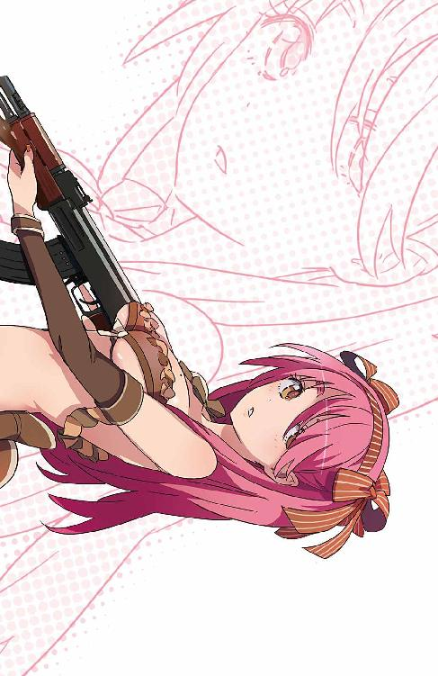

| GENEZ―7 ジーンズ GENEZ ジーンズ (富士見ファンタジア文庫) | |
| 深見 真 & ｍｅｂａｅ | |
| 富士見書房 (2012) | |



ＧＥＮＥＺ─７
ジーンズ
深見 真

富士見ファンタジア文庫
本作品の全部または一部を無断で複製、転載、配信、送信したり、ホームページ上に転載することを禁止します。また、本作品の内容を無断で改変、改ざん等を行うことも禁止します。
本作品購入時にご承諾いただいた規約により、有償・無償にかかわらず本作品を第三者に譲渡することはできません。
本作品を示すサムネイルなどのイメージ画像は、再ダウンロード時に予告なく変更される場合があります。
本作品は縦書きでレイアウトされています。
また、ご覧になるリーディングシステムにより、表示の差が認められることがあります。
口絵・本文イラスト mebae
口絵・本文デザイン 伸童舎
プロローグ
北アフリカ、反政府デモで混乱するリビア──。首都トリポリの旧市街は、中心部と違って高層建築が少ない。高くても、せいぜい三階建て。旧市街は全体的に砂の色をしている。壁のところどころに、塗りたてのように鮮やかなラインが走っている。細い路地が入り組んでいるさまはまるで迷路だ。歴史の重みとアフリカのけだるさが漂うこの旧市街で、激しい戦闘が続いている。カダフィ大佐に栄光あれ。リビア陸軍、対テロ保安部隊のオマール少尉は、ロシア製の装甲車──ＢＭＰ－３歩兵戦闘車──の車長席で、照準用のサイトを覗きこみつつほくそ笑んだ。──追い詰めた。
オマールの部隊は、リビアで連続爆弾テロを仕掛けた謎の犯罪者を追跡していた。
服部一徹。
──という名前以外、すべてが不明。名前からすれば日本人だが、それがはたして本名かどうかわからないから確定的な情報ではない。彼を追うオマールの私見──冷静な男、優れた作戦を立案する男──残忍な男、根っからのサディスト。高い身体能力。ありとあらゆる戦闘行為に精通し、特に爆弾のプロフェッショナル。よほど有力なスポンサーがついているのか資金は豊富。やつの爆弾によって、すでに八〇〇人を超える死傷者が出ている。
服部一徹は爆弾で人間をコントロールする。まず、最初の大爆発が起きる。爆発を恐れて、群衆が避難する。ところが避難した先にも爆弾が仕掛けてある。次の爆発で、また大勢が死ぬ。救助、捜査、死体回収のために人が集まる。野次馬も集まる。そこで、三度目の爆発。ひどいやり方だ。念入りで、残酷趣味が丸出し。まるで山猫がネズミをゆっくりと食い殺すかのようだ。
服部一徹の戦闘能力は人間離れしていた。彼を追いかけた警官や情報部の工作員が、少なくとも四〇人は爆弾以外の方法で直接殺されている。こうして結局、歩兵戦闘車や、もっと強力なシロモノを出すことになった。
オマールが乗り込んだＢＭＰ－３歩兵戦闘車の前方を、異形の戦闘車両が時速六〇キロで走行していた。
強力なシロモノ、異形──ゲパルト自走対空砲だ。
リビア軍ではロシア製の兵器を使うことが多い。とはいえ、西側の兵器もまったく購入していないわけではない。ゲパルト自走対空砲は西ドイツで開発された旧式の兵器だが、高性能なので現在の戦場でも通用する。
自走対空砲と言っても、その機関砲の俯仰角はマイナス一〇度からプラス八五度まで。つまり、地上の標的を掃射することもできるのだ。大口径機関砲、発射速度毎分五五〇発という高火力は、低空飛行の航空機を相手にするだけではもったいない。
レオパルト１主力戦車の車体に、スイス・エリコン社製長砲身三五ミリ対空機関砲を二基装備した砲塔を搭載。捜索レーダーと追跡レーダーがコンピューター制御の射撃統制装置と連動し、機関砲の高い命中率を叩きだす。砲塔上部の捜索レーダーは高速で回転し、死角がないことをアピールしているように見える。
服部一徹は、リビア軍から盗んだ軍用ジープでトリポリ旧市街を逃走中だった。もう、追い詰めた。すでに四台の歩兵戦闘車が二個中隊とともに配置につき、たった一人で突破するのはどう考えても不可能だ。曲がりくねった道を激走する服部のジープ、それを追うオマールの歩兵戦闘車、そして対歩兵戦闘、対軽装甲車両戦闘の切り札であるゲパルト自走対空砲。
「追いかけっこは終わりだ」
オマールは、ゲパルト自走対空砲の車長に無線で指示を飛ばした。
「あのジープを吹き飛ばせ。運転手も粉々にしてしまえ」
『了解』
距離が近いので、ゲパルト自走対空砲はレーダーを使わず、光学照準で狙いをつける。
「──ッ！」連装機関砲が火を噴いた。弾倉にセットされてるのは、地上目標にも有効な焼夷榴弾だ。ドドドドッ！ と巨人が地団太を踏んだような凄まじい砲声が響き、大きめの空薬莢が路上に散らばる。焼夷榴弾は標的に炎と破片をもたらす。一瞬で四〇発近い砲弾が、服部一徹が乗っているはずの軍用ジープに着弾。車体にボコボコと大穴が開き、たちまち爆炎に包まれてジープは跳ねあがった。
爆発したジープはきれいに空中で半回転した。上下逆に、ジープの天井が地面に叩きつけられる。ゲパルト自走対空砲が、さらにもう数十発。ジープは完全に砕け散り、あとは残骸が燃えているだけだ。
これを食らって平気な人間など存在しない。ありえない。
オマールは運転手に命じて、自分が乗っている歩兵戦闘車を軍用ジープの残骸の近くまで進めた。ゲパルト自走対空砲はやや後方で待機。やがて、近くで検問を張っていた歩兵の一個小隊が、砲声と爆発音を聞いて駆けつけてきた。オマールは歩兵戦闘車を降りて、部下の小隊長に話しかけた。
「片付いたな」
「やりましたね、オマール少尉。死体を確認するのが大変そうです」
「肉片がいくつか回収できるだろうさ」
「──おいおいおい」
と、残骸の中から声がする。英語だった。
「誰が肉片だ、コラァ」
「──ッ！」信じられなかった。オマールとその隣にいる小隊長は目を丸くして、思わず顔を見合わせた。残骸をおしのけて、下から現れたのは一人の東洋人。スーツ姿で、スリングを使って肩にフルオートのショットガンをさげている。服部一徹と呼ばれる、正体不明のテロリストが、ほぼ無傷でそこにいた。
「俺の夢は──」
服部一徹は恍惚とした表情。
「世界中の憎悪を、この背中に引き受けることだ」
──しまった！
オマールは瞬時に状況を把握した。俺たちはやつの罠にかかった。
「ここは俺の『口の中』だぜ」
と、服部は人差し指を伸ばして、ついさっきまでオマールが乗っていた歩兵戦闘車を指し示した。その直後に、歩兵戦闘車の真下で、まるで火山が噴火したかのような爆発。車体が膨らみ、二つに折れてから宙を舞う。オマールたちも、その爆発に巻き込まれた。
肉片になったのは、オマールのほうだった。
──いつ爆弾を仕掛けたのか？
兵士たちは、疑問を抱いたまま次々と服部の爆弾で粉々になっていくだろう。
あいつら普通の人間には、何が起きたのか逆立ちしたってわからない──服部一徹は爆炎の中、狂ったように笑っている。まず歩兵戦闘車両、次にゲパルトだ。
ゲパルト自走対空砲とは、また珍しい兵器を持ちだしてきたものだ。できることなら自分の愛車にしたいような素晴らしいデザインだと服部は思う。
吹き飛ばすのがもったいない。
「でも、吹き飛ばすけどさ」
服部が仕掛けた爆発が連鎖する。
邪魔するものは爆弾で排除する。
クールなもんじゃないか──まるで俺はボンバーマンだ。
「こう見えても忙しくてね。さっさと行かせてくれよ。次の仕事も決まってるんだぜ」
服部は握り拳を突き上げる。ひときわ強烈な爆発が、車体から爆風で引きはがされたゲバルトの砲塔を二〇メートルの高さまでうちあげた。
「次の仕事は日本──久しぶりの故郷でテンションあがっちゃう！」
第一章 ときめきハッカー
１
ギリシャのポセイドン・アカデミーから謙吾たち──チーム・ビーバス＆バットヘッド──が帰還した。謙吾が狙撃され、短期留学先で襲撃された。敵の狙いは、ナイチンゲール──岩清水ユキナの詳細なデータとその身柄だった。グリークス本社と、グリークス日本支部は、特進クラスの生徒でさえも知らないうちに敵対していたのだ。激しい戦闘になり、妹の涼羽まで巻き込まれた。──それなのに。
再び、日常を繰り返している。何事もなかったかのように。
「............」教室で、特進クラスの「戦史研究」という授業を受けながら、しかし謙吾はどうしても別のことを考えてしまう。二月なのでまだ外は寒く、室内は暖房がきいている。視線が窓のほうに向く。今日の空は海の色そのものだった。引っかいたあとの傷のような、ほんの少しの雲が流れている。
思い出す。こども学長・厳島アイナからの指示。「......大騒ぎにしないでほしい。いわば『身内』のトラブルだ。密かに処理できれば、それが一番なんだ」
確かに、謙吾たち学生傭兵のレベルでどうこうできる事態ではない。偉い人同士の話し合いで「手打ち」をしてもらうしかないのだ。そもそも、本社と支部が対立する、という構図が謙吾にはよくわからない。それは厳島一族の特殊性が呼び寄せたトラブルなのか？ それとも、グリークス本社には謙吾が知らない秘密が──。
「謙吾！」
別のことを考えているのを、教師に見咎められた。教壇に立っているのは、歴史関係の授業を教える大迫伝次郎だ。くたびれたスーツ姿で、ネクタイはだらしなく緩み、顎に無精ひげを生やしている。
「俺の授業は退屈で聞いちゃいられないか？ ん？」
「いえ、聞いていました」
謙吾は噓をついた。つい。
「じゃあ、今授業でやってたところに関する質問だ。太平洋戦争時、日本軍によるキスカ島撤退作戦」あまり真剣に怒っている感じではなかったが、大迫は教師としての威厳を示したがっているように見えた。「その成功要因を三つ答えろ」
「はい」正直、授業は聞いていなかった。それでも、戦史関係は謙吾の得意中の得意だ。キスカ島撤退作戦。奇跡の撤退。「一つ、司令官・木村昌福少将の、濃霧が出るまで作戦開始を待った忍耐。二つ、当時最新のレーダーを搭載した駆逐艦の投入。三つ、第一水雷戦隊の練度の高さです」
「......かわいくねえよなあ、こういう生徒は」
謙吾の回答に、大迫は苦笑するしかなかった。授業が再開する。謙吾も、自分の思考を再開する。
こども学長、そしてグリークス日本支部上層部は本社に強く抗議をしたはずだ。日本支部に所属する学生傭兵が襲撃され、命が危なかったのだ。非は明らかに、向こうにあった。すぐにこども学長から公式非公式を問わず、何らかの結論が告げられるはずだと思っていた。ところが、それ以降こども学長の口から本社の話が出てくることはなかった。こちらが訊ねても、「ギリシャのことは早めに忘れたほうがいい」の一点張りなのだ。そんなことを言われても、謙吾は困ってしまう。──危うく死ぬところだったんだぜ？
謙吾たちが騒いでも無駄だった。まさか、警察に通報するような話でもない。そして、学生傭兵たちは日常に戻るしかなかった。訓練を積み、戦術・戦略を学習し、様々な特殊技術を取得する海神学園の日常だ。
まったく納得できなかったが、こういう気分に覚えがないわけではない。たとえば、某国がミサイルを撃ってそれが日本上空を通過しても、日本政府は「抗議」をして、「遺憾の意」を表明して、それで終わりだ。某国と隣の国の、いくつもの軍事衝突。事故なのか誤射なのか、民間人が巻き込まれて死んでもなんとなく「なかったこと」になっている事件はいくらでもある。未解決事件だってたくさんあるんだ。あの事件、あのニュースの続報は？ 隠蔽なんて大袈裟なものじゃない。テレビや新聞で扱わなくなった事件は勝手に忘れ去られていく。
──俺も、忘れるしかないのだろうか。こども学長の指示通りに。
このままでは、以前と同じ気分で任務に出ることができないと思う。上層部への不信を抱えたまま最大限の力を発揮できるほど、謙吾は単純な兵士ではなかった。
仕方がない。仲間と相談しつつ、新たな動きを待つしかない。最も重要なのは、これから何があろうとユキナを守ることだ。
放課後の教室に。いつものように、なんとなく、何事もなかったかのように仲間たちが集まる。セルジュに彩離。七湖。そして──ユキナ。それぞれ自分の部活に向かう前に、他愛ない雑談を交わす。誰ももう、ギリシャでの戦いのことには触れない。何かがおかしいことに気づいているのに、どうにもならないから余計なことは考えないようにしている。みんなそうだろう。謙吾だってそうだ。
「もうすぐ進級やな。留年しそうなやつなんておらへんよな？」
セルジュの言葉に、彩離が「うぐ！」と苦しそうな顔をした。
「そういや......進級試験があるんだよね」
「その先は、言わなくても分かる」と謙吾。「『実技には自信があるんだけど、学科試験がいつも難しすぎる......』だろ？」
「ふえ、なんでわかったの謙吾!? エスパー？ 心を読まれた？ 七瀬ふたたび？」
「違うよ、いつものパターンだからだよ！」
「また試験なのか」ユキナがため息をつく。「......きっと変なことやらされる」
そろそろユキナも特進クラスの試験に慣れてもいいころではないか、と謙吾は苦笑する。でもまあ、慣れないか、やっぱり。
ユキナも「普通」の女の子ではないが、そう簡単にはいかない。半日で何百発も弾丸を消費し、訓練用の爆弾や地雷を解除し、防護服をつけてガスの中を突っ切る試験を平気でこなすのは、よほど異常な育ち方をした学生傭兵だけだ。
「よう、謙吾。他のみんなも」
教室に先輩の林力也も入ってきた。上級生の彼がここまでやってくるのは珍しい。
「他のみんなって......林先輩って謙吾以外に興味ないんですか」
彩離が少し呆れたように言った。
「興味って......そういうわけじゃないんだが。謙吾は俺のちょうどいいスパーリング相手だからな」と林先輩。相変わらずでかくて、筋肉質で、顔が老けている。「試験も近いし、殴り合ったり、蹴り合ったり、関節を極め合ったりしようぜ」
「老け顔のうえに、暴力的ぃ」と、からかうように七湖。
「老け顔は関係ないだろ！ 老け顔は！ あと軍隊格闘技は暴力じゃない！」
林力也。なんだかんだでみんなに愛されている先輩だ。
林力也も特進クラスの生徒らしく、幼いころから戦場から離れられない人生を送ってきた。
林の父は、ある自動車会社の海外工場の管理を担当していた。日本に何年も帰ってこられない仕事なので、家族も一緒に赴任先の外国で暮らしていた。──そして、東南アジア某国で内戦に巻き込まれたのだ。林の一家はゲリラ勢力につかまって、林の父は「俺たちの国から搾取していた日本企業の手先」として残忍な方法で処刑された。
──それが、林力也の原点だ。
人間には二つ誕生日がある。一つめは、普通の誕生日。
もう一つは、人生の誕生日だ。少年兵の人生は、たいてい両親との別れから始まる。
「ところで、ちょっと妙なことを頼んでいいか？」
そう言って、林先輩はわざとらしく「こほん」と咳払いをした。
「どんなことでしょう」
「いや、謙吾にじゃないんだ」
と、林先輩はユキナに顔を向ける。
「岩清水さん、相談があるんだが、少しだけ時間を貸してくれないか？」
「......へ？ わたし？」
ユキナはちらりと謙吾のほうを見た。謙吾も驚いていたが、やがて何も言わずに微笑んで、軽くうなずく。ユキナもうなずき、
「わかりました。他ならぬ林先輩の頼みなら」
「助かる。いやなに、大したことじゃないんだ......部活が終わったあと、晩飯の前とかに軽く」
「わかりました」
「すまんな」と言って、林先輩は軍人らしくきびきびと踵を返し、歩き去る。
「林先輩がユキナに相談なんて驚いた」彼の広く分厚い背中を見送りつつ、謙吾がつぶやく。
セルジュはニヤリと笑い、「なんとなく相談内容は想像できるけどな」
「あたし全然わかんない......」と彩離。「なんだろう、ユキナは不死身だから、何か新しい技の実験台とか？」
ユキナは柳眉を逆立てて、「よくそんなひどいこと思いつくな！」
「えー。だってだって！」
「林先輩がそないなことするわけないやん」
「じゃあ、セルジュはもうわかったの？」
「もうすぐバレンタインデーやないか」
セルジュが軽い口調で言った。その言葉に、謙吾、ユキナ、彩離、七湖は一斉に「ああー」と声を出して納得する。「さすが淫獣。そういうのは忘れないんだ」と彩離。セルジュはくわっと怒った顔を作って、「淫獣言うな」
「でも、なんか筋は通るな」と謙吾。「これから、ユキナは武装メイド部だろ？」
「うん」
「林先輩、武装メイド部に気になる女の子がいるとか......」
「ぷふっ」と七湖がふきだす。「凄い。全然イメージに合わない」
「笑っちゃだめだよー」と言いながら、彩離も笑いをこらえて頰を膨らませている。「老け顔は恋愛しちゃいけないって法律があるわけじゃないんだから」
２
一時仲間たちと別れて、ユキナは武装メイド部の部室へ。この部に入ってしまったことはユキナにとって、学校を卒業したら一刻も早く「なかったことにしたい」現実ナンバーワンだ。たとえば将来、就職したとする。そして、新人歓迎会やら飲み会やらで同僚に訊かれるわけだ。「岩清水ユキナさんは学生のころは何をやってたの？」と。「武装メイド部です！」って答えたら、相手は──まともな人なら──どう反応するだろうか？
武装メイド部には、短いスカートに小さなエプロン、メイドカチューシャが似合う女子がそろっている。その中でもひときわ異彩を放つのが、やはり部長の梓馬亜佑美だ。ただ可愛いだけではない。ただ美しいだけではない。亜佑美には、もっと特別な何かがある。それはたとえば修羅場に叩きこまれたときの度胸や、戦闘になったときの強さだ。
「バレンタインデーに向けて特訓！」
でも、亜佑美はわけのわからないことを言いだすことが本当に多い。
「特訓......って」ユキナは──他の一年生部員たちも──目を白黒させた。「なんの特訓をやるんでしょうか？」
「バレンタインデーには、恋心を伝えなきゃ......！」と、亜佑美はバレエ選手のようにくるくると回転し、宝塚スタアが歌うように朗らかに言葉を紡ぐ。「失敗は許されないから、特訓が必要なんです！ 武装メイド部ヒミツ指令！ 気になる男の子や女の子の恋心をゲットせよ！」
ヒミツ指令、というわりと寒い単語にユキナは軽いめまいを覚えた。「うわあ......」という声が出そうになった。そして他にも、今の演説には気になる点があった。
ユキナは訊ねる。
「ちょっと待ってください、部長。気になる男の子ってのはわかりますけど、女の子って？」
「うちの部、百合っ娘もいるから」そう答えて、なぜか胸をはる亜佑美。
「......はあ」
「バレンタインデーなのに！ ほんのちょっと積極性が足りなかったばっかりに、ロンリーボーイ、ロンリーガールになってしまった子をたくさん知っているんです、私は！」
「部長、テンション高いですね......」
ユキナはついていくだけで精一杯だ。
亜佑美はぴんと可愛く人差し指を立てて軽く振り、
「私が好きな学者さんが言ってたんですが、バレンタインデーの本質は『贈与と返答』らしいですよ」
「急に難しい話になってきましたね」
「つまり、男子はチョコが欲しいなら、バレンタインデーのずっと前から紳士的な態度を維持し続けなければならないわけです。お金と同じで、チョコはそれに相応しい人間のところに自然と吸い寄せられていく......」
「お金と同じ、ってちょっと生々しくないですか」
「もちろん、男も女も顔がよければいいというだけじゃないんです。大事なのは努力なんです。『その日』に向けて自分を高めておきたい、と考えるようになれば、それは前向きなことだと思いませんか？ バレンタインにチョコ、ホワイトデーにお返し、なんて単純な話ではありません。最初はバレンタインデーなんてお菓子業界の仕掛けたキャンペーンだったのかもしれませんけど、今ではちゃんと特別な意味が生じている......」
「部長の言ってることは、ロマンチックなんだか論理的なんだかさっぱりわかりません」
「ほら、ユキナさんもその巨乳に手を当てて考えて」
「巨乳、って言わないでください！」
「いつも、力になってくれる気になる人はいませんか!? その人のために、もっと『素晴らしい自分』になりたいと願うような」
「............」ユキナの胸中に、すぐに謙吾の姿が浮かんだ
「バレンタインデー。その人に、感謝の気持ちを伝えたいと思いませんか!?」
と、亜佑美が追い打ちをかけてきた。
「それは、まあ......確かに」
「じゃあ、これに着替えてきてください！」
と、亜佑美は勢いよく、隠し持っていた衣装をユキナの眼前に突きつけた。
その服を見て、ユキナは目を丸くして怒る。
「恥ずかしすぎますよ、そんなの！」
「これならどんな男の子だってイチコロ！ みんなでこの衣装を着て、武装メイド部のイベント──素敵なパーティをやるんです！」
「『変な女の子』たちだって思われて、それで終わりですよ！ 下手をしたらただの痴女じゃないですか！ 第一、部長はこの衣装着たことあるんですか!?」
「えっと......」ユキナの思わぬ反撃に、亜佑美は口ごもった。急に落ち着かない感じで左右にきょろきょろと視線を動かしてから、「もちろん、ありますわ」と言い、何かをごまかすようにわざとらしく口笛を吹く。
「噓だ！ 今のは絶対に噓だ！」と、ユキナは亜佑美を指さす。「そもそもですよ。そもそもの話。部長はいるんですか？」
「へ？」
「バレンタインデーに思いを伝えたい相手が、です」
「............」亜佑美は、顔を真っ赤にして立ち尽くしてしまった。この高校生離れした少女が、こんなふうに戸惑いをみせるのは滅多にないことだ。時代劇でよくあるシーンだ、とユキナは思う。師匠を越えようとしている弟子が、ついにその切っ掛けをつかんだ瞬間。
「もしかして......」今度は、ユキナが追い打ちをかける番だった。「部長って、意外と男性経験少ないんじゃないですか......？」
「そ、そんなわけないじゃない......まったく」
亜佑美は自分の心を守るように腕を組んだ。一見堂々としているが、ああ、これは強がっているな......とユキナは見破る。
「他人にはさんざんけしかけるくせに......」
「ちょ、う、もー！」亜佑美はむちゃくちゃに両手を振り回す。まるで駄々をこねる子供だ。「いい加減にしないと怒るんだってば！」そして亜佑美は、太腿に巻いているホルスターから拳銃を抜いた。Ｓ＆ＷのＭ＆Ｐ９ｃ拳銃。中に装塡されているのは訓練用の非致死性プラスチック弾のはずだ。実弾ではなくても銃は本物というのが、いかにも海神学園・特進クラスらしくて恐ろしい。
亜佑美は心の声で叫ぶ。──バカボンのおまわりさんみたいだ！
「危ないからやめてください！ わかりました！ 部長は経験豊富なテクニシャンです！」
「わかればいいのよ、わかれば！」
亜佑美はぶー、と頰を膨らませていた。
３
ユキナやセルジュ、彩離も自分の部活に向かった。謙吾と七湖、二人きりになる。
「謙吾は部活は？」
七湖に言われて、謙吾はどきりとした。表向きは読書会に通っているふりをしているが、本当は変態スナイパーの張鐘とともに恋愛シミュレーションゲーム研究会をやっている。恥ずかしいので女子には隠しているのだ。でも、七湖は特別な女の子だ。特殊な共感覚者。電脳戦のプロフェッショナル。謙吾とも、オンラインゲームが切っ掛けで知り合った。彼女に隠し事をするのは難しい。もしかして、七湖にはもうすべて見抜かれているのではないか──そんな危惧が、謙吾の胸中をよぎる。
「......今日は、なんかいいや」
謙吾は言った。自分でも驚くほど疲れた声になっていた。ゲーム──特に美少女もの──は謙吾にとって貴重な息抜きだ。しかし、今は妙にそういう気分になれない。息を抜いてはいけないような気がする。
「なんか、悩んでる？」さすがに、七湖に気づかれた。
「んー......」悩みはいくつもある。言葉にできないもやもやしたものから、はっきりと形になっているものまで。その中から、謙吾は一番相談しやすいものを選んで口にした。「......本当は、涼羽とちょっとヴェルトハイム公国までいきたいんだよ」
「ヴェルトハイム......？」
一四歳でハーバード大学を卒業し、史上最年少博士号取得の記録保持者でもある大牙涼羽。伝承と神話学専攻。ヴェルトハイム公国公女の家庭教師だが、ここ何カ月か、海神学園で敵から入手した様々な資料の解読と分析を行っている。
「涼羽が言ってたんだ。母を殺した犯人の情報がある、と」
目の前で、自動車爆弾で吹き飛ばされた母。あのとき、大牙兄妹の人生は変わった。生まれ変わったように急激な、人生の転機だった。あまりにも子供には衝撃的過ぎた光景。ところが、もっと悲惨な光景を山ほど見てきたせいか、記憶が段々とおぼろげになってきている。
謙吾は続けて、涼羽から聞いたことを伝える。ヴェルトハイム公女様が新しく雇った護衛が、元イギリス陸軍の特殊部隊ＳＡＳだったということ。
その男が、『ある極悪非道の殺し屋を追っていた。その殺し屋は、自動車に爆弾を仕掛ける手口を得意としていた。日本でもある政治家を狙って仕事をしたことがあるらしい』と話していたこと。
「そんな大事な話なら、いけばいいのに」
「ギリシャの件もある。今の俺に、そんな旅行は許可がおりないだろう」
「じゃあ、電話とかＥメールとか」
「無理だろう。十中八九、筒抜けだ」
グリークス本社の情報網・組織力なら、その程度たやすいはずだ。謙吾を──いや、正確にはチーム・ビーバス＆バットヘッド──を取り巻く状況は錯綜している。高等部学長の厳島アイナは味方だろう。だが、厳島一族が味方かどうかはわからない。バビロン・メディスンは敵だろう。だが、ニムロッドのユニット１が──涼羽を助けてくれた女性のギルガメシュとナイチンゲール──が敵かどうかはわからない。
「そりゃあさ、謙吾が使うような携帯やパソコンじゃ筒抜けだと思うけど」
と、七湖がなにげない口調で言った。
その瞬間、謙吾は「あ」と声をあげた。七湖の言う通りだ。謙吾が使っている携帯やパソコンではだめだ。「ってことは......七湖なら大丈夫なのか？」
「できると思う。超高校級、すーぱーえーす、すーぱーはっかーですから」
なぜか七湖は舌足らずな口調で言った。
「ありがとう。恩に着る」
「タダじゃやだ」
と七湖。たまに彼女は、小悪魔のような横顔を謙吾にみせる。
「報酬か？ 多少は貯金がある」
「お金なんて、私にはなんの価値もないよ。その気になれば、銀行のコンピューターに......」
「こらこら、犯罪だって」
「冗談だよ。今はもう、そういうのはやんない」七湖は悪戯っぽく笑う。
「じゃあ、なにが必要なんだ？」
「それはね......」
七湖は、謙吾の耳に口を近づけて、ささやく。恥ずかしいので、万が一にも誰かに聞かれないように。「............」まるで秘密のナイショ話のように。
「ふんふん、ふん......って、えッ!?」
謙吾が驚いて顔を強張らせた。
二人は、途中自販機で飲み物を買ってから、七湖の部屋に移動した。彼女専用のハイスペックマシンが組んであるからだ。ゲームや漫画にまじって、たまに女の子らしい可愛い小物やぬいぐるみがあり、謙吾をどぎまぎさせた。ユキナの部屋もそうなのだが、なぜ女子の部屋は男の部屋と決定的に「匂い」が違うのだろうか、と不思議になる。女子専用の芳香剤でも出回っているのだろうか。
「約束は守ってよ」
そう言いながら、七湖はパソコンデスクに向かった。
「仕方ないな......」
謙吾は、すぐ後ろから七湖の作業を見守る態勢だ。
「相手のアドレスは？」
「涼羽から教えてもらってる」と、謙吾は必要な情報が書かれたメモ用紙を七湖に渡す。
「暗号化したライブチャットが一番安全かな」七湖は、パソコンデスクの空いている場所に自販機で買った缶コーヒーを置いた。「......で、打ち込んだ文字情報は、私たちが見たらすぐに自己崩壊していくの」
「つまり、どういうことだ？」
「時代劇で、忍者が手紙をやり取りするシーンがあるでしょ？ そういうのって、必ず手紙は燃やすじゃない。それを、電子上でやるの。こっちのセキュリティを抜けて相手が侵入してきても、サーバーにもメモリにも、もう何も残ってない。私たちも、二度とやり取りした情報を見返すことができないっていう欠点があるけど、それより何をやってるか怪しい連中に知られないほうが大事でしょ？」
「ああ、その通りだ」
事前に、涼羽に頼んでヴェルトハイムの情報提供者に国際電話をかけてもらっておいた。その電話の内容は盗聴されていることが前提の、当たり障りのない会話ばかりだったが、近いうちにもう一度、こちらからより重要な用件で連絡することを匂わせていた。相手が察しのいい人物なら、パソコンの前で待機していてくれるはずだ。
七湖が、独自に組んだチャットプログラムでヴェルトハイム公国の対象人物に話しかけた。迷彩として、何カ国ものサーバーやまったく関係ない企業のパソコンを複雑に経由している。
そのチャットプログラムは、Ｐ２Ｐ技術を利用したインターネット電話サービスやインスタントメッセンジャーといった、一般的によく使われているリアルタイム・コミュニケーションツールとほぼ同じものだった。違うのは、七湖独自の特殊なセキュリティ──自己崩壊、アポトーシス・システムが組み込まれていることだ。
チャットプログラムの会話ウィンドウに、反応があった。『──誰だ？』
「どう返事する？」
と七湖が訊ねてきたので、
「俺の言う通り、文字を打ってくれ」
謙吾は頼んだ。
──あなたが、元ＳＡＳの人ですね。
と、謙吾は言った。七湖はその言葉通りキーを叩いた。
『そうだ。そちらは公女様の家庭教師、涼羽さんの家族だな』
──はい、大牙謙吾です。
並んだ文字は、次の一文を打ち込むエンター・キーのたびに消えていく。過去ログは一切残らない。今のところ、すべてが順調だった。
『私はマックス・マイルズ。ＳＡＳでの最終的な階級は曹長だった。今は公女様の護衛についている』
──あるテロリストについて、情報を握っていると聞いた。
『涼羽さんに少し話したが、それが本当に君たちの母の仇かどうかはわからない』
──それについては、こちらで判断する。
『わかった。話そう。
我々ＳＡＳの一個小隊が、あるテロリストグループを殲滅する任務に従事していた。私もその部隊にいた。もちろんＳＡＳ単独の情報収集能力には限界がある。イギリス情報局秘密情報部が協力してくれた』
マイルズは続ける。
『そのグループは、報酬次第でどんなテロ・破壊行為でも行う、政治的信条や道徳観の欠如した連中だった。グループ名は「ヘーリオガバルス」だった。狂気と乱行で有名なローマ皇帝の名前からとっていたんだ』
──趣味が悪い。
『ああ、その通り。本当に最悪の連中だった』
それから少しだけ、マイルズはその雇われテロ・グループ、ヘーリオガバルスの過去の凶行について説明した。化学兵器を流出させ、ある軍事基地を壊滅させたこと。民間の旅客機に爆弾を仕掛けて吹き飛ばしたこと。イランやイラク、アフガニスタンで営利目的の誘拐を行い、金が手に入ったらほぼ間違いなく人質は殺してきたこと。兵器や麻薬の強奪と密売。人が思いつく悪事のほとんどをやってきた連中──。やがて彼の話は本題に入っていく。
『ヘーリオガバルスのメンバーに、一人だけ日本人がいた』
──日本人？
『本名は不明だが、コードネームは「ニンジャ」だった』
──日本人でコードネームがニンジャ？
いくらなんでも、安直すぎないか？
『ＳＡＳやＳＩＳがつけた名前じゃない。やつらが、仲間内でそう呼んでいたんだ。コードネームとはいえ、俺だってひどいセンスだと思う』そこで、一瞬間があいた。パソコンの向こうで、マイルズが咳払いでもしたのかもしれなかった。
『とにかく、ニンジャという男がいた。グループの中で、最も残忍な男だった』
──具体的には？
『爆弾のプロだ』
謙吾の眉がぴくり、と跳ねた。
母が殺されたときの光景を思い出した。謙吾はうつむき、思わず奥歯を嚙みしめた。なんだか急に気分が悪い。軽く、吐きそうだ。
「......大丈夫？ 謙吾」と、七湖の心配そうな声。
「......ああ、大丈夫だ。問題ない。続けてくれ」
謙吾は顔をあげて、意識して表情を和らげ、再びチャットのウィンドウに目をやる。
『専門家でも解除不可能な特殊爆弾を使っていた。それを、自動車に仕掛けるのがやつのお得意の手口だ。その暗殺成功率は、限りなく一〇〇パーセントに近かった』
──近かった？ 一〇〇パーセントではなかった？
『そうだ。日本である政治家を狙って仕事をして、しくじったことがあるらしい。普段は冷静なニンジャだが、その仕事の話になると不機嫌になるそうだ』
──誰を狙ってしくじったのか、わかるか？
『残念ながら、わからない。だが、ＳＩＳが調査した結果、条件に当てはまる政治家はゲンイチ・タイガしか考えられないそうだ』
大牙厳一。やはりか。
──ヘーリオガバルスはどうなった？
『作戦は成功した。こちらにもかなりの犠牲者が出たが、組織はなんとか壊滅させることができた。──しかし、ニンジャと、数人の幹部には逃げられてしまった。しつこく追跡したが、今も手掛かりはつかめていない』
──ニンジャに関する情報はもっとないか？
『もうない。あなたは公女様の恩人だ。俺は自分を拾ってくれた公女様に感謝しているから、もっと協力したかったが......ここまでだ』
──わかった。ありがとう。あとはこちらでなんとかしてみる。
『ちょっと待ってくれ。一つだけ思い出した』
──言ってくれ。
『ニンジャは用心深い男で、その写真は一枚も撮影することができなかった。だが、ニンジャと一緒に行動していたテロリストを逮捕して、身体的な特徴を聞き出したことがある。ニンジャは、左目がないらしい。爆風で失って、今は義眼を入れているそうだ』
──それだけか？ もっと詳しく聞き出せなかったのか？
『そのあと、逮捕した男はすぐに爆殺された。ニンジャの「保険」がかかっていたんだよ』
４
亜佑美部長をなだめて、バレンタインデーにやるイベントの特訓を行い、ユキナは制服に着替えて部室を出た。今日も疲れた......と思わずため息が出る。こんなことをやっている場合なのか、と不安になる。たぶん、謙吾も悩んでいる。──セルジュも、彩離も。でも、誰もそれを表に出したりはしない。あまりにも自分たちにできることが何もないからだ。そういう意味では、今は「こんなことをやっている」場合なのだろう。いつもみんなで一緒に夕飯を食べる寮の食堂に向かっていると、その建物の前に林先輩が立っていた。──そうだった。彼から何か相談があるんだった。
「あ、どうも」
「すまんな」
林先輩も部活が終わったばかりらしく、髪の毛や首筋が汗で濡れていた。よほど激しいトレーニングのあとらしく、体温が上昇して湯気が立っているように見える。さすが、軍隊格闘技研究会のエースだ。疲れているだろうに、顔は平然としている。
「岩清水は、もうメイド服じゃないのか」
「......あの部室以外であの服を着るのはできる限り避けたいので」
「ああ、まあ、そりゃそうか」
「で......その、一体どういうことなんでしょうか？」
「実は......その......」林先輩はユキナから視線をそらした。「その、だな......」
変な林先輩だなあ、とユキナは思う。いつもはもっとこう「軍人！」という感じなのに。今日はどこか自信なさげで、まるで高校生のようだった──いや、高校生であってるのか。それにしても、ユキナがいくら待っても林先輩は本題を切り出してくれない。
「はっきり言ってくださいよ、もう」急かしてみる。
「お前んとこの部長、ほら」と林先輩。ようやく話が前に進んだ。
「ああ、亜佑美部長」
「......彼氏とかいるのか？ 彼女」
という林先輩の質問に、
「あッ！」
ユキナは驚きの声をあげてしまった。
「えっ、えっ、えっ......あー！ あっ！ そういうことかあ！」
「や、やめろ！ そんなに驚くな！ 恥ずかしくなるだろ！」
セルジュが言っていた。『もうすぐバレンタインデーやないか』
そして謙吾が言った。『林先輩、武装メイド部に気になる女の子がいるとか......』
予想が当たっていた。似合わないけど、恋をしているのだ。林先輩は。
一瞬で、様々な考えがユキナの脳裏をよぎった。──好きになった切っ掛けは、なんだろう？ 確かに、林先輩と亜佑美部長は特進クラスのエース。ＧＥＮＥＺやセルジュを除けば、その戦闘能力はグリークス日本支部でもトップクラスといわれている。林力也、梓馬亜佑美、そしてスナイパーの張鐘翔太──。最近は「特進の三羽ガラス」と呼ばれることもあるそうだ。実力のレベルが高いので、林先輩と亜佑美部長は顔をあわせる機会も多いだろう。厳しい任務をくぐり抜けていく中で、いつのまにか恋心が芽生えていたとしても、不思議はないのかもしれない。美しい亜佑美部長と、男らしいことにかけては誰にも負けない林先輩、意外とお似合いのカップルなのかも──。
「で、どうなんだ......？ あの人に浮いた噂とかはあるのか？」
「そんなの......本人に訊けばいいじゃないですか。それが一番進展しますよ」
「ぶふッ」林先輩は顔を真っ赤にしてふきだした。「それができれば苦労しねぇよ！」
「そりゃ、確かに......そうでしょうけど」
ユキナだって、人のことは言えない。他人の恋愛にアドバイスするだけなら、いくらでも大胆になれるものだ。
「いないですよ、部長」
「ん？」
「だから、彼氏」
「......本当か」
「はい」とユキナはうなずく。
──林先輩、平静を装ってるけど、内心バラ色ハッピーなんだろうなあ。
今日の一件で、ユキナの中で、彼に対して抱いていたイメージが大きく変わってしまった。
「ということは、バレンタインデーも大丈夫そうか？」
「どうでしょう......？ 今はとりあえず、武装メイド部のイベントのことで頭がいっぱいみたいですよ」
「イベント？」
ユキナは説明した。普段休みが少ない海神学園の特進クラス。しかし上層部も、生徒に息抜きが必要なのはわかっている。そこでバレンタインデーには、部活が部室を一般生徒に開放して、恋愛にからんだちょっとしたイベントを行うことが許可されているのだ。武装メイド部だけでなく、たくさんの部活が、様々なイベントを準備しているという。
「そっか......そんなのがあるのか......」
「もう時間がないし......チョコもらうのは諦めたほうがいいと思いますよ」
「うーん、焦りは禁物だからな。恋も軍隊も」
恋も軍隊も、という言葉が面白くてユキナはふきだしてしまった。
「あ！ だ、だから笑うなって！」
「だって......林先輩って、こんな間抜けな一面もあったんですね。老け顔なのに」
「老け顔関係ないだろ！」
第二章 バレンタインデー・キス
１
東京都、練馬区──豊島園にある幼稚園の近く。薄汚れたボクシングジムに、筋骨たくましい男たちがいる。一二人。平均身長は一八〇センチを超えているだろう。日本人は一人しかいない。ボロボロのロープに、シューズのゴムで痕がついた床。使いこまれたミットやヘッドギア。いかにもなボクシングジム──しかし、ここにいるのはボクサーたちには見えない。その気配は明らかに、人を殺したことがある兵士のもの。
その日本人は、男たちの中心にいた。下はジーパンで、上は裸。体脂肪率の低い、ギチギチと音がしそうなほど絞られた、筋肉質な体。体中に銃創、あるいは古い火傷。安っぽいパイプ椅子に腰かけて、タバコの煙をくゆらせている。
顔を見ればその男は、常時、唇に世界のすべてを見下すような笑みを浮かべていた。目と目の間隔が離れていて、どこか魚っぽい。
彼の名は、服部一徹といった。
ボクシングジムの奥にある事務室には、密閉型の死体袋が何個も積んであった。中身が腐らないように、たっぷりと粉末状の防腐剤がまぶしてある。変わり果てた姿の、このジムの本来の利用者たちだ。練習生やトレーナーを皆殺しにして、今は服部たちが勝手に使っている。
服部がリーダーであり、他の男たちはすべて部下だ。金を賭けてトランプしたり、自分の武器を手入れしたり、それぞれ思い思いの方法で暇を潰している。
そんなボクシングジムに、一人の女が入ってきた。
彼女の名前は、徐晶晶。台湾出身で、ここ数年、服部の補佐役として働いている。長い髪を金色に染めているので、あまり戦う人間──特殊傭兵──には見えない。シューがラムレザーのコートを脱ぐと、下はタンクトップにレギンスという活動的な服装だった。男たちほどではないが、彼女も鍛えた筋肉がついている。
「犬はいたかい？」
顔を見るなり服部にそう訊かれて、シューは「......は？」と目を白黒させた。
タバコをふかして服部は続けて言う。
「東京には、本当に野良犬が一匹もいないんだな」
「犬がお好きなんですか？」と、シュー。
「子供のころ、犬に自分のイチモツをしゃぶらせるのが大好きだった」服部は、真顔で言った。冗談や噓を言っている顔ではなかった。「俺のいきりたったものを突きつけると、なぜか犬は逆らわないんだ。オスメス問わず」
「............」
「犬どもは知ってたのかもな。逆らったら死ぬって」
シューの片頰が引きつった。世界でもトップクラスの傭兵であることは間違いないが、異様な男だ。なるほど、この男なら「金をもらった」というだけでどんな犯罪にでも手を染めることができるかもしれない。
「で、内通者からの連絡はあったのか？」
と、服部は急に仕事の話を振ってきた。
「はい」シューはうなずき、「海神学園のセキュリティシステムにすでに時限型のウィルスが仕込んであるそうです」
「学生傭兵育成校なんて息巻いてても、実情はボロボロだな......」
そう言って、服部はいひひと低く笑う。
「バレンタインデーとかで、浮かれてますよ。しょせんは高校生ですね」
「まあ......どんな厳しい訓練受けてても、青春は青春だもんな。かわいそうに。全部台無しになっちゃうんだぜ」
服部は短くなったタバコを床に捨てた。そして、素足のかかとで踏み潰して火を完全に消す。
「なあ、シュー」
「はい」
「俺にチョコないの？」
「......当日は、私たちもとてもそんな余裕はないと思いますが」
「ばっか。冗談だって」と服部は馬鹿笑い。「甘いものは苦手なんだ」
「............」
「いよいよだ、準備を始めるぞ。野郎ども」
２
海神学園。大牙謙吾は部室棟の地下──パソコン部の部室を訪ねた。そこには、ファンタスティック・スリーと呼ばれる三人組がいる。コバさん、ヒデヨシ、鞠歌。頼りになる電子の天才たち。一時期、七湖もくわえて「ファンタスティック・フォー」になったと喜んでいたが、かんじんの七湖が「あの人たち、ヘンタイっぽいからあんまり一緒にいたくない......」などと冷たいことを言って距離をおいてしまっている。
「『ニンジャ』ってコードネームはひどすぎるだろ......」
と、コバさんが少し呆れた顔で言った。
謙吾は唇を歪めて眉間にしわを寄せる。「......俺がつけたわけじゃないから、文句言われても困る。というか、俺もひどいと思ってる。口にするのが恥ずかしくて困る」
「で」と、ヒデヨシは会話しつつもぼりぼりとスナック菓子を食べている。「俺たちはその元ＳＡＳの人の情報をもとに、『ニンジャ』の情報を集めればいいのね」
「ああ。だが細心の注意を払ってくれ。とにかく、最近この学校の周囲がおかしいことになってる」
「どうして七湖さんに引き続きお願いしなかったの？」
「七湖は進級試験の実技に問題があるから、その特訓が始まったんだ」
「そういうことなら......」と鞠歌が腕まくりをしてやる気を示す。「がってんしょうちのすけ、ですよー」
「がってん......って。お前は昭和の人か。まったく」と謙吾。「時間はどれくらいかかる？」
「やってみんとわからん」とコバさん。「空振りってこともある。難しいぜ」
「わかった。何か進展があったら教えてくれ。その元ＳＡＳからの情報は、俺がこいつにまとめておいた」謙吾がこいつ、と言ったのは小さなＵＳＢメモリだった。彼はそれをとりあえず鞠歌に渡した。「じゃあ、任せた」
謙吾が部室から出ようとすると、コバさんに「ちょい待ち」と呼び止められる。
「なんだよ」
「報酬は？」
「......ええ？」謙吾は、またか、と心底うんざりした顔をした。七湖に続いて、ファンタスティック・スリーまで報酬を要求してくるとは。普段はたいていのことはタダでやってくれるのに。これも、不景気で人の心が荒んできているせいなのか。
「そんな顔するなよ、感じ悪いな」
「いやまあ......だって、コバさんがそういうこと言うなんて珍しいからさ」
「俺たち──海神学園──の危険に直接関わることならともかく、これは謙吾の超個人的な依頼だろう。ボランティアってわけにはいかん」
「そういうものか......？」
「単純に、何か報酬があるほうがやる気も出る。プロが高額の報酬を要求するのは、実力に見合った正当な対価というだけでなく、その報酬の重みを感じて自分自身にいい意味でのプレッシャーをかけていくためでもある。あんまり慣れ合いになっちゃうと、緊張感がなくなって互いにダレた仕事をすることに。ちょっと引き締め直していこうぜ」
「ふうん......確かにその通りかもしれない」
でもなあ、と謙吾は言葉をつなぐ。
「お前らみたいなスーパーハッカー集団が喜ぶような報酬とか、用意するのが超大変そうなんだが......」
「謙吾に無理そうなことは最初から頼まんよ」
「俺は、限定発売のケーキがいいお」ヒデヨシが言った。その口と指は、お菓子の粉で汚れている。「あとで店名教えてあげるから、並んで買ってきてよ」
「......まあ、それくらいなら」
「謙吾さんが美女ならＳＭプレイでＯＫなんですけど......」
鞠歌は唇に指を当てて考える。
「俺が美女ならそれは断ると思うよ」と、にっこり笑って謙吾。
「あ」と鞠歌は何かを思いつく。「じゃあ、私もちょっとおつかいをお願いします。お金は渡しますんで、いくつか欲しいものを買ってきてほしいんですが」
「わかった。ちなみに、どこで何を買ってくる？」
「大人のおもちゃの店です。凄くいい店なのに、ネット通販やってなくて。ローションとかプレイ用のろうそくとか、消耗品が足りなくなってて」
謙吾は聞きたくなかった！ と内心絶叫する。
「自分でいけよ！」
「恥ずかしいじゃないですか！」
「おいおい！ 俺も恥ずかしいに決まってるだろ。やっぱだめだそれ。他のにして」
「謙吾さんさっき『わかった』って言ったじゃないですか！ 男が一度吐いたツバをのみこむんですか!?」
「どうして長州力っぽい言い方するんだよ！」
「断るんなら、私はこの仕事を降ります。もう、やりません」
鞠歌はぷいっとそっぽを向いた。
「......！」謙吾のこめかみに、太い血管が浮かぶ。思わず、拳を握りしめて固める。いっそもう鞠歌には降りてもらうか──いや、ファンタスティック・スリーは一人一人が優秀だが、最大の力を発揮するのは三人そろったときだ。謙吾は半ば自暴自棄になって叫ぶ。
「ああ、もう！ やるよ！ 時間ができたらいってくる！」
「助かります」鞠歌は満面の笑みを浮かべた。
それが、謙吾の神経を逆なでする。いくらこっちがお願いする立場とはいえ、好き勝手なことを言いやがって──。深呼吸をして必死に怒りを抑えて、なんとか愛想笑いを取り戻し、
「で......コバさんは？」
「俺への報酬は簡単だよ」と、コバさんは立ち上がって謙吾の肩を軽く叩く。「軽く手術をして、お前にチップを埋め込んでいいか？」
「どこが簡単ですか！ ちょっとした宇宙人による地球人拉致みたいな」
「ＧＥＮＥＺのＤＮＡコンピューターに興味があるんだよ。俺たちが想像してるものとは、どうもちょっと違うらしい。謙吾に埋めたチップで、情報収集したいんだよ。訓練でも実戦でも、どっちでもいいから装着してからのデータが欲しい。あー、うん。もちろん、ＧＥＮＥＺの管理システムには絶対に気づかれないようにする」
「それはだめです」謙吾は硬い顔でかぶりを振った。「軍事機密だ」
「どうしても？」
「残念ですが、それだけは無理。依頼するのをやめます」
謙吾は断固とした決意を瞳にみなぎらせていた。自分が苦労するぶんには耐えられる。しかし、そこに他人──ましてや所属する組織を巻き込むことはできない。
「......謙吾がそこまで言うならしゃーないか」コバさんも、さすがに無茶な要求だと気づいたらしい。粘らずに諦めてくれた。「じゃあ、そのかわりに謙吾が俺のために、あるゲームのレア素材集めをやってくれるってのはどうかな？」
「じゃあ、それで......ちなみにゲームとアイテム名は？」
「『モンスターキラーＦ』の、三つ首竜の紅玉、それを二つ」
コバさんが軽い口調で言った。謙吾はさあっと青ざめる。それは有名な人気ゲームで、三つ首竜の紅玉もまったく敵がドロップしない（倒しても出してくれない）アイテムとして有名だった。その出現率は、ゲームマニアたちに「砂漠を掘って油田見つけるほうがラクそう」と言わせるくらいだ。
「やっぱり、コバさんの依頼が一番厄介そうだ......」
それから数時間後。外出許可をとって学校を出たファンタスティック・スリーの一人である鞠歌──国木田鞠歌──は、歩いて一〇分の場所にあるひとけのない駐車場で制服の上にライダージャケットを着込み、ヘルメットをかぶって、自分の原チャリで移動を開始した。鞠歌のヘルメットには、特殊部隊用の薄型ディスプレイが内蔵されている。レーダーと連動し、路上の防犯カメラをハッキングして尾行を確認するプログラムを走らせてから、鞠歌は練馬区内のラブホテルに向かう。
駐車場に原チャリを止めて、ホテルの待ち合わせ用ロビーで愛しのご主人様──岩清水ニキ──と合流。フロントは無人。パネルで部屋を選んでから、二人一緒にスイートルームへ。岩清水ニキは、大きめのスポーツバッグを肩にさげていた。中には、鞠歌をわくわくさせるもの、ＳＭプレイ用の道具が詰まっているはずだ。海のように広いベッドに、華美な照明。バスルームには大きな鏡。ドアを閉めるのとほぼ同時に、二人は舌までからめる熱いキスを交わし、互いに服を脱がせながら少しずつベッドに近づいていく。
──簡単に絶頂に導かれて、鞠歌は荒い息をついた。
すでに二人とも全裸で、汗もかいている。しかし軽く死にそうなほどの快感を味わってめまいを覚えた鞠歌に比べて、はるかに経験豊富なニキはまだまだ余裕の表情だ。一休みしている間に、ニキが「学校で面白いことはあった？」と訊いてきたので、部室でのやり取りを話して聞かせた。「そういえば、謙吾さんが『ニンジャ』とかいうふざけた名前の傭兵を......」
ニキはふんふんとうなずきながら聞いている。鞠歌はすべてを話した。謙吾から受け取ったＵＳＢメモリの内容、ファンタスティック・スリーが要求した報酬の内容まで。
やがて彼女は「傑作ね......」と妖しく笑った。
「私たちが使うことになるオモチャを、あの不死身のギルガメシュが買ってきてくれるなんて」
「謙吾さんは、いい人ですよ。たまに騙しているのを申し訳なく思います......」
「あら、なんだか妬けちゃう......」ニキはわざと唇をすねた形にして、鞠歌のふっくらとした頰をつついた。「鞠歌もやっぱり、ああいう『男』のほうがいいの？」
「そ、そんなわけないです......！」
鞠歌は慌てて否定し、それからニキに抱きついて甘えた声を出した。
「ご主人様には、誰もかなわない......」
「嬉しいわ、鞠歌」瞼を閉じてキス。
自然と微笑み合う。
もう一度キス。
「......それにしても、『ニンジャ』なんてひどいコードネーム」
ニキは、独り言のようにつぶやいた。
爆弾を使う雇われテロリストの噂は聞いたことがある。ただ、そのコードネームは初耳だった。──何者なのだろうか？ 能力を持った特殊傭兵だろうか？
「何かわかったら、随時報告してね。私はしばらく日本に......海神学園の近くにいるから」
「あっ、はい......！ も、もちろん......」
鞠歌は目を輝かせた。近くにいるイコールいつでもセックスできるということだ。
「さて、今日はどういじめてやろうかしら......」
普通のセックスでは、鞠歌は満足できない。ここからが本番だ。ニキは持ってきたスポーツバッグを開けて、中から毛皮つきのゴージャスな手錠と乳首をいたぶるためのクリップ、他にも拷問用のブラックジャックやスタンガンを取り出した。鞠歌はニキがしてくれることに期待し、興奮し、小刻みに震えている。かわいい、あなた。「......私の言うことに絶対服従してくれるなら、私の愛をすべてあげる」
３
海神学園の敷地内には、謙吾たちが通う高等部の他に、海神大学や海神中学校の施設も入っている。そしてそのすべてに、学生傭兵育成機関──特進クラスが存在する。
高等部学長である厳島アイナは、厳重なセキュリティシステムで守られているエレベーターを使って、大学部特進クラスの地下四〇メートルまで降下。そこは、グリークス日本支部の作戦指令本部だ。モニタやコンソールが並んだ大部屋で、支部のスタッフが忙しく立ち働いている。
「............」しかし今日のアイナは、この作戦指令本部には用がなかった。アイナが長い通路を歩いていくと、武装した警備員たちが彼女に敬礼する。「うむ」とアイナは子供らしくない鷹揚なうなずきを返して、先を急ぐ。
大学部特進クラスの地下施設には、厳島一族専用のプライベートルームがあった。そこには警備員も防犯カメラも存在しない。秘密の空間。アイナや、その兄シキサギの聖域。アイナはシキサギの聖域に入れないし、シキサギはアイナの聖域には入れない。それが決まりだ。
しかしアイナは、その決まりを破った。自分で偽造したシキサギのＩＤカードを使って、彼のプライベートルームに忍び込む。アイナは特殊な遺伝子を保有する「選ばれた天才少女」だが、工作員の訓練を受けたことはない。緊張で心臓が爆発しそうだ。
シキサギのプライベートルームは、近未来が舞台のＳＦ映画のセットのように先進的で、洗練されている。流線形の家具が多く、直接的な照明はない。真っ白なソファやクッションは低反発の最新素材で、宇宙船の内装にそのまま使えそうだ。
アイナはシキサギのデスクを見つけた。凝りすぎた感のある継ぎ目のないデザインで、ぱっと見ではどこに引き出しがあるのかわからない。そのデスク上に、彼が使っているパソコンがあった。これはアイナのパソコンと違って、厳島一族本家のメインデータバンクにアクセスできるはずだ。シキサギには、その権限が与えられている。
（よし）
アイナはシキサギのデスクトップ・パソコンを起動した。案の定、指紋認証とカメラを使った人相識別、さらにパスワードによって他人には使えないように守られている。
すべて想定の範囲内だ。
アイナは指紋パネルと画像認識カメラに生体フィルムをはりつけた。フィルムには、必要な情報が印刷されている。コンピューターの目をごまかせるはずだ。パスワードだってどうにかなる。アイナは、シキサギのパソコンにファンタスティック・スリー作のクラッキング・ツールが入ったＵＳＢメモリをさしこんだ。あとは自動的にパスワードを破ってくれる。
──侵入成功。これで、シキサギのパソコンを使うことができる。
彼のパソコン内で検索。特にめぼしい情報はなし。彼のＩＤで厳島一族の「閉じられた」データベースにアクセス。またパスワード。またクラッキング・ツールの出番。シキサギが最後に閲覧したアドレスにファイル。ファイル名──「プロジェクトＫ・Ｉ」。
──なんだこれは？
ファイルをクリックして、内容を確認する。数枚の設計図がアイナの興味を引く。
ＫＩ計画のかなめ、新型ＧＥＮＥＺ。仮称ヤマタノオロチ。
初の純国産、日本支部独自開発。
「そこまでだ」
兄のシキサギがいつの間にか背後に立っていた。その手には彫金で装飾されたクラシックな拳銃──ワルサーＰ38──が握られている。冷徹な美貌の青年シキサギ。彼は、上からの許可さえあれば、アイナを撃つことをためらわないだろう。
「何をこそこそしている？」
「別に......」ごまかせないことはわかっている。それでもアイナは「単純な好奇心で」と苦しい言い訳を口にする。
「あんまり人をバカにするなよ」シキサギが銃口をあげた。
「バカにされているのは私のほうです」アイナは鋭く言った。「本社の人間に攻撃されたのに、その後の動きがほとんどない」
「............」シキサギは不愉快そうに眉を歪めた。「ギリシャの件は、一族の『上のほう』も憂慮している」
「憂慮、ですか......」アイナは苛立った。まるで日本の政治家のような言葉遣いだ。厳島一族の本質は商売人のはずであり、商売人は政治家よりも現実的であるべきだ。「それで、上層部は現実的には何をしてくれるというのですか。本社との諜報戦？ 水面下での抗議活動？」
「立場をわきまえろ」
「立場！ 立場の話は大好きです。私は、海神学園の高等部学長です。それが私の立場。たくさんの学生傭兵の命を預かっている。あれだけのことを本社にやられて、『なんとなく、なかったこと』にするわけにはいきません」
「ふう......」
シキサギはこれ見よがしにため息をついた。
「本当に頑固な妹だ。いったい誰に似たんだろうな。いいか、ここだけの話だぞ。今から言うことは絶対に外に漏らすな。誰にもだ」
「......はい？」意外だった。シキサギのパソコンを勝手に使用したことを厳島グループ上層部に報告されて、何らかの責任をとらされるかと思っていたからだ。それどころかシキサギは、アイナに情報を提供しようとしている。
「なんだアイナ、その顔は。聞きたくないのか」
「いえ、ちょっと驚いただけです......ここだけの話とは？」
「ここにきて、急激に状況が変わってきた」
シキサギはメガネの位置を神経質そうに中指で正す。
「グリークス日本支部は、会社として独立するかもしれない」
──本社からの独立？
──なぜ、どこにそんな必要が？
アイナの頭の中で、シキサギの言葉がぐるぐると回る。『グリークス本社は、会社が二つに分かれる事態を歓迎しないだろう。この動きを察知されれば、妨害工作、あるいは露骨な奇襲もありえる。前回、ギリシャでナイチンゲールとギルガメシュが狙われたのは向こうの遠回しな宣戦布告だったのかもしれない』
「............」アイナは疲れ果てた足取りで、高等部に向かっている。──まるで夢遊病者のように。まるで砂漠をさまよう旅人のように。いくら優秀でも、アイナは子供だ。子供には難しすぎる事態ばかりだ。頭がこんがらがって、内側から破裂しそうになる。何より辛いのは、この混乱を誰にも相談できないことだ。シキサギは強い口調で「誰にも話すな」と言った。アイナも同感だ。この情報は、どんなに信頼している人間にも話すべきではない。あまりにもデリケートすぎる。
やがて──。
「あ、セルジュ......」
旅人はオアシスを見つけた。
「どうしました、学長。元気ないですな」
学生寮食堂の近くでセルジュと出くわした。彼に、いきなり自分の不調を見抜かれたことが、なぜかアイナはとても嬉しく感じた。
「セルジュは、こんなところで何をしているんですか？」
「ただの、部活の帰り道です」
「ああ、プラモでしたっけ」
「模型部。スケールモデルですよ」
二月といえば、まだ気温的には冬に近い。しかしセルジュは人間ではないせいか、あまり外気に体温を左右されない。そのぶん、長時間細かい作業に集中したり、人間離れした激しい運動を続けたりすると、体に熱がこもってなかなか引かないことがあるという。模型部の活動でよほど神経を遣ったのか、セルジュは暑そうに制服のネクタイを緩めた。そのしぐさが、アイナのツボだった。頰が熱をもつ。胸の奥がくすぐったい。一時的にだが、抱えていた悩みが地平線のかなたまで吹っ飛ぶ。
───ああ、やっぱりかっこいいなセルジュ。
もうすぐバレンタインデー。それどころじゃないのはわかっているけれど。
──チョコレート、手作りして、渡したいな。だって、大事なあなたのためだもの。
「学長、やっぱり疲れた顔してますよ」
「......そんなこと、ありません......」
アイナは無理をして言った。本当は、セルジュの胸に飛び込んですべてをぶちまけてしまいたいような気分だった。
「......無理はせんといてな」と、セルジュが微笑む。
普段は敬語の関西弁だが、今のはいわゆるタメ口の関西弁だった。ただでさえドキドキしていたのに、今の言葉で完全にとどめを刺された気分だ。
「セ、セルジュ......」
「あ、馴れ馴れしかったですね、すみません。まあ、無理せんといてください、って」
「その......別にかまいませんよ」
「はい？」
「他に誰もいないんだし、私は、そんなに敬語って好きではないし......」
「でも、学長と生徒ですもんねえ」
「セルジュのほうがずっと年上じゃないですか」
「年上って言っても......俺は『自分』をリセットしてますし」と、目を細めてセルジュ。
アイナはハッとして、
「自律単独行動型戦闘用ゴーレムの心的機能安全装置......『感情』を初期化して、でも『記憶』は残っている......」
「そういうことです」
「セルジュは......人を好きな気持ちもリセットしたことはあるの？」
そう言った瞬間、アイナは自分自身の言葉に冷水をかけられたような気分を味わった。
「どうでしょうかね......」セルジュは、唇だけで寂しく笑った。アイナの目には、それが老人の微笑として映った。
「失われてしまった愛や恋もあるかもしれませんね。だけど、この学校のことは、これから先ずっと覚えているような気もします」
「この学校？」
「はい。謙吾や彩離みたいな仲間たち。そして──あなたのことも」
あなた、と呼ばれてアイナは泣きそうになった。涙の堤防が決壊寸前だ。厳島一族としてこの世に生を受けて、家族にも人間扱いされずに育った。この学校に来てからも、アイナはついつい生徒や職員を威圧してしまって──いや、そうするようにしつけられたのだ──たくさんの人間に囲まれているのにアイナはどうしようもなく孤独だった。
セルジュは、アイナのことを恋愛対象としては見ていないかもしれない。
別にそれでもいい、と思った。学長と生徒だろうがなんだろうが、セルジュがそばにいてくれればそれでいい。彼の存在そのものが、アイナの安らぎだ。
４
学生寮の食堂で、みなで夕食をとることになった。
今日はビーバス＆バットヘッドの面々だけでなく、林先輩やこども学長もいる。高級な雰囲気の食堂なので普段は静かだが、男子も女子も進級試験やバレンタインデーが近いせいか落ち着きがなく、前夜祭のように賑やかだった。
ただし、謙吾の妹の涼羽はいない。彼女は、グリークス日本支部に付属するある研究機関にこども学長の命令で出向中だという。何か、涼羽にしかできない仕事があるらしい。優秀な護衛が何人もついているから心配する必要はないというが──。
「林先輩の用事ってなんだったんだ？」
謙吾はなにげない口調でユキナに訊ねた。分厚いＴボーンステーキを頰張る林先輩の顔を見ていたら、どうしても気になったのだ。こんな筋肉男がユキナに相談なんて、どんなに考えても何も思いつかない。
「それが......」と、ユキナは話しそうになる。ついうっかり、という感じで。
それを遮って、
「話したら、泣かすぞ」
林先輩が、鋼鉄のような無表情で言った。感情のない、殺人機械の目をしていた。
「女子にひどいことをするのは嫌だが、本気で泣かす」
「林先輩が老け顔なのに子供みたいなこと言ってる......」
横から七湖がチャチャを入れた。──が、林先輩はもう「老け顔」というワードには反応しなくなっていた。それどころではないのだ。彼がユキナに相談したことは、コンプレックスよりも重大な何かというわけだ。
「まあ、だいたい、予想はつきますけどね......」
謙吾は独り言のようにつぶやく。
「......余裕ぶりやがって、謙吾」林先輩はにっこり笑う。不気味な作り笑顔だ。「初めてお前を本気で殺したいと思ったよ」
「林先輩の場合洒落になりませんって！」
さすがに謙吾は悲鳴をあげた。
「食事中なのに、まったく、はしたない......」
ビーフシチューを上品に食べていたこども学長アイナが、たしなめるように言った。それからナプキンで口の周りを拭う。
「こんな大勢で食事なんて楽しいやないですか」と、セルジュが笑いかける。
「......それは、まあ......そうなんですけど......」たちまちこども学長の顔が赤くなる。
関係を意識しているのは、こども学長だけではなかった。ギリシャで急接近した謙吾とユキナも、互いに意識し合っている。普段は、あえて目を合わせないようにしている。それでもときどき視線が合い、すぐに意識してそらす。ちょっとしたゲームみたいなものだ。思春期の少年と少女。アイコンタクトを使った、本能的な駆け引き。
そんな二人に気づいた七湖は、つまらなさそうな顔をした。謙吾を求める七湖とユキナの障害物競争。あまりにも形勢不利な状況が続いていて、まったく面白くない。我慢して眉間にしわを寄せて食事を続けていた七湖だが、やがてちょっぴり悪いことを思いついて、少し悩んだあと結局実行に移した。七湖はいきなり、
「謙吾......約束忘れないでね」
と、思わせぶりな口調で言ったのだ。
「え、あ......!?」謙吾は戸惑う。「ああ、もちろん、約束だからな」
「ん......約束ってなんだ？」とユキナ。ほんの一瞬で笑顔が消えて、不機嫌そうに眉を吊り上げている。しめしめ、と七湖は内心ほくそ笑む。
「いや、それは......」
謙吾が説明しようとしたので、
「二人の秘密なんだよね」
七湖が先回りして彼の逃げ道をふさいだ。秘密の約束だ。誰にも話してはいけない。
「......そうだ。秘密だ」
謙吾は苦い顔をして言った。本当はユキナの誤解を解きたいところだろうが、それでも約束は絶対に守ろうとするのがいかにも彼らしい。たちまちユキナの頰が「ぷう」と膨れていく。そして事件はテーブルの下で起きた。
──いって！
謙吾は喉まで出かかった悲鳴をのみこんでこらえた。ユキナに思い切りすねを蹴られたのだ。足の痛みはすぐに忘れることができても、謙吾はストレスで胃が痛い。
「も、もうすぐ進級試験だねー」
妙な空気を察して、彩離が明るい声をあげて場を和ませた。それにセルジュも乗った。
「試験期間のあとは......いよいよバレンタインデーやな。彩離は、誰かチョコを渡す相手とかおるんかいな？」
「それは──」
何か答えようとした彩離の顔が、しばらくビデオの一時停止のように固まったあと、急に真っ赤になってボンッ！ と爆発したように見えた。彩離の身体表現は、謙吾やユキナや七湖やアイナや──つまり、他の誰よりもわかりやすかった。意外な反応に、仲間たちは戸惑いを隠せない。
──彩離が、誰かに恋をしているなんて。
大騒ぎの食堂に、美しいメイド少女──梓馬亜佑美部長までやってきた。
「みんなそろって楽しそう♪ 私もまぜてもらおうかしら」
「──ッ！」
わかりやすい人間が、彩離の他にもう一人いた。林先輩だ。背筋を伸ばしてガチガチに硬くなって、緊張しているのがはたから見たらバレバレだった。彼は厳つい外見のせいで誤解されているだけで、本当は可愛い人なのかもしれない──謙吾はそう思った。
悩みは多いし、状況は錯綜している。謙吾は遠い目をしてグラスに注がれたミネラルウォーターを飲む。これからどうなるかは、誰にもわからない。なんとなくひどいことが先に待っていそうな、嫌な予感もする。──ただ一つ確かなのは、仲間と過ごすこの時間だ。美しい青春の日々。素晴らしきこの世界。
５
それから数日後──。
バレンタインデー前日の夜。
コンコン、とノックの音がして、謙吾は上体を起こした。
「入るぞ」ユキナの声だ。
「ああ」
例の賑やかな夕食のあと、試験が始まってなかなか自由な時間がとれなかった。二人きりでこうして顔を合わせるのも、数日ぶりだった。試験終了後も、謙吾はなんとなくやる気が出なくて、ぼんやりとテレビでつまらないバラエティ番組を眺めていた。ユキナとのいざこざが引っかかっていて、何も頭に入ってこなかった。
部屋に制服姿のユキナが入ってきた。むすー、という擬音が聞こえてきそうな表情だ。どこからどう見ても、純度一〇〇パーセントで怒っている。
「どうしたんだよ、ユキナ」
来た理由はだいたいわかっていたが、謙吾は訊ねた。
「......試験期間中も、ずっと気になってたんだ」ユキナはなかなか謙吾と目を合わせようとしない。「七湖と、何か約束したって」
「......ああ」まあ、それだよな。「大したことじゃないんだ。ある仕事を頼んだかわりに、向こうの頼みも一つ聞いた」
「向こうの頼みって？」
「それは言えない。秘密なんだ」
「ふーん......」
「そういうのはあるだろ、やっぱり。俺にもお前にも、個人的な事情はある」
「私には言えない秘密だ。やましいことがあるんだ」
ユキナは「聞く耳持たず」といった態度だ。ずいぶん感情的になっている。謙吾は自分が信頼されていないことに傷つき、気分が沈み、やがて少し腹が立ってきた。
「いい加減にしろよ、ユキナ」
謙吾は立ち上がり、彼女に詰め寄った。距離が縮まる。二人の体温や心拍数が同じテンポで上昇していく。謙吾はユキナの肩をつかんで、優しく、それでいて力強く部屋の壁に押しつけた。少女は逃げ場を失った。
「俺が本当に好きなのは、一人だけだ」
顔から火が出そうだと思いながら、それでも男らしくはっきりと告げた。
「──っ！」ユキナは目を丸くして謙吾を見つめる。
ギリシャでのトラブル。ガンズ・オブ・ナヴァロンとの死闘。そしてキスの記憶が二人の脳裏で閃光のように瞬く。レオンハルトとのＧＥＮＥＺ戦。カコヤニス阿香音の冷酷な狙撃、そして炎の告白。謙吾の絶叫。『大好きだ、ユキナ！』
少女の双眸が潤む。『私も、大好きだ！』
「け、謙吾......」
「あ、愛してる。好きだ、ユキナ」
バレンタインデー前に。
フライング気味の告白だった。
どちらから、ということもなく唇が近づく。
互いの遺伝子を求め合うように、キス。
謙吾を不死身にするためではない。戦いのためではない。ただ純粋に、相手を慈しむキス。進化した人類ではなく、原始のオスとメスのように、思い切り。唇だけでなく、全身をぶつけあって。もつれ合い。相手の存在を感じる。
「謙吾......」
ユキナの、勝気そうな大きな瞳がすっかり濡れていた。謙吾の心臓が強く脈動していた。ユキナの目が、ちらと部屋のベッドのほうを見た。その視線が、謙吾に決心させた。
「ユキナ」
謙吾はユキナを自分がいつも使っているベッドの上に押し倒した。謙吾の部屋は散らかっている。ベッドの上にもゲームのコントローラーやテレビのリモコンが散らばっていたが、大急ぎで、器用に足で払いのけてしまう。
「............」少女は抵抗しなかった。ただ緊張していた。
筋肉質で傷だらけの少年の体。それに比べて、ナイチンゲールである少女の裸身にはどんな小さな傷さえついていない。二人の体の共通点は「ウエストが細い」ということだけ。それ以外は、まるで別の生き物のようだった。
真珠の光沢を思わせる、少女の滑らかな肌。謙吾の指がその肌に触れると、まるで最高級シルクのような手触りだった。愛しい人の指の感触に、ユキナの形のいい唇が歪んで「あ......」という官能的な声が漏れる。ごつごつとした手が少女のなだらかな下腹部の上を滑り、やがて敏感な部分に触れる。たっぷりと愛をかわし、ユキナが鳴く。
謙吾は思わず立ち上がった。少年の獣性の象徴はたくましかった。本能のままに硬度を増している熱いものを眼前に突きつけられて、ユキナの理性はとろけて、何か偉大なものに奉仕する恍惚とした表情になった。ユキナはその口で官能の音楽を奏でる。
謙吾はユキナの頭を両手でつかんで、見下ろし、まるで夢を見ているみたいだ、と思う。ありふれた表現だが、これが夢なら一生目が覚めないでほしい。
鋼の肉体を持つ謙吾は古代の英雄を思わせた。まさにギルガメシュだ。
ユキナは、英雄に肉体を捧げた神殿の巫女を思わせた。
それから二人のやり取りは徐々に激しさを増していき、一つになった。
一糸まとわぬ少女の姿は、完璧な神の造形だった。くびれた腰から長い美脚、野兎のように細い足首までの芸術的な曲線が、謙吾の荒々しい動きに応じて波をうつ。ユキナの豊かな胸が揺れる。息遣いが荒くなり、二人とも汗まみれになる。
「──っ！」
腰と腰をぶつけあう。初めてでも、体は何をすればいいのか知っている。難しいことは何もない。地球上の哺乳類が、誕生以来ずっとやってきたことだ。互いを思いやる気持ちが、体の内側で膨れがあり、爆発する。姿勢を変えてもう一度。謙吾の体力と猛々しさに、ユキナは官能の悲鳴をあげずにはいられない。
──すべてを終えて、またキスをした。
幸せなキス。汗まみれの肌と肌をぴったりはりつかせて、二人はそのままずっと抱き合っていた。接着剤みたいにくっついてしまうんじゃないかと不安になるほどに。
気がついたら、朝になっている。
台風が過ぎ去ったあとの、すみきった空のような時間が訪れる。二人とも心地よい疲労感に包まれて、胸いっぱいの幸福感を抱いている。
「......ハッピー・バレンタインデー」
謙吾が言うと、ユキナは恥ずかしそうに毛布を頭からかぶった。
６
二月一四日。
とうとうバレンタインデーになった。
この日は、一般の学生にとっては春休み。海神学園の敷地内には、高等部・大学部の特進クラスの生徒しかいない。試験終了後ということもあり、学校側は各部活動に発表会や各種イベントの開催を許可していた。屋台を出す部活まであって、バレンタインデーというより、まるで文化祭のようだ。
──しかしそんな賑やかさとは無縁の場所も存在していた。それは、職員用駐車場の警備室だ。主な仕事は装甲車でもなかなか通過することのできない頑丈なゲートの管理。駐車場警備係の渡辺礼二は元傭兵で、勤続一二年のベテランだった。ゲートの脇に位置する狭く薄暗い警備室には、壁一面に防犯カメラが並んでいる。この学園内では、大学部地下にある作戦指令本部の他に、およそ二〇近くの警備室が二四時間態勢で監視の目を光らせている。
渡辺はカップラーメンをすすりながら、防犯カメラのモニタに映る少年少女たちの楽しそうなバレンタインデーを時折見物していた。──うらやましい。俺もあと一〇歳、いや二〇歳......いや三〇歳も若ければ、彼らの中に飛び込んで青春を謳歌してやるのに。
渡辺は制服の上に防弾ベストを着こみ、ヒップホルスターにグロックの拳銃をさしこんでいる。何かあれば、ロッカーからすぐにＰ90パーソナル・ディフェンス・ウェポンやＭ４Ａ１カービンを取り出すことができる。
警備室には渡辺の他に、二人の若い警備員がいた。どちらもよく働く部下だ。「渡辺さんみたいに昼飯がカップラーメンってのは寂しいなあ。バレンタインデーなのに」などと言っている。余計なおせわだよバカヤロウ。
「うるせーな、チョコもらっても昼飯にはならねーぞ」
渡辺が言った、そのときだった。突然、警備室のドアが開いた。そして減音器つきのＦＮハイパワー拳銃を構えた男が、ドカドカと大股で踏み込んでくる。
「どうもー」
バカな、と思った渡辺の反応が遅れた。防犯カメラや、学校の周囲に隙間なく設置された侵入者を感知するための動体センサーに異常は一切見られなかった。──どうやって機械に気づかれることなく、ここまで入ってくることができたのだ？
警備室に侵入したのは特殊傭兵──服部一徹だった。敵の警備員たちが状況を把握できていないうちに、拳銃の引き金を立て続けに絞る。通常、サプレッサーをつけていても、銃声を完全に消すことはできない。改造して威力を高めた空気銃のような音が鳴る。この警備室は地下なので大きな音を出しても問題はないが、注意は常に必要だ。
服部はきびきびと照準を切り替えて、三人の警備員に二発ずつ九ミリ弾を撃ち込んだ。着弾はすべて胸部。一発も外さない。水風船を割ったように鮮血が散る。胸骨が砕けて、心臓付近の血管が裂け、天井まで血が噴き出す。人間の中身がむき出しとなる。人体を貫通した弾丸が何発か、背後の壁のモニタに炸裂して火花が散る。
「モニタもセンサーも役立たずだっただろ？」
服部は、食べかけのカップラーメンを持ったまま崩れ落ちる敵の死体に話しかけた。カップの中身が床にぶちまけられる
「そりゃそうだよ、防犯カメラの映像はもうダミーに差し替えられてる。センサー類も完全に死んでるぜ」
ゲートはとっくの昔に開いていた。そこから、完全武装した服部の部下が機関銃を積んだ偽装装甲車で次々と学園内に入ってくる。車を降りた服部の部下である傭兵たちは、それぞれ自分が担当するポイントを目指して猛然と駆け出す。しかし、防犯カメラの映像ではゲートは堅く閉ざされたままだ。映像上はなんの異常もないように見える。
傭兵たちは、服部が作った細菌兵器爆弾を所持している。海神学園側の反撃を防ぐために、敷地内の重要個所に仕掛けていく。
今回の仕事は、海神学園を占拠することだ。
「ハッピー・バレンタインデー」
そう言って、服部は死体に向かってウインクした。
第三章 オンステージ
１
ユキナは、結局亜佑美部長に押し切られて──部長の押しの強さは学園最強なのだ──武装メイド部のイベントに参加していたのだ。部員の少女たちが営業するのは、その名も「バレンタインデー・スペシャル・メイド喫茶」。通称ＶＳＭ喫茶「ＶＳＭって逆から読むとＭＳＶになって、モビルスーツバリエーションみたいでかっこいいわね」と言って、亜佑美部長はご満悦だった。ユキナには、部長が何を言っているのかさっぱり意味不明だった。
普通のメイド喫茶と何が違うかといえば、やはり本日限定のその衣装だ。チョコレートをイメージした黒いレオタード──バストの前が大きく開いていて、しかも布地がお尻に食い込むような──に、大胆に色鮮やかなリボンをあしらっている。スタイル抜群のユキナが過激な衣装で身を包むと、あまりに煽情的すぎて犯罪的な匂いさえ漂うほどだ。
しかしユキナはそれを恥ずかしがることもなく、メイド喫茶でぼんやりしていることが多かった。昨晩のこと──いや、早朝だっけ？ とにかく特殊訓練を受けている謙吾はタフで激しかった──を思い出しては、思わずにやけてしまい、先輩のメイドさんに怒られるのだ。
謙吾との行為は──素晴らしかった。下腹部から体が宙に浮いて飛んでいってしまいそうになる感覚を何度も味わった。男の子には、誰にでもあんな凄いことができるのだろうか？ むちゃくちゃに泣かされたのに、胸が幸福感で満たされているのが不思議でたまらない。今までユキナが知らなかった謙吾が出てきた。ユキナ自身も、今まで知らなかった自分と出会ったような気分だ。
今日のメイド喫茶は個室が中心で、カップルだと安く利用できる。カップル宣言さえすれば、男同士・女同士でもＯＫだ。繁盛している。
「何かあったのかしら？」
今日はミスが多いユキナに、亜佑美部長が話しかける。
「いや、別に......ちょっとお腹が空いてるくらいで」
「あらあら。成長期の女の子は、多少太ってでもたくさん食べなきゃ」
「はい......」
ごまかすために、ユキナは無理やり笑顔を作ってみた。
二人がそれぞれ自分の仕事に戻ろうとすると、店内がにわかにざわついた。メイド喫茶にはあまり相応しくない体格の大男──林力也が緊張の面持ちで入ってきたからだ。林先輩は、軍人っぽいしっかりした足取りでまっすぐ亜佑美部長の前まで進む。
「今日はカップルデーなのに一人でくるなんて」
と言って少し笑う亜佑美部長。
「よけいなお世話だ」
とぶっきらぼうに林先輩。
「放っておいてくれ、と言いたいところだが......梓馬亜佑美、今日はお前に用がある」
「へ？」
「カップルになれば、問題ないんだろ？」
林先輩は、右手を背中側に回して、そこに花束を隠し持っていた。いかにもバレンタインデーらしい、深紅のバラとかすみ草の豪華な花束だ。林先輩は床に片膝をついて、亜佑美部長に向かって花束を捧げる。まるで欧米風のプロポーズみたいだ。体が大きな林先輩がひざまずく姿には独特の気品があり、普段の無骨な雰囲気とのギャップも相まって、店内の女子生徒が何人か黄色い歓声をあげた。
「ずっとお前のことが好きだった」
「え、え!?」
亜佑美部長は珍しくあからさまに狼狽した。
「つきあってくれ」
花束。バレンタインデー、掟やぶりの逆告白だった。
「............」
「俺の恋人になってほしい」
店内の時間が停止した。あえて人がたくさんいる場所で、ここまで大胆な告白をするなんて滅多に見かけない。誰もが固唾をのんで見守っている。林先輩がごくり、と喉を鳴らす音が隅々まで響き渡るほどだ。ユキナも思わず緊張してしまった。
亜佑美部長と林先輩が見つめ合い、やがて──。
「ご、ごめんなさい！」
悲劇の瞬間が訪れた。林先輩は「ぐ！」と銃で撃たれたような顔をする。
「ほかに好きな人がいます」
という一言に、とどめを刺された形になった林先輩は「お、おお」と低く呻くしかなかった。その場の雰囲気に居たたまれなくなったのか、亜佑美部長はくるりと踵を返してどこかに走り去ってしまう。残された林先輩は、かなり無理をして苦笑を浮かべて、がっくりと肩を落としてメイド喫茶をあとにした。
ユキナは亜佑美部長を追いかけた。林先輩が勇気を出したのに、部長の断りかたは少し冷たかったような気がしたからだ。──とはいえ、噓をつくわけにもいかないし、どんな断りかたが正解なのかはユキナにもよくわかっていない。
「部長」
「......ユキナさん」
亜佑美部長は、メイド喫茶のひとけのない食材倉庫に逃げ込んでいた。
「ごめんなさい、ちょっとびっくりしちゃって」
「本当ですか？」ユキナは鋭く訊ねる。
「なにがですか？」と首を傾げる亜佑美部長。
「他に好きな人がいるって」
「もちろん」
「じゃあ、誰ですか」
その瞬間、亜佑美部長の視線がさまよった。その動揺を、ユキナは見逃さなかった。
「いないんですね」ユキナの口調が自然ときつくなった。「噓をついて告白を断るなんて......林先輩がかわいそうです」
「じゃあ、本当のことをいえばよかったの？ 今は恋愛に興味がありませんって」
「恋愛に興味がないのに、バレンタインデーにはイベントですか？ 矛盾してますよ」
ユキナは続ける。突きつけるように言う。
「本当は、臆病なだけなんじゃないですか」
「だとしても......林さんはそんなに好みじゃないし」
「............」ユキナは言葉を失った。誰を好きになるのかは本人の自由だ。
──それはもう、どうしようもない。
でもやっぱり、ユキナには納得のいかないところがあった。林先輩に告白されて、亜佑美部長は密かに喜んでいたように見えたからだ。「他に好きな人がいる」のは噓、「林先輩が好みではない」のも噓。どう考えても、経験がないから不安なだけとしか思えない。
２
セルジュは、海神学園敷地内でも最も美しい場所の一つとされる、校舎と校舎をつなぐ並木道間の休憩所に呼び出された。呼び出してきたのは、なんとこども学長こと厳島アイナだ。その休憩所には自販機とベンチがあり、ちょっとした公園のようでもあった。二月の冴え冴えとした陽光が、周囲の木々の隙間を抜けて、地面にモザイク画のような複雑な模様を描いている。セルジュの顔にも木漏れ日がかかって、彼は微かに眉をしかめた。
「セルジュ、お待たせしました」
「どうも、学長」
アイナはセルジュの隣にちょこん、と座った。彼女はいつもフリルがたくさんついたドレスを着ているが、今日はいつものものよりもさらに少しだけ豪華に見える。セルジュは、アイナが香水をつけていることにも気づいた。セルジュの鼻は特別製だ。──この香りは、グッチのエンヴィ・パルファムだろうか？ 少女が凄く背伸びしている感じが伝わってきて、なんだか微笑ましくなった。
「はい、セルジュ」
アイナは、金色の包装紙でラッピングされた小さな箱をセルジュに手渡した。
「これは？」
「あなたはバカなのですか？ セルジュ」ついアイナは憎まれ口を叩く。「バレンタインデーのチョコに決まってるじゃないですか......！」
「おお！ ほんま嬉しいです。おおきに！」
「手作りだから、味は期待しないでください......」
「そりゃ、ますます楽しみです！」
セルジュは整った顔立ちに満面の笑みを浮かべた。ゴーレムなのに、そこらへんの人間よりもはるかに人間味に溢れた笑顔。子供のように屈託がなく、しかしその奥底には長い戦いの年月を経て刻み込まれた言いようのない暗い影がさしている。彼の笑顔に魂をわしづかみにされて、アイナは思わず「好きよ、セルジュ」と告白した。
「......学長」
セルジュはやはり驚き、弱り切った顔になる。
「バレンタインデーのときくらい、一人の女の子としてみてほしい」
逃げ出したいのを必死にこらえて、アイナは続けて言った。心の中にある堤防が決壊して、言わなくてもいいことが口から出てきそうになっていた。指先が震えている。がくがくと膝が笑っている。──これの何が高等部学長だ、情けない。
「ありがとう、アイナ」
セルジュは少女を呼び捨てにして、その頭を優しく抱きよせた。
「！」アイナの人生はまだ短いが、これが至福の瞬間だと断言できる。
しかし、幸せな時間ほど長くは続かないものだ。
「......でもやっぱり、俺と学長じゃ不釣り合いですね」セルジュが言った。その唇だけが寂しそうな笑みの形になっていた。「まず、年齢が違う」
「......それは、どうにもならないじゃない」
こども学長は唇を尖らせてすねる。
「こんなことを言うと嫌われるかもしれませんが......」と言いにくそうにセルジュ。「学長が二〇歳をすぎて、まだ俺のことがすきやったら、また告白してください」
「わかった」こども学長は力強くうなずいた。「それくらい簡単なんだから」
告白に失敗した林力也は、特進クラス写真部がやっている戦場写真展の教室にいた。学生傭兵にも、カメラが趣味という者がいる。そんな写真好きの学生傭兵が世界中で撮り集めてきた戦場の記録。悲惨な死体の山からほっと和むような戦地での日常の風景まで、所狭しと壁という壁に展示されている。
「............」林は写真に興味はない。見飽きた風景ばかりだ。ただ、一人になりたくてこの教室に足を運んだ。
「探したぞ」
いつの間にか、狙撃手の張鐘翔太が林の隣に立っていた。
「なんだ、お前か」
「そうだ、俺だ」
「......一人になりたい気分なんだが」
「そう言うなよ。お前が落ち込んでると、いざってときに困るからな」
「励ましに来てくれたのか？」
「そういうことだ。話は聞いた。玉砕したな」
「あれは戦術的撤退だ」
「太平洋戦争末期の日本軍だってそんな強がりは言わないぞ」
二人は、大きめの写真パネルを見上げながら会話を交わしている。中東の市街戦。戦車に向かって石を投げる少年という写真だった。写真には興味がないはずの林だが、その少年には共感してしまった。絶望的な状況で、無意味とはわかっていても、石を投げずにはいられない。人間とはたぶん、そういうものだ。
「まだ可能性がゼロになったわけじゃない」
林力也の目は、まだ死んではいなかった。
張鐘はため息をつき、
「第一、恋愛のなにがそんなにいいんだ。ギャルゲーとスナイパーライフルは、こちらの誠意を裏切らないぞ」
「バカだな、お前」林は嘲笑した。「そこがおもしろいんじゃねえか」確かに、機械やプログラムは手順さえ間違えなければ必ず正しく答えてくれる。──だが、それがなんだというのだ？ たとえば林は軍隊格闘技を愛している。格闘が面白いのは、相手によって無限のパターンが存在しているからだ。強敵に対して、どう仕掛けるか。殴るのか蹴るのか、投げるのか関節技か。どれが正解だったのかは、勝負が終わったあともわからない。正しい手順に正しい答え？ これだから張鐘はダメなのだ。
「とにかく、俺は諦めない」
「こりゃあ梓馬さんも大変だ」
ユキナとの一夜のあと、謙吾の頭はぼんやりしていたが、それでも七湖との約束は果たさなければいけない。
手を動かしながら、思い出す。生まれ変わったような気分だ。ずっと巨人の星に出てくる大リーグボール養成ギプスをつけて暮らしていたのに、それを突然脱ぎ捨てたような、心の底からすがすがしい気分。裸のユキナを抱きしめているだけで、その時間が永遠に続いてもいいと思える。自分には、こんなことができるのか──と、少年の胸には不思議な万能感が満ち満ちている。長い間、ユキナに対して躊躇していたのがバカみたいだった。
「さて、と......」
言われた通りのものを作りあげて、学生寮の七湖の部屋まで持っていった。七湖は案の定ゲーム中。ややきつめのタンクトップにホットパンツといういつもの軽装で、健康的な色気を醸し出している。
七湖は進級試験の筆記問題は楽勝でも、実技には問題があった。そこでセルジュや彩離によって短期集中で徹底的に鍛え抜かれて、今ではあちこちに筋肉がついてきている。もちろんそれは体形を崩すようなものではなく、七湖の体は肉感を増し、以前よりもずっと美しくなっていた。
「はい、約束の品物だ」
謙吾はプレゼントの箱を七湖に向かって差し出した。これこそが、ユキナにもずっと隠していた「秘密の約束」だ。
「やりぃ！」七湖は悪ガキのように指をパチン！ と鳴らして、その場で飛び上がって全身で喜びを表現する。「開けていい？」
「ああ、もちろん」
七湖は慌ただしい手つきで包装紙を破り、箱のふたを開けた。
「すっごい！」と七湖は歓声をあげる。中に入っていたのは、謙吾の手作りチョコレートだった。それも、ただの手作りではない。謙吾の得意とするフルーツ飾り切り。その技術を応用して、ホワイトチョコを大輪の花のように彫っている。
「逆チョコもらうの夢だったんだよね♪ それにしても本当に見事なチョコ彫刻」
「戦闘以外、唯一の特技だ」
「ゲームは特技じゃないの？」
「あれは趣味だ」
「なるほどー」
とうなずいてから、七湖は謙吾のチョコを少しだけかじる。
「へへー、味も最高」
「約束は果たした」謙吾は、微かに沈んだ声で言った。
「......だね」七湖は笑っている。しかし、目はどこか哀しそうだ。
「七湖に、言わなきゃいけないことがある」
謙吾だってバカではない。七湖に好意を抱かれていることくらいわかっている。
──でも、その思いに応えることはできない。すでに愛する人がいる。
謙吾だって、言いたくない。
七湖も大事なひとなのだ。
それでも、けじめをつけるためにも言わねばならない。
「七湖、実は......」
３
この日ばかりは、特進クラスの学園内特殊部隊──生徒会憲兵隊の精鋭たちも浮かれていた。生徒会憲兵隊には、女子生徒の数も多い。誰のチョコが誰の手に渡るのか、一部の男子たちにとっては気が気でなかった。
そんな生徒会憲兵隊のかまぼこ型の兵舎に、突如完全武装の兵士たちが現れた。服部一徹、そして副官のシュー・ジンジンだ。
「月並みなせりふですが......」とシュー。彼女はボディアーマーにタクティカルベストを身につけて、両手でダットサイトとグレネードランチャーがついたＦＮ２０００アサルトライフルを構えている。「抵抗すれば死にますよ」
この時点ですでに、作戦指令本部以外すべての警備室を服部たちが制圧していた。服部とシューがＳＣＰＧの隊舎に入ったのを切っ掛けに、部下の傭兵たちが、大学部と高等部のすべての防災シャッターを閉鎖。さらに緊急時防御扉も閉鎖。校舎のほとんどで自由な行き来ができなくなる。
「まあ、実は」
と、服部も口を開く。
「抵抗しなくても、何人かは見せしめに殺すんだけどさ」
服部はボディアーマーはつけず、黒の戦闘服にタクティカルベストだけだ。フルオートで撃てるショットガンを脇にぶらさげているが、これはあくまで補助武器にすぎない。服部の主武器は、爆弾を使った特殊能力だ。
海神学園ＳＣＰＧの顧問教師に狙いを定めた。日焼けした、まるで頑固な漁師のような風貌のたくましい中年男。非常事態の中でも冷静で、誰よりも早くホルスターから拳銃を抜き、服部に照準をつけようとしている。
こいつは、見せしめに焼き殺しておこう。
能力を使う。
ある日、ある事件を切っ掛けに手に入れた素晴らしきこの力。人を殺すための最高の手品。この力の正体を見極めない限り、誰もこの服部一徹に勝つことはできない。服部の特殊能力で起爆して、ＳＣＰＧの顧問教師を粉々に吹き飛ばす。爆炎が教師を包み込み、爆風が教師の肉体を粉々にする。手足が千切れ飛ぶ。焦げた内臓が天井や壁にはりつく。その衝撃波で、何人かの生徒が床に倒れる。──どこに、いつ、どうやって爆弾を仕掛けたのか。何が起爆のキーなのか──。服部の能力は、この業界において、ある意味反則技に近い。
「......っ！」さすがに特殊部隊なので悲鳴をあげる人間は隊舎のどこにもいなかったが、誰もが顔色を青くしていた。
「いいか！ すでに各所に爆弾が仕掛けてある！ 抵抗は無駄だ！」
オンステージ。服部は残酷なオペラの主演になったような気分。
「次は誰が吹き飛ぶのかわからんぞ！」
「隊長、お楽しみのところ水を差すようで申し訳ないのですが......」
と、シュー・ジンジンが遠慮がちに服部に話しかける。
「別にいいよ。なに？」
「そろそろ、部下の傭兵たちに対生物兵器装備の着用を指示したほうがいいかと。彼らも不安だと思うので......」
「ああ、そういやそうだった。うっかりしてた」
服部は「てへぺろ」と舌を出して照れ隠しをする。
「よく気がつくいい子だねえ、シューちゃんは」
「かわいこぶらないでください、隊長」
４
爆発音が聞こえた。学園に流れる空気の質が一変する。並木道の休憩所にいたセルジュとこども学長アイナは顔を見合わせる。
「......セルジュ！」
「学長。俺から離れんといてください」
セルジュは立ち上がった。彼くらい場数を踏んでいると、その音がただのアクシデントなのか、それとも何らかの悪意をともなうものなのか、簡単に区別することができる。これは後者だ。戦闘用ゴーレムの本能が「奇襲された！」と告げている。
「大学部地下の作戦指令本部にいきましょう」とこども学長。
「わかりました。護衛します」
「セルジュ......何が起きていると思います？」
「さあ......ただ、何か危険なのは間違いないですワ」
そのころ、内部からの手引きによって海神学園正門のロックが勝手に解除されていた。そこからさらに服部の部下が数十人、民間用に偽装した兵員輸送車両に分乗してやってくる。兵員輸送車両にはサンルーフ型の銃座がついていて、逃げる生徒を射殺するための軽機関銃を設置することができた。
「......なんてこと......」アイナは思わず舌打ちした。嫌な予感が胸をよぎる。謙吾の狙撃から始まったギリシャでの戦闘、グリークス本社の不穏な動き、日本支部の独立計画、独自開発のＧＥＮＥＺ──無関係なはずがない。
学園が誇る、鉄壁のセキュリティシステムが機能している気配がない。バビロン・メディスンの特殊部隊ベテルギウスとの戦いや、謙吾が狙撃された事件。そういった失態があるたびに学園の警備や防御兵器は強化されてきた。今では独自の警戒網を構築し、アイナが自腹で買った爆装積みのプレデター無人機やファイア・スカウト無人ヘリコプターを哨戒のために飛ばしているほどだ。──そこまでしているのに、やっぱり役に立たない!? アイナは悔しさのあまり歯ぎしりをしてしまう。拳に力が入って、繊細な皮膚に爪が食い込む。
「大丈夫ですよ、学長」
「セルジュ......」優しい声をかけられて、アイナは「はっ」とした。
「あなたのことは、必ず守ってみせます。ナチと戦ったゴーレムの名誉にかけて」
「............」
今、アイナの頼りはセルジュだけだ。
彼と手をつなぐ。それだけで、どんな苦難にでも耐えられそうな気がしてくる。
服部の増援部隊が、たちまち職員室も占拠した。海神学園側の警備担当者が何人か銃を抜いて抵抗したが、一方的に射殺されていった。奇襲が完全に成功しているうえに、すでに海神側は分断されているのだ。戦力を集中することができないため、まったく勝負にならない。武器庫、部室棟、学生寮──次々と陥落していく。
ここにきてようやく、大学部地下の作戦指令本部が異常を察知。非常事態宣言を出し、警報を鳴らし、日本政府──総理大臣、防衛省──に通報したが、すべてが手遅れだった。
警報が鳴って、ユキナたち武装メイド部の少女たちも制服に着替えて、それぞれ護身用の拳銃だけでなくサブマシンガンやアサルトライフルで武装した。亜佑美部長は用心深い性格で、武装しないメイドはただのメイドになってしまうので、この喫茶店にもわざわざ大量の銃火器を持ち込んでいたのだ。しかし、それでもさすがに実弾はなかった。訓練用の弾丸ばかりだ。バレンタインデーの楽しいイベントは唐突に終了し、まるで戦争が始まったかのような異様な空気が流れる。
「......どういうことでしょうか？」
愛用のベレッタＰｘ４ストームのスライドを引いて薬室に初弾を装塡しつつ、ユキナは隣にいる亜佑美部長に訊ねた。
「様子を見ましょう」
武装メイド部が喫茶店用に借りたのは、高等部校舎一階の家庭科教室だった。この教室ならば、厨房や食材倉庫もセットになっていて便利だったのだ。ユキナや亜佑美部長が、家庭科教室の窓から、職員棟やグラウンドの様子をうかがう。
「主要な通路が閉鎖されているようですね」
と、亜佑美部長は冷静な口調で言った。
彼女だけは制服ではなく、メイド服に着替えていた。
「敵襲......ですね」そう言ったユキナの瞳には、所属不明の敵部隊の姿が映っていた。ツーリングワゴン型の兵員輸送車両が何台も走りまわっている。その車両の上部には、軽機関銃の銃口が鈍く輝いている。
「今までも、何度かこの海神学園は狙われたことがあります」亜佑美部長は太腿に巻いたホルスターの中身をチェックする。左右の太腿に一丁ずつ、Ｓ＆ＷのＭ＆Ｐ９拳銃。「......でも、こんな大規模なものは初めてでしょう」
『はじめまして、生徒諸君』
突然、校内放送が始まった。妙に楽しそうな男の声だ。
『いい気分だな......生徒諸君って一度言ってみたかった。俺は学校に通ったことがないから。なんだかとても新鮮だよ』
「............」
ユキナたちは黙って放送に耳を傾けている。
『俺の名前は服部一徹。海神学園をほぼ占拠した。抵抗は無意味だ。ええと、なぜ無意味かといえば......あと何秒かで......』
奇妙な空白。それからきっかり五秒後に、大爆発が発生する。
『はい、きた！』
爆発したのは、体育用具倉庫だった。校舎からは少し離れた場所に建っているが、その火柱は学園内のどこからでも確認できるほど高くあがっていた。
『すでに、この学校にはいたるところに爆弾が仕掛けられている。今のはデモンストレーションだから、あえて無人の場所を狙った。だから安心しなー。誰も死んでいないはずだよー。でもねでもね、本命の爆弾には細菌兵器の散布装置がセットになってんだ。細菌は炭疽菌。優秀な学生傭兵たちには説明不要だと思うが、散らばった炭疽菌を吸い込めば、その致死率は最大九〇パーセントだ。肺炭疽を引き起こすんだ。しかも一度散布された炭疽菌は自分にとって環境が悪くなると休眠状態に移行する。これ以上ないほど厄介なシロモノだ。もしもそれが爆発すれば、被害はこの学校だけじゃすまないぞ！』
５
バビロン・メディスン本社ビルは、ドバイ首長国の首都に存在する「バベルの塔」だ。しかしその通常業務や様々な仕事の受付、各国代表との会談はイギリス支社で行われることが多い。そこは表向きの本社と言えた。
バビロン・メディスン、イギリス支社は、四角いブロックを積み重ねたような奇妙な建物だ。普通の建築家ではなく、有名な現代美術家がデザインしたらしい。ゲーム好きの若者が見たら「積み上がって失敗しつつあるテトリスみたい」だと思うだろう。Ｌ字型のテトリスブロックのようなビルの最上階に、試作実験戦分隊ニムロッドのユニット２の二人──武田爪兵とアンナトゥリーが訪れていた。
二人は、招待されたのだ。その最上階は丸ごとゲストルームになっていて、最高級ホテルのスイートルームでもかなわないほど豪華な内装だ。朝から専属シェフの料理が出てきて、昼間はロンドンの街をぶらつき遊び、夜は同じ階にあるジムやプールで体を鍛えて夕食。金もほとんど使い放題。バビロン・メディスンに入って、会社にここまでの贅沢をさせてもらったのは初めてのことだ。
もちろん、武田爪兵は不審に思った。確かに、不死身のギルガメシュは貴重な戦力だろう。しかしそれはナイチンゲールがいてこそだし、そのナイチンゲールは会社の所有物にすぎない。ようするに──駒なのだ。どんなに重要でも、駒は駒だ。爪兵は、自分の価値は正確に理解しているつもりで、あまり高望みをしたことはない。戦う以外に能がなく、戦う以外に楽しいこともなく、敵を殺すことに至上の喜びを覚える。武田爪兵とはそういう人間なのだ。
こんな人間が働く場所が、バビロン・メディスン以外にどこにある？
イギリス支社のゲストルームで、爪兵は窓際に座って夜景を眺めつつ、冷蔵庫の中にあった瓶入りのジンジャーエールを飲んでいた。このゲストルームにはなんでも用意されていたが、タバコとアルコールはなかった。爪兵が未成年だからだろう。
そんな爪兵に、一人の少女が近づいていく。
はかない雰囲気の美しい少女、アンナトゥリー。爪兵のナイチンゲールだ。アンナトゥリーは、爪兵のそばにチョコレートケーキがのった小皿を置いた。
「なんだこれ？」と、ケーキを指さす爪兵。
「ば、バレンタインデーのチョコケーキです......」アンナトゥリーはおどおどとした口調で、いつも爪兵の顔色ばかりうかがっている。「女性から男性にチョコを贈る......日本には、こういう風習があると聞きました。欧米では聖人の記念日ですが」
「気持ち悪いことするんじゃねーよ」
爪兵は不愉快そうに吐き捨てた。
アンナトゥリーは慌てて頭を下げ、
「......す、すみません」
「第一だ。いま、俺が何を飲んでいるかわかるか」
「ジンジャーエール......ですか？」
「チョコレートケーキ、合うと思うか？」
「それは......」
「いいか、俺はこういうのは嫌いなんだ」
そう言いながら、爪兵はチョコケーキを手づかみで口に運んだ。それほど大きなケーキではなかったので、一口で食べてしまう。それを見てアンナトゥリーは目を輝かせる。
「爪兵さん......ありがとうございます」
「馴れ馴れしいな、言い直せ」
「はい、武田さん」
「そういうの日本ではテイシュカンパクっていうんだろ？」
ユニット２の二人に、からかうような声がかかった。
「きたか」と爪兵は声のほうに振り向く。
試作実験戦分隊ニムロッドのユニット１の二人がエレベーターから姿を現していた。
一人は女のギルガメシュ、もう一人はナイチンゲール。女二人のコンビ。
ギルガメシュの暗号名は、単純にニムロッド１とされている。
中性的な美貌の持ち主だ。柔らかそうなブラウンの髪をショートボブにしている。目元が涼しく、口が大きいので微笑すると独特の愛嬌が漂う。鼻が高く、首が長い。イタリア出身。名前はクラウディア・フランチェスキーニ。長身の、完璧なアスリート体形。ノーネクタイのスーツがばっちり似合っている。
「ナイチンゲールをなんだと思ってるんだ。気に入らないな」
そう言ったのは、暗号名ナイチンゲール１──クラウディアの相棒だ。デニム素材のジャンパーにミニスカートという服装で、背が低く、眉毛が太く凜々しい。威圧的に腕を組み、口を「へ」の字にきりりとかたく結んでいる。彼女の名前は那須火沙里。爪兵のことを嫌っているようだ。爪兵も火沙里のことが嫌いなので、おあいこだ。
「この贅沢な休暇を仕組んだのはお前たちだな？」と爪兵。
「そういうことだ。イギリス支社の代表とは長い付き合いでね」とクラウディア。
「ユニット１」
と、爪兵はクラウディアを指さし、
「お前たち、ちょっとこそこそ動きすぎだな」
「動いて悪いか」と、短気そうな声で火沙里。
「大いに不愉快だ」
爪兵は立ち上がった。クラウディアに殺気を向けるが、彼女は余裕の笑みで受け流す。
「何をしているのか逐一説明してやってもいいんだが......」火沙里が髪をかきあげながら言う。「こっちにはまだわからないんだよ。お前らが敵か味方か」
「ふざけんなよ......！」爪兵は機嫌の悪い野良犬のように低くうなった。「ああ、確かに仲良しこよしってワケじゃねーな。俺たちは。そういうガラじゃねえのもわかってる。──が、少なくとも俺たちは同じバビロン・メディスン所属だろうが」
「そう思っていた」
とクラウディアは意味ありげに微笑む。
「──でも、違った」
爪兵は目を細め、
「どういう意味だ？」
「話してもいいが、今はまだ証拠がない。残念ながら」クラウディアは大袈裟に肩をすくめてみせる。「......証拠がない段階で話しても、誰にも信じてもらえない。私が抱えているのは、そういう問題だ」
「じゃあ、俺たちをここに呼び出した理由は？」
爪兵は苛立っていた。何も知らない自分がバカみたいに思えてきたからだ。相手が情報を小出しにしようとしているのも腹が立つ。
「一つ、頼みがある」
と、クラウディアはようやく真顔になった。
「一緒に、日本に行こう。海神学園の連中を助けたい」
「......助ける？ グリークスのあいつらを!?」
第四章 密告ゲームの時間
１
海神学園は、背の高い常緑樹林に囲まれている。深い緑色の葉が鬱蒼と茂る、まるで城壁のような林だ。しかしこの学校を守るための林が、今では中で起きていることを覆い隠す鉄のカーテンと化している。
美しいロマネスク様式建築の校舎も、季節の花が咲き乱れる花壇も、校舎と校舎をつなぐ石造りの歩道や並木道も、伝統のある大聖堂のような図書館や学生寮も、外敵──服部一徹率いる傭兵部隊──が我が物顔でうろつく現状ではすべてが色あせて見える。海神学園の校舎を出入りするにはカードキーを兼ねた学生証が必要だったが、セキュリティシステムが敵の手に落ちている今となっては裏目だった。
海神学園の主要施設が次々と占拠されていく。
その状況は、具体的には──。
高等部第一校舎（占拠済）。
高等部第二校舎（占拠済）。
高等部職員棟（占拠済）。
高等部学生寮・食堂（占拠済）。
海神学園図書館（未占拠。しかし完全閉鎖）。
特進クラス体育館訓練所（占拠済）。
特進クラス兵器庫（占拠済）。
大学部校舎（一部占拠、あるいは閉鎖）
大学部地下・作戦指令本部（激しく抵抗中、未占拠）。
謙吾と七湖は学生寮にいる。
セルジュとこども学長アイナは、事件発生時、屋外の並木道に。現在は、大学部の地下作戦指令本部を目指して、身を隠しつつ密かに移動中だ。
ユキナと亜佑美部長は、高等部第二校舎一階。
林先輩と張鐘は第二校舎三階。
そして彩離は──第一校舎の屋上で、一人、物思いにふけっていた。たまたまメイド喫茶の近くを通りかかって、例の林先輩の告白の一部始終を目撃した彩離は、すっかりあてられてしまい、熱くなった頭を冷ますために風を浴びたくなって高いところに出たのだ。彼女にも、チョコレートを渡したい相手は、いる。しかしそれは、グリークスの人間ではない......。バビロン・メディスン、ニムロッドのメガネ野郎。
「............」
なぜ、あんな男のことが気になるのだろうか？ ぶっちゃけタイプではないし。エレナ・ヴェガの事件の際、例の船でひどいことをされたのに？ いや、あれは正々堂々とした勝負だった。確かに彩離は追い詰められていたが、彼は卑怯な手は使わなかった。──そんなことを考えているうちに、敵の襲撃が始まって、屋上のドアにもロックがかかり、校舎の中に戻れなくなってしまっていた。
特進クラスのエースたち、そしてトップチームであるビーバス＆バットヘッドも、完全に分断されている格好だ。
増援の到着で、服部の部隊は総勢一〇〇人近くにまで膨れ上がった。そのほとんどが、ガスマスクと防護スーツで生物・化学兵器に対応している。武装し、特殊な訓練を受けている特進クラスの兵士たちでも、細菌兵器の散布装置がセットになった爆弾で脅されたら一気に抵抗が難しくなる。
「武器を隠し持つな！」
服部一徹の部下たちだけが、偽造カードキーで自由に校内を行き来することができる。各教室・施設を巡回し、金属探知機と火薬探知センサーで生徒たちの武器を没収していく。
三階建ての学生寮。その二階、七湖の部屋にいた謙吾は、校内放送と爆発音、窓から見える風景などによって自分たちが置かれた状況を把握した。セキュリティシステムが乗っ取られたせいで、学生寮のドアや窓にもロックがかけられている。これでは、身動きがとれない。そんな学生寮に、およそ二〇人の傭兵たちが踏み込んでくる。
海神学園は、公にはされていないが大使館のような治外法権の場所だ。ここで事件が起きても、日本政府は対応に困るだろう。学園上層部は日本政府に一応通報するだろうが、救援はあまり期待しないほうがいい。そもそも、この国の特殊部隊にはこれほど大規模な人質救出作戦、対テロ作戦の経験がない。グリークス本社の特殊部隊なら──いや、何を考えてるんだ俺は、と謙吾は一人で頭を左右に振った。本社はまずい。ありえない。
謙吾はまだ武装解除されていないが、時間の問題だろう。敵は四、五人ずつのチームに分かれて、学生寮を一部屋ずつ検査していくに違いない。謙吾は必死に頭を働かせる。──どうする？ 反撃するべきか？ いま、ここで。敵を片付けて、大急ぎで兵器庫まで向かい、ＧＥＮＥＺを着用。ただし、リスクが大きすぎる。
爆弾はあった。細菌兵器もたぶん、ある。ここまで大規模な作戦を実行する連中が、そんなつまらないハッタリを使うとは思えない。もちろん海神学園にもガスマスクや防護スーツは全生徒分用意されているが、格納庫までとりにいく時間がなかった。こども学長や特進クラスの仲間たちの命を巻き込んでまで、謙吾が独断で反撃を開始するのはいかにもまずい。
「七湖」声をかける。
「どうしよう、謙吾」彼女の声が震えている。
「俺たちの学校だ」
謙吾は励ますように、力強く言う。
「俺たちの手で守る」
「......謙吾」
「もうすぐ、敵がこの部屋にも来るだろう。それまでの間に、この部屋からクラッキングしてセキュリティシステムを取り戻すことはできるか？」
「『それまでの間』って......具体的に何分くらい？」
謙吾は部屋数と敵の人数を計算し、時間を割りだす。一階は食堂だから、二階にやってくるのはすぐのはずだ。敵が四チームほどに分かれて、二階と三階を同時に検査開始するとして、この部屋は通路のほぼ真ん中にあたるから──。
「早くて一〇分、遅くて三〇分」
「わかった。やってみる」
七湖が自分のパソコンデスクに向かう。──が、次の瞬間七湖が舌打ちした。
「だめだ、電源が切られてる」
昼間だったので気づくのが遅れたが、各部屋への電力の供給が止められていた。部屋の照明器具もいつの間にか消えていたのだ。現在も電力が生きているのは恐らく、敵にとって都合がいいシステム──セキュリティ関係や館内放送など──だけだ。
「くそっ！」と、謙吾は思わず近くの壁を殴りそうになる。
「大丈夫」七湖は落ち着いた声で言った。さっきまでの怯えの色はかけらも見えない。彼女は、パソコンを前にすると誰よりも冷静になる性質だ。「なんと、私のパソコンはＵＰＳに、さらに自前補助電源を用意しているのです」
さすが七湖！ 抱きしめてキスしたい気分だ、と謙吾は思う──いや、そんなことをしたらユキナに申し訳ないが。
ＵＰＳとは無停電電源装置のこと。急な停電でパソコンの電源が落ちても、中身を保護してくれるバックアップ装置だ。
「補助電源がなかったとしても、ノートパソコンは使える。積んでるＣＰＵやメモリの関係で、デスクトップに比べるとクラッキングのパワーは落ちるけどね」
七湖は車輪つきの椅子で滑るように移動し、補助電源──大型バッテリーのスイッチをＯＮにした。
「本当は長期間の停電や何か災害があったときのために用意してたんだ。ほんとに。備えあれば憂いなし、って昔のひとはいいこと言うよね」と、七湖はパソコンのキーボード上に指を走らせる。彼女のタッチタイピングは高速で正確。パソコンはまるで、彼女の体の一部だ。そして彼女の特殊な共感覚が働き──ソースコードの視覚化が始まる。
七湖にとってプログラムは「絵画」に見える。だからこそ、直感的に手をくわえる──クラッキングする──ことができる。
謙吾は一応自分の武装を確認しつつ、七湖の肩越しにパソコンのモニタを覗いてごくりと生唾を飲み込んだ。この状況では、ただ彼女だけが頼りだ。セキュリティシステムを奪い返せば、いくらでも反撃のチャンスが出てくる。現在謙吾の武装は、ＦＮ社の５・７拳銃のみ。しかも中に装塡されているのは訓練用の強化プラスチック弾だ。訓練された傭兵部隊に対して、あまりにも貧弱な武装。──格納庫のＧＥＮＥＺさえ着用できれば！
「ちょっと待って......」
七湖の様子がおかしい。
「どうした？」
「『絵』が見えない......！ 何か仕掛けられてる！」
怯える七湖。逃げるようにパソコンから離れる。
驚いて謙吾はパソコンのモニタを見た。素人目にも、それが普通の画面でないことがわかる。七湖が表示したソースコードが歪んでいるのだ。常識的にはありえないことだ。何色もの絵具をぐちゃぐちゃに交ぜ合わせたような、カオスな図形──それが、水に浮かんだ油のようにうねうねとうごめいている。
──情報が漏れている。
前回の戦いで、どうやら海神学園内に裏切り者がいるらしいと謙吾は気づいた。ただし、手掛かりは一切なかった。正体不明の裏切り者。そいつが、もしも今回の学園占拠事件にも手を貸しているとすれば──？ そいつは、謙吾たちについてかなり詳しい情報を持っている。だからこそ、空港で涼羽と亜佑美部長が襲われた。海神学園を占拠するような作戦を実行する場合、真っ先に七湖をどうにかしたいと考えるはずだ。
「ごめん、謙吾......」
七湖は泣きだしそうな顔で、椅子の上で膝を抱えた。顔色が青ざめている。
「なんか気持ち悪くなっちゃって......できなかった......」
「いいよ、無理するな」
謙吾は優しく七湖の頭を撫でた。彼女は、自信を失った表情だ。無理もない。最も得意とする分野で、実力を発揮できなかったのだ。
「......他の手を考えよう、七湖」
２
武装メイド部とはいえ、本当に四六時中メイド服を着ているのは亜佑美部長だけだ。他の部員たちは制服に着替えて、とりあえずそれぞれ自分の武器を点検している。まずいことになっている、とユキナは思う。きっと誰もがそう思っている。謙吾や、他のチームメイトと合流するべきだ。──しかし、どうやって？ そしてユキナの体は、自然と亜佑美部長に近づいていく。なんだかんだで、頼りになりそうな感じがするのだ。彼女は。
「人の庭に土足で踏み込んでくるとは、いい度胸ですわね」
亜佑美部長が不愉快そうに軽く頰を膨らませて言った。
「海神学園は亜佑美部長の庭だったんですか？」とユキナ。
「私にとってもあなたにとっても、そうではありませんか。みんなの学び舎。みんなの心のよりどころ......そういう意味ですよ。出ていってもらわないと」
「でも、どうやって？」
「ユキナさんは頭もいいし運動神経も抜群」
「そうですか......？」
「でも、作戦立案能力はいまいちのようですね」
亜佑美部長の言った通りだ。ビーバス＆バットヘッドとして行動しているときでも、ユキナは作戦の立案や準備に関わったことがほとんどない。ユキナは言う。「自分でもそう思います。そういうのは、長い積み重ねのたまものだと思います」そう──間違いなく、一朝一夕で身につくものではない。
「作戦を立てるときには、セオリーがあるんです。基本は三つ」
と、亜佑美部長は人差し指を立てる。他の部員も、部長の話に耳を傾けている。
「第一に、敵の目的を推測する」
「第二に？」とユキナ。
「彼我の戦力差を分析する」亜佑美部長は中指も立てる。
「第三は？」
「周囲の状況を分析する。これで三つです」最後に、薬指。
さすがは亜佑美部長。武装メイドはただのファッションではないのだ。特進クラスにおいて「部長」とは「士官候補生」とほぼ同義と言っていい。おかげでユキナの頭の中もだいぶすっきりした。
「じゃあ、もっと具体的に考えていきますよ。第一のセオリー、敵の目的について」
亜佑美部長は冷静な口調で続ける。
「お金や政治的要求が目的なら、海神は狙わないでしょう。民間機をハイジャックしたり、大銀行を襲撃したりすればいい」
そこまで言われれば、ユキナでも気づく。
「つまり、敵の目的はこの海神学園そのものにあるってことですか？ 部長」
「ザッツライ」なぜか英語で亜佑美はうなずき、「しかも、敵はただ海神学園を潰したいだけではない。なぜなら、爆弾を仕掛けて脅してきたからです。問答無用で校舎を吹き飛ばさなかったのには、わけがある」
「つまり？」
「たぶん、何かを探しているんですよ。あるいは、誰かに用事がある」
──冴えている。ユキナは素直に感心した。他の部員たちも、思わず拍手をしている。亜佑美部長は、特に天才的な閃きを見せたわけではない。驚きの推理というほどのものでもない。事実を積み重ねたすえに、当然の結論を導き出しただけだ。──しかしそういう基本こそ、混乱した状況ではもっとも忘れがちなものなのだ。
「では、第二のセオリーについてはどうでしょう？」
ユキナは訊ねた。もっと亜佑美部長の話を聞きたかった。彼女の冷静な口調が、周囲にいる人間の気持ちを落ち着かせる。
「彼我の戦力差ですね」と亜佑美部長。「兵士の人数ではもちろんこちらが勝っている。なにしろ特進クラスがありますからね。でも、敵の最大の戦力は人間ではない」
「──爆弾、ですか」
「そういうことです。しかも細菌兵器の散布装置つき──なんてものを持ち出されたら、こっちにはどうしようもない。──ただし、逆の言いかたをすれば、爆弾さえどうにかすれば戦力差は一瞬で逆転するということです」ここまで言ったところで、亜佑美部長は自分の言葉が足りなかったことに気づいて補足した。「あ、うっかりしてました。敵にとっては、乗っ取ったセキュリティシステムも戦力のうちですね。これもなんとかしないと」
爆弾。細菌兵器。どちらもユキナの苦手分野だ。特進クラスには爆弾解除の専門家もいるそうだが、敵もそのことは承知の上で、解除が特に難しい回路を用意していることだろう。
「最後に、第三のセオリー。状況の分析」
亜佑美部長はあごに手を当てて、思考と並行して口を動かす。
「現在、この家庭科教室には私とユキナさんを含めて二四人の部員が。そして、喫茶店のお客さんがおよそ一六人。ロックされたドアやシャッターのせいで、校舎内は自由に行き来できない。味方の精鋭は完全に分断されています」
「絶望的な状況に聞こえます」
ユキナは思わず言った。──謙吾に会いたい。
「絶望的でも、やれることはやっておくのが武装メイドです」
と、亜佑美部長はウインクする。
「そうですね......とりあえず、ユキナさんを隠すとか」
「──え？」
まったく予想していなかった部長の提案に、ユキナは目を白黒させる。
「さっきのセオリーその一を思い出してください。私はこう推測しました。『敵は何かを探している。あるいは、誰かに用事がある』──その何かとは、ＧＥＮＥＺである可能性が高い。その誰かとは、ナイチンゲールであるユキナさんの可能性が高い」
亜佑美部長はユキナの耳に口を近づけて、声を小さくした。ナイチンゲールという存在は、特進クラスの中でもトップシークレットだ。
「それは......」
その可能性は否定できない。というか、かなりありそうな線だと認めざるをえない。ユキナは、その体、その力を今までに何度も狙われてきた。
亜佑美部長はささやき続ける。「......たとえ敵の目的が違うものだとしても、ＧＥＮＥＺとナイチンゲールはこちらの反撃の切り札になる。ここで、ユキナさんだけでも安全な場所に逃がしておくのは、どう考えても今できることの中では最善です」
「でも......」
「でも、はなし。部長命令」
「でも......」
「それはなしだって。何度も言わせないで。部長命令なんだってば。──本当は、ユキナさんだってわかってるはずですよ。私が言っていることは正しいって」
「それは、そうですが......」
「わかってるなら、隠れる準備を。他の部員のみんなはそのまま待機！」
そう言いながら、亜佑美部長は家庭科教室の奥へ奥へとユキナの体をぐいぐい押していく。
「どこに行くんですか!?」
「いいから、いいから！」
亜佑美部長は、半ば強引にユキナを食材倉庫まで連れていった。部長はてきぱきと脚立を用意して、天井に向かって手を伸ばす。「一番隅のパネルは、工事や点検のために外すことができるようになっているんですよ」と解説し、その出入り口を開ける。パネルがずれたあとに、天井裏へと通じる暗い穴が生じる。
「前に掃除したときに気づいたんです。ここの天井裏って結構広いんですよ」
脚立を降りた亜佑美部長は、壁に埋め込まれた防災用具の棚を開けて、中から非常用のライトとミネラルウォーターのペットボトルをユキナに手渡した。
「これを使って。上に隠れていてください」
言われるがままに、ユキナは脚立で天井裏にあがった。埃っぽい空気に思わず咳をする。ライトがないと真っ暗で何も見えない。
「部長も一緒に......！」
「それは無理です」
「どうして......!?」
「私は、敵と話して時間を稼がなきゃ。それに、部員を守るという大事な仕事が。あまり大勢が天井裏に隠れたら、気づかれる危険性も増大する」
亜佑美部長はパネルを閉めた。手早く脚立も片付けてしまう。
「部長！」
ユキナは叫んだ。すでに出入口は閉じられたが、声はかろうじて相手の耳に届いた。
「大丈夫、私に任せて。そのパネルを外したら、私が銃で撃ちますよ」
「............」
亜佑美部長はてきぱきと作業する。食材倉庫のダンボール箱やスチールの棚を動かして、天井裏の出入口の真下に荷物を積んでいく。天井の高さギリギリまで積み上げて、完全にカモフラージュする。
３
服部一徹はシュー・ジンジンの他に数人の部下を引き連れて、第二校舎一階の家庭科教室を目指して早足で歩いている。情報によれば、その教室で武装メイド部とやらが喫茶店をやっているらしい。バレンタインデーの特別イベントとかで。
「学生時代チョコなんてもらったことがない」
歩きながら、服部はシューに愚痴っぽく話しかける。
「というか、俺にはそもそも学生時代がないんだった。シューは？ つーか、台湾でもバレンタインデーにチョコ贈ったりすんの？」
「やってましたね。もともとそういう風習はなかったんですが、台湾の中高生は日本の影響を受けやすいので」
「なんか聞いたことがあるなあ、それ。いいよね台湾。日台友好」
「友好、ですか......？」
「それにしても、武装メイド部だっけ。ふざけてるよな。戦場をなんだと思ってるんだかね。まったく」
フルオートのショットガンを構えて、部下とともに家庭科教室──バレンタインデー特別メイド喫茶へ。入ると同時に、多数の生徒から一斉に銃口を向けられる。しかし服部には、それらが訓練用の弾丸しか装塡されていないことがわかっている。撃たれれば痛いだろうが、死なないのなら怖くはない。こちらも銃を構える。どっちが有利かは猿でもわかる。こちらの銃に装塡されているのは、実弾だ。
服部のショットガンは、ＡＡ－12という。ショットガンなのに、ポンプでもセミオートでもなく、フルオートで発砲できる。一二番ゲージの装弾三二発が詰まったドラムマガジンを使用。ベストの状況でフルオートの散弾をばらまけば、あっというまに一個小隊をズタズタに引き裂くことも可能だ。
部下の傭兵たちはガスマスクをつけている。服部とシューは素顔をさらしているが、いつ炭疽菌を散布してもいいように、すぐに手が届く場所──腰のあたり──にちゃんとマスクをぶらさげている。
「さあ、みなさん変な動きはするなよ」
服部は楽しげに歌うように告げる。圧倒的な火力。炭疽菌、爆弾という脅し。こちらが下手に出なければいけない理由は何一つない。
「さっき校内放送で挨拶した、服部一徹だ。臨時の学園長みたいなもんだと思ってくれて結構。爆弾のスイッチを握っている男の命令に逆らうほど、最近の学生はバカじゃないと信じてるよおじさんは」
「............」
喫茶店にいた生徒たちは、悔しそうに銃をおろす。服部が「捨てなきゃだめだよー。ほら、物騒なブツは俺の部下に渡して」と命令すると、その通りにした。生徒たちの武器が、弾を抜かれたあと一か所に集められる。
「バレンタインデーだし、ゲームをしようじゃない。楽しいよー」
そして服部は軽く踊った。『サタデー・ナイト・フィーバー』に出演したときのジョン・トラボルタが劣化したような、ふざけた感じのなよなよとした踊りだった。適当に腰をくねらせたあと、満足した服部は腕を突き上げて叫ぶ。
「王様ゲーム！」
早口で続ける。
「王様の命令は絶対！ 王様だーれだ」
誰の返事も待たずに、服部は一人で勝手に楽しんでいる。
「はい、俺！」
──シーンと静寂が訪れた。完全な静けさ。こんな一人上手な王様ゲームは、どんな最悪な合コンでもなかなか見ることはできないだろう。生徒たちはもちろん、服部の部下たちも少し呆れていた。
「ありゃ、スベっちゃったかな。白けた空気だな」まあいいや、と服部は言葉をつなぎ、「とにかく王様の命令ね。新しいゲームをするので、全員参加すること！ いいな！ というわけで次は──人探しゲームだ！ 岩清水ユキナって女子生徒はどこにいる？ 武装メイド部所属だって、調べはついてるんだなこれが」
「............」服部の問いに、誰も何も答えない。そもそも答えようがないのだ。亜佑美以外の生徒たちはずっとこの家庭科教室にいたので、ユキナがどこに隠れているのか本当に知らないのだ。知っているのは、亜佑美だけ。服部の部下たちが、しばらくあちこちを探して回る。棚やロッカーまで引っくり返すが、何も出てこない。
ユキナはといえば、ライトをつけて、音をたてないように慎重に天井裏を移動して──特進クラスで叩きこまれた匍匐前進の技術が役に立ったわけだ──、天井に埋め込み式の換気扇の隙間から、下の家庭科教室の様子をうかがっていた。これからどうなるのかを固唾をのんで見守っている。
「返事がない。このままじゃ、人探しゲームは『両方負け』だぜ」
服部は「はあああ、ふあああ......むっふうう......」と大袈裟にため息をつく。
「仕方ないなー。じゃあ、またまたゲームを変えよう。密告ゲームだ。今度もルールは簡単！ 誰かが岩清水ユキナがどこに隠れているのか白状する。あるいは、その隠れ場所を知っているのが誰なのかを俺に教えてくれたやつが勝ちだ。いいか、ここで注意。勝った人間以外は全員敗者ってことだぜ。制限時間はとりあえず三〇秒間！ よーし、スタート！」
再び無音。胃に穴を開けるような神経質な時間が流れる。誰もが神経にやすりをかけられている。服部は「うーん、ふーん」とその場でぐるぐると歩きまわり、「はい！ もう二〇秒きったよー！」腕時計を見てカウントダウンする。「......一五、一四、一三......」それに、服部は身ぶり手ぶりをくわえて盛り上げようとする。「......一〇、九、八......」しかし、生徒たちの静寂が破られることはない。
「三、二、一、ゼロ......残念ー！ 時間切れ！ 密告ゲームは全員負けです！ こりゃあいかんな、罰ゲームだ」
服部は、ＡＡ－12フルオート・ショットガンを天井に向けてダンダンダン！ といきなり三発撃った。ユキナの横、二メートルほど離れた場所に、散弾特有の文字通りハチの巣のような弾痕が生じる。偶然とはいえ、ユキナの肝が冷えた。生徒たちの中にも、凄まじい銃声にびくっと身を震わせるものがいた。
「敗者代表を一人選ばなきゃいけないな」
と言いながら、服部は生徒たちを見回した。獲物を探す蛇の目だった。筋金入りのいじめる側。こいつは生まれつき、一度もやられる側に回ったことがないタイプだ、と亜佑美は思う。
「もう、つまらないゲームはそれくらいにしておいたらいかがですか？」
もう我慢の限界だった。そう言って亜佑美は服部に向かって一歩前に進み出た。
「へえ」と感心したような服部。「あんたは部長の梓馬亜佑美だ」
「その通りです」
「岩清水ユキナも探しているんだけど......あんたにも用があるんだよ」
「......私に？」
「ＧＥＮＥＺの開発者、梓馬博士の娘」
「──ッ！」
亜佑美の顔に動揺が走った。母親の話が出てくるとは予想外だった。
服部はサディスティックな視線で亜佑美をなめ回し──、
「獣系遺伝子強化外骨格──ジーン・スーツ。通称ＧＥＮＥＺ。現時点世界最強の個人用兵装。しかし、ＧＥＮＥＺはただそれだけの兵器ではない。知ってるよな？ 他の連中は知らないかもしれない。だが、梓馬博士の娘なら、どこかでちらりとでも聞いているはずだ。ＧＥＮＥＺが作られた真の目的について。ＧＥＮＥＺのブラックボックスをどうにかしたい」
「ブラックボックス？」
と、亜佑美はその言葉を初めて聞いたような顔をした。
「とぼけるなよ」すかさず、服部は刺すように言う。「グリークスのＧＥＮＥＺには、敵に分解されて内部を調べられることのないよう、何重にも安全装置が設定されている。無理にバラせば、中身がすべてパーになる。下手をすれば自爆装置が作動するって寸法だ。──だが、開けることのできないブラックボックスなど存在しない。我々は開ける方法を探しているんだ」
「............」
「なんとなくだが、梓馬亜佑美さん......あんたは岩清水ユキナの隠れ場所、ＧＥＮＥＺのブラックボックスを開ける方法、どっちも知っているような気がするな」
「それはあなたの勘違いです。私はただのさすらいのメイドさんですから」
「いいねえ、メイドさん。それも日本の文化だろうね」
服部は唇を歪めて笑い、舌なめずりをする。
「俺はあんまり詳しくないんだけどさ、この国には世界でも有名なヘンタイ趣味の世界があるじゃない。ええと、メイド調教とかメイド凌辱とか、そういうのもきっとワンセットで日本の文化だよね」
４
非常事態を察した林力也と張鐘は写真部の展示会会場を出て、とにかく武器がある場所まで向かおうとしたが、階段近くの防災シャッターが閉じていてそこが行き止まりだった。あとは窓から飛び降りるしかない。無事に着地しても、そんな目立つ方法で移動すれば必ず敵に見つかる。敵の襲撃に備えて設置されたシャッターやロックシステムが、今では完全に生徒たちのほうを苦しめている。
「どうする？」と林。廊下で話す。敵は偽造ＩＤで非常ドアを開閉することができるので、校内を自由に巡回している。あまり長話はできない。
「こっちの切り札はあの二人だ......謙吾とユキナ」張鐘は言った。
「俺は個人的に、梓馬亜佑美を助けたい」私情がまざった意見を口にした林は、言ったあと少し悔やんだように眉を歪めた。しかし張鐘はそのことには触れずにうなずき、
「確かに、あの娘も戦力になるな。でも、どうやって校内を移動する？ シャッターとドアであちこち寸断されてるぞ」
「『ダイ・ハード』式でいこう。都合良く通気口とかないか？」
「あるにはあるが、俺たちには狭すぎるだろ。ネズミ、猫くらいの体じゃなきゃ」
「じゃあ、エレベーター・シャフトを移動する」林の提案。
「エレベーターの箱がどこで停止しているかもわからないのに？」張鐘は否定。
「何かないのか！」
「逆ギレすんなって」張鐘はあたりを見回す。何か使えるものはないかと。「そうだな......あれはどうだ？」そして指さす。「どの階にもついてるダストシュートだ。ごみ袋を投げ入れると、専用のルートを通ってごみ捨て場に集約される」
ダストシュート。日本ではほとんど使われなくなったが、海神の校舎は欧米式だ。海外ではまだ現役のごみ捨て方法である。
「あれならギリギリ、俺たちの体でも入る」と張鐘。「武器は持ってるか？」
「拳銃がある。だが、訓練弾だ」
「俺も同じだ。どこかで実包を手に入れなきゃな」
「監視カメラはどうだ？」
「それなんだがな......」と、張鐘は今度は天井の片隅に設置されている防犯カメラを指さす。「撮影中は、防犯カメラの側面についてる小さな赤いランプが点灯してるはずなんだ。カメラは首を左右に振っているのに、ランプはついていない」
「どういうことだ？」
「恐らく、ダミーの映像でもさしこまれているんじゃないか？ だから......」
言いながら、張鐘は林の袖を引っ張って窓際まで移動する。敵に姿を見られないように、身を低くして外を見る。張鐘の視線の先には第二校舎があり、その窓の向こう側を敵の兵士たちがうろついているのがわかる。
「見ろ。さっきから、敵が校内を巡回している。もしも敵が防犯カメラの映像を見ているなら、あんなに頻繁に巡回する必要はない」
「さすが凄腕のスナイパー。観察力が違うな」
林と張鐘は、ダストシュートの前に移動した。蓋を開けて、支え棒を入れておく。中を覗きこむと真っ暗だ。どこまでも続きそうな、まるでネズミの巣穴。「軍用の腕時計はこういうとき便利だな」と林がつぶやいた。二人の腕時計には強力なライトがついている。それでも光量は不足気味だが、なんとか自分の周囲を照らすことくらいはできる。まず、張鐘が潜り込んだ。彼は林よりは一回り体が小さい。
「いけるな」と、中から張鐘が告げる。ダストシュート内の通路には、ところどころに隙間や出っ張りがあり、両側に手足を突っ張れば落ちずに済む。臭いはひどいし、二月でも狭い空間はかなり暑いが、そこは目をつぶっていくしかない。
ごそごそとダストシュート内を移動する林と張鐘。別のダストシュートの投下口を目指す。一番下まで降りればごみ捨て場で外に出られるが、今のところ意味がない。目的は、高等部第二校舎の武器がある場所。三階から四階へ。そこに非常用の武器ロッカーがある。普段は掃除用具入れにカモフラージュされているが、本当に「いざ」というときのために、特進クラスのごく一部の精鋭にはロッカーの鍵が渡されている。
「喉から手が出るほど欲しかった実弾だ」と、ほっとしたように林が言う。
二つ並んだ偽装武器ロッカー。林はキンバー社のカスタム・ガバメントに四五口径を、張鐘はＳＩＧのＳＰ２０２２に九ミリを装塡する。
「ついでにライフルもいただいておこう」張鐘は武器ロッカーを漁る。「さすがに、スナイパーライフルは入ってないな......」
「スコープつきのＭ14ＥＢＲで我慢しとけ」
七・六二ミリ口径の強力なライフル、Ｍ14ＥＢＲ。長銃身のモデルなら、狙撃にも使用できることがアフガニスタンでも証明済みだ。弾丸も、米軍制式の通常弾の他に、精密射撃用のマッチ弾も用意されていた。
林は、世界的ベストセラーＡＫ47アサルトライフルの近代化モデル、ＡＫＭを手に取った。そのＡＫＭアサルトライフルは、海神学園特進クラスのガンスミスたちの手によって、レイルシステムの追加やパーツ交換が行われた、高性能カスタムバージョンだった。さらに林は、軍用ナイフを二本、鞘に入れて太腿に巻く。
そんな林を見て、張鐘は思わずつぶやく、
「こうして武装すると、ほんとお前って危ないヤツに見えるな」
「ギャルゲーフリークのスナイパーに言われたくねえよ」
「俺は一度屋上に出る。スコープ越しだと、また違う風景が見えるんだ」
「梓馬亜佑美はまだ一階の家庭科教室かな」
「たぶんそうだろう」と、ここで張鐘は口調を真剣なものに改める。「俺たちはロボットじゃない。だから、こういう非常時に私情がまざること自体は仕方のないことだと思う。林が彼女を助けたい気持ちは否定しない。──ただし、一つだけ忘れないでくれ。俺たちの最優先は、謙吾や彩離と合流し、彼らにＧＥＮＥＺを着せることだ。そうすれば最悪、特進クラスが全滅しても、謙吾がテロリストどもを皆殺しにしてくれる」
「わかってるよ。俺だってそんじょそこらのルーキーじゃないんだ」
「よし、信用する。林、そっちの携帯電話は使えるか？」
「ダメだな。軍用の妨害電波だ。メールも使えん」
「一応、時間を決めて再合流しよう」
「時計を合わせる」
二人は左腕を伸ばして、腕時計を交差させる。
林は少し時計のスイッチをいじってから、「確認、調整した」
「なんの成果もなかったら、三時間後にここで待ち合わせる。何かあったら、そのまま状況に合わせて隠密行動を続行する」
「こうやって作戦を整理すると......俺たちが追い詰められてるのがわかるな」と林。
「俺たち、じゃない」と張鐘。「海神学園が追い詰められてるんだよ」
５
セルジュとこども学長アイナは、並木道から大学部へ。敵の目を避けるために、なるべく木の陰や壁伝いに移動する。どうしても遮蔽物がない場所は、人間離れした怪力を誇る戦闘用ゴーレムのセルジュが、こども学長をお姫さま抱っこして高速で通り過ぎる。セルジュなら、こども学長くらいの体重は空気のようなものだ。少女を抱いて、数十メートルも飛翔し、世界記録の数倍という速度で駆け抜ける。やりすぎると高速移動の重力でこども学長が意識を失ってしまうので、そこは慎重に加減する。
大学部の校舎が見えてきた。銃声が聞こえる。服部の傭兵部隊が、地下の作戦指令本部へ侵入しようとして、激しい抵抗を受けているようだ。遠くからではよくわからない。ただ、かなり大量の弾丸が飛び交っている。
「銃撃戦になっとりますワ」
「作戦指令本部のスタッフは抵抗しているんですね......」
「細菌兵器つきの爆弾が設置されているのに？」
「大学部の責任者は私の兄のシキサギです。兄は冷酷な人ですから......」
「高等部は見捨てる？」
「ありえるかもしれません」
「じゃあ、やはり服部一徹は本当に爆弾を使うつもりはない？」
「そう判断するのは早計でしょう。敵は、大学部がそう簡単に屈服しないのは計算のうちに入れているかもしれません」
「つまり......？」
「大学部の作戦指令本部を攻撃しているのは、目くらまし。陽動作戦の一つ。敵の本命は、高等部・特進クラスかも。そう考えれば、真っ先に高等部の校舎を制圧したのにも説明がつく」
セルジュは感心した。こども学長は、やはりただのこどもではないのだ。セルジュも戦場での頭の回転はかなり速い方だが、厳島一族の天才少女にはかなわない。いつも眠そうな顔で、口調はぼんやりしているのに──。しかしそれにしても、妙な組み合わせだ。人の上に立つべく育てられた少女と、虐げられた人々を救うために作られた少年。ガール＆ゴーレム。
「学長、これからどうなりますかね？」
「日本政府は動けないでしょう。警察に手が負える事態ではない。法律的に自衛隊も出せない」
「じゃあ、日本支部の他の施設から救出部隊が？」
「くるでしょう。でも、結局、迂闊に近づくことはできない」
「なんで──」
「セキュリティシステムが敵の手に落ちているんですよ？ ということは──」
「あ」
「この学校の防空、対侵入者用の兵器も、敵のものになっている可能性が高い」
「せや、そういうこっちゃ......」
海神学園の周辺にはペトリオット地対空ミサイル発射中隊やスカイシールド三五ミリ対空機関砲システムが配備されている。スカイシールド・システムは、三五ミリ機関砲二基、射撃管制装置、射撃指揮本部によって構成されている。
高性能レーダーでの追跡。標的が有効射程距離三・五キロ。射撃は完全にデジタル制御。スカイシールドの三五ミリ機関砲は、一回の射撃で一八発の連射を行う。その一発一発が、さらに一五二発の重金属弾をばらまく。
それだけではない、対地上の迎撃兵器も充実している。
「じゃあ、内部から引っくり返すしかないわけですな」
「......鍵は、ＧＥＮＥＺです。あれなら、生化学兵器への防備も万全です。この、グリークス日本支部が所有する三台のＧＥＮＥＺ。そのすべてが稼働すれば、最悪の事態は免れることができる」
「ＧＥＮＥＺを稼働させるためには──」
「細菌兵器つき爆弾の無力化、あるいはセキュリティシステムの奪還。そのどちらかを行わねばならない。そうしなければ、とてもではないが格納庫に謙吾たちを連れていくことなど不可能です」
「じゃあ、一個ずつ検討してみましょう。まずは、セキュリティシステムの奪還」
こども学長はうなずき、
「......これは、七湖さんやファンタスティック・スリーの面々がもうとりかかっていると思います。もしもまだとりかかっていないとすれば......彼らが敵にマークされているという状況も考えられる。その場合、彼らが自由にパソコンを使いネットにアクセスできる環境を作り上げることが必要になる......」
「細菌兵器つき爆弾の無力化は？」
「......これは、爆弾を見てみないとなんとも言えませんね......」
「じゃあ」
「......見にいきますか......」
セルジュとこども学長は、特進クラスの体育館訓練所に向かった。そこは、防災シャッターの数が少ないので、セキュリティシステムが敵の手に落ちている状況でも探索するのが容易だと思えたからだ。
屋内プール、トレーニングジム、地下には射撃場まである巨大な体育館だ。爆弾を仕掛けるとすれば、ここを外さないわけがない。問題は、どこに仕掛けたのか──という話になる。たぶん地下ではないでしょうか、とこども学長が言って、セルジュは正直首をひねった。
「地下ですか？」
「......だから、そう言ったではないですか......」
「地下だと、爆弾の威力が落ちますよ」
「......でも、発見されにくいというメリットがあります......敵はセキュリティシステムを支配しているので、一度地下に爆弾を仕掛けてその出入口にあたる扉をロックしてしまえば、発見も解除も不可能となる......。どうせ爆弾の主目的は細菌をばらまくことなのだから、地下に設置することで多少威力が落ちるのは目をつぶることができるのかも......」
「なるほど......」
「セルジュなら、地下への道をこじ開けることができますよね」
「やってみましょ」
セルジュは、適当な壁を選んで、目立たない場所に「穴」を開けた。円形に、高熱で一気に焼き切っていた。彼はただのゴーレムではなく、足りない霊魂を補完するために炎の精霊が充塡されている。そのおかげで、簡単な発火能力、起爆能力を有しているのだ。
それから中に入って、今度は床だ。周囲を見回し、耳をすまし、近くに敵がいないことを確認してから、セルジュが怪力を使ってあまり大きすぎる音を出さないように慎重に床板をはがしていった。配線や配管があらわになり、さらにセルジュは邪魔なものを取り除いていき、やがて地下への通路を自分の手で貫通させてしまった。
「学長は安全な場所にいてほしいんですが......」
「この学校の、今、どこが安全ですか？」
「ですよね。俺から離れないでください」
地下に降りて、爆弾を探す。こども学長の提案で、射撃場の弾薬庫に足を向けた。「拳銃やライフルの弾薬でも、爆発に巻き込めば少しは威力があがるかもしれない──そういう風に敵が考えても不思議ではありません」とのこと。そして、そんな彼女の推測は当たっていた。
「これか......」
服部一徹の傭兵が仕掛けた爆弾が、弾薬箱の上に設置されていた。
最新のデジタル制御起爆装置、炭疽菌の散布装置、複雑に絡まったワイヤー、解除を妨害するためのトラップ、センサー類、ダミーの回路──。複雑な装置だ。しかし最大の問題は、爆弾本体だった。
「これは......無理や」
セルジュが苦い顔でつぶやいた。
「......そんなに大変な爆弾ですか？」
「訓練は受けてます。でも......」
様々な装置とつながった爆弾。──爆弾のはずだ。
「これはなんなんですか？ これが爆弾なんですか？ こんなのは見たことも聞いたこともない......セキュリティシステムの奪還。そっちしかなさそうです」
セルジュの言った通りだ。こども学長にも、最低限の爆弾の知識はある。だが、目の前にある爆弾はＴＮＴにもＣ４にも見えない。爆弾には見えない。それなのに、凶悪で危険な気配はひしひしと伝わってくる。セルジュとこども学長は顔を見合わせる。互いに同じことを考えている。これは、迂闊に手を出すとやばい──。
やがて、こども学長が口を開いた。
「七湖はどこにいるかわかりません。パソコン部のほうにいってみましょう」
６
「ごめん、謙吾......なんか気持ち悪くなっちゃって......できなかった......」
「......他の手を考えよう、七湖」
七湖の動きが先回りされて封じられていた。──学園内に、裏切り者がいる。こども学長が生徒会憲兵隊にそれとなく伝えて、極秘のうちに捜査が始まったはずだったが......。なんの成果もないまま、最悪の事態を迎えてしまった。
謙吾と七湖は学生寮の二階にいる。寮の中を、生徒たちを武装解除し、一か所に集めるために服部の傭兵部隊がうろついている。謙吾は敵が七湖の部屋にやってくるまで『早くて一〇分、遅くて三〇分』と予測したが、実際はそれよりも早く、たったの五分ほどでやってきた。人数は四、五人でくるんじゃないかと予測したが、これも間違った。やってきた敵の数は二人だった。中肉中背の男と、もう一人はかなり小柄だ。完全武装、防護スーツ、そしてガスマスク。
「布施七湖の部屋だな」中肉中背のほうが、ガスマスク越しに言った。
「お前は......大牙謙吾か」と、小柄なほう。「こんなガキが、ＧＥＮＥＺのメイン操縦者かよ」
「ついてるな、重要人物を一気に二人確保だ」
「銃器を床に捨ててこっちに蹴れ」
謙吾は考える。
──やるか、いま、ここで!?
爆弾のリスクがやばすぎる。しかし、ここで拘束されたら、今度はいつ反撃の機会が来るかわからない。敵は余計なことを言った。ある程度覚悟していたが、やはり謙吾と七湖は重要人物としてマークされている。他の生徒より厳しく監視されることになる。おとなしく拘束されて、助けを待つ？ いいや、俺は助けられるのをぼんやり待っているわけにはいかない。俺は、ユキナを助けにいかねばならない。
拳銃を捨てても、武器は残っている。愛用し、常時身につけているタクティカル・ペンだ。鋼鉄の先端を持つ、硬く重い護身用のペン。謙吾は捨てた拳銃を蹴って向こうにやった。二人の敵の視線が、ほんの一瞬だが床の上を滑る拳銃に集中する。
謙吾はその一瞬を見逃さない。手をあげるふりをしてタクティカル・ペンを手に取り、手品師のような素早さで投げる。手裏剣の勢いで飛翔したペンが、中肉中背の、右手の甲に突き刺さる。「！」男は思わずライフルのグリップから手を離してしまう。
謙吾は踏み込んで、右の上段横蹴り。移動しながらリーチの長い攻撃を放つのなら、やはりフルコンタクト式空手のサイドキックが一番だ。その蹴りが、小柄な男の首元をとらえて打撃音が響く。小柄な男はその場で一回転するように吹き飛ぶ。倒した男の後頭部を「ガン！」と踏みつけて完全に気絶させてから、謙吾は右手にペンが突き刺さった中肉中背の男に近づいていく。
中肉中背の男は、ＦＮ２０００アサルトライフルのスリングを肩にかけてぶらさげていた。いま、その引き金から指は離れている。謙吾はライフルをつかんで、思い切り下に引っ張った。銃を携行するためのスリングが簡易拘束具のように働き、男の動きを封じる。謙吾はライフルをひねって、スリングで男の首を絞めつつ、足をかけて軍隊格闘技の投げをうつ。ガスマスクの隙間にスリングが食い込み──男はほんの数秒で「落ちた」。
「謙吾って......」
七湖は目を丸くしていた。
「ＧＥＮＥＺなくても本当に強いんだよね。知ってたけど、こうして目の前で『実演』されるといまだにびっくりする......」
「まあ、武器があるに越したことはないけどな」謙吾は、投げて刺したタクティカル・ペンを回収した。「手伝ってくれ、七湖。服と装備を奪う」
「うん」
謙吾と七湖は、気絶させた二人の装備一式を奪った。銃はもちろん、服、無線まで奪う。彼らが用意した、偽造ＩＤカードもいただく。これがあれば、謙吾たちもロックされたドアを開閉することができる。中肉中背の男は恐らく中国人っぽい顔つき、細目で頰と唇に刃物傷。髪は丸坊主で元人民解放軍っぽい。小柄な男は、タイ人だろうか。頰骨が突き出していて、唇が薄い。
「どうするの？」
「七湖はここで待っててくれ」
謙吾は軍用の拘束具であるプラスティック・カフ──これも、敵が持っていたものだ──を使って、下着姿にした二人の敵を後ろ手に拘束した。予想外の反撃と逃走を防ぐために、足も縛っておく。
「七湖、ペンチあるか？」
「あるけど、なんに使うの......？」
「知らないほうがいい」
謙吾はペンチを受け取り、中肉中背の男──中国の元軍人らしき──を肩に担いで浴室に運んだ。男を浴槽に入れて、冷たいシャワーを浴びせて意識を覚醒させる。目を覚まして驚いた中国人は、浴槽の中でジタバタと身をよじらせた。拘束されているうえに、濡れた浴槽で滑ってほとんど動けない。
「最初に言っておくが、この学生寮は防音がしっかりしてる。特に浴室はな。叫んでも誰も助けには来ないぞ」
「きさま......！ 爆弾が怖くないのか!?」
男が凄んできた。──が、縛られた下着姿の男が怒鳴っても迫力に欠ける。
「お前は怖くないけど、爆弾は怖い。だから、教えてほしい」謙吾は訊ねる。「お前と、お前の相棒のコールサイン。そして定時報告の手順だ」
「俺たちになりすますつもりか......？」
「全員、ガスマスクに防護スーツだ。外からはわからない」
「無理だな。俺はなにも教えない」
「俺は拷問に耐えるのが得意だが......拷問するのも、苦手ってわけじゃない。時間がないからな。荒っぽくいくぞ」
謙吾は、中国人の体を引っくり返した。浴槽の中で、うつぶせの姿勢を取らせる。そして謙吾は、右手で彼の左の親指をつかんで──ゴキン、と思い切りありえない方向に折り曲げた。指の骨が皮膚を突き破って付け根のあたりから飛び出す。中国人は盛大な悲鳴をあげる。
「手の指の中では、これが一番折られると痛い。次に痛いのは足の親指だ」
そう言ってから、謙吾はペンチを持って、それを男のかかとの少し上にあてた。
「それでも吐かないなら、このペンチでアキレス腱を挟んで、潰す。
それでも吐かないなら、仕方がないから殺す。浴槽に栓をして、水を出しっぱなしにして、お前を溺死させる。人間、最も苦しいのは、焼死か溺死だそうだ。残酷とは思うが、こっちにも余裕がない。苦しんだ末に死にたいのなら、そう言ってくれ」
「.........」
中国人は骨折の痛みと恐怖でひいひいぜいぜいと喘いでいた。そんな彼の眼前に、謙吾は自分の手の指を広げてみせた。指の付け根には、ギザギザの手術痕がある。
「見てくれ。これは俺が昔、ある仕事で指を全部切り落とされた痕だ。再結合手術は間に合ったが、あと少しで両手両足を切り刻まれた末に殺されるところだった。それなりに、修羅場はくぐってきてるんだ。殺すときにためらうなんて思ったら、大間違いだぞ」
「あ、ああ......」
「じゃあ、足の親指をいくぞ。あと一分後にはアキレス腱だ」
──数十秒後、捕虜の傭兵は知っていることをすべて吐いた。
第五章 ウルトラクイズ
１
バビロン・メディスンのチーム「ニムロッド」の四人は、イギリスから日本へ特別機で飛んだ。韓国を経由し、民間人を装って福岡の空港へ。福岡からはテレビ局のヘリを──これも偽装だ──使って大阪で降りる。ここまで来ればニムロッド２──武田爪兵の地元である和歌山まであと少しだったが、寄っている暇はなさそうだ。大阪の高級ホテルの最上階──スイートルームに、面識のない工作員が三、四人、ニムロッドの到着を待っていた。
ギルガメシュの武田爪兵、そのナイチンゲール・アンナトゥリー。
ギルガメシュのクラウディア・フランチェスキーニ、そのナイチンゲール那須火沙里。
工作員たちはこの部屋に何台ものパソコンや衛星通信装置を持ち込み、ホワイトボードにメモを書き込み、テーブルの上に電子ペーパーの地図を広げて情報を更新している。慌ただしい雰囲気だ。地図をざっと見ると、海神学園の見取り図だとわかる。かなり詳細だ。
「こいつらは？ あんまり見かけない顔だが......」
爪兵は、工作員たちの顔を見て言った。
「そりゃそうだ」とクラウディアが微笑む。「グリークス、日本支部の工作員だからね」
「なッ!?」爪兵は驚きの声をあげた。「敵じゃねーか！」
「だから、イギリスでも言っただろう。もう、そういう単純な話じゃないんだって。大丈夫だよ。彼らは私たちの背中を撃ったりしない」
「どうだかな」
「状況を説明しよう」
クラウディアが、電子ペーパーを指さしながら話を進めていく。バレンタインデーの今朝、海神学園が、高等部の施設を中心に占拠された。占拠したのは、所属不明の傭兵部隊。グリークス本社、日本支社本部への要求はなにもなし。日本国内に学生傭兵の育成施設が存在している、というのは日本政府にとって都合の悪い事実であり、手の出しようがない。そもそも自衛隊を民間軍事会社のために戦闘目的で国内出動させるわけにはいかないし、警察の手に負える事態でもない。占拠された内部との連絡は、敵の妨害のため、断片的にしか行うことができない。特進クラスの生徒たちは戦闘訓練を受けているし、実戦経験豊富な生徒も多いが、どうやら細菌兵器と強力な爆弾で脅されているらしい──。
「ちょっと待て、時間の流れがおかしくないか？」
爪兵は説明を遮った。
「事件が起きたのが、今朝。俺たちは、昨日からもう動いていた」
「時差だよ」と、しれっとした顔でクラウディア。
「ああ、時差か──って、バカにすんな。ニムロッド１、クラウディア。お前は、襲撃を事前に知っていた。そうだな」
「意外と鋭いね」
「中学生でも気づくぜ、アホ」
「じゃあ、これを聞いてほしい」
クラウディアはテーブル上のノートパソコンにＵＳＢメモリをさしこんだ。ポインタをいじって音声ファイルを開く。ざらざらとした音、銃声、砲声、爆発音。どうやら、戦闘状況時の無線を録音したらしい。爪兵は、「これ、何語だ？」
「北アフリカ、リビアだよ」と、クラウディア。「首都トリポリの旧市街で、リビア陸軍の対テロ保安部隊二個中隊が連続爆弾魔を追い詰めた。何百人も殺したその犯人の名前が服部一徹。現在、海神学園を占拠している傭兵部隊のリーダーだ」
「ってことは、リビアの対テロ保安部隊は返り討ちにされたんだな」
「その通り、車で逃げる服部に、ＢＭＰ－３歩兵戦闘車やゲパルト自走対空砲まで出した」
「ゲパルトって......そんなもん市街地で使ったのかよ」少し呆れ声を出す爪兵。「......ちょっと待て。服部は戦車で逃げてたのか？ それとも強化外骨格でも装備してたのか？」
「服部の主武装はショットガン。あとは爆弾。その二つだけだった」
クラウディアの話を聞いて、爪兵は思わず低くうめいてしまった。いくら爪兵が不死身のギルガメシュとはいえ、軽装で歩兵戦闘車やゲパルトと戦うのはリスキーなんて生易しいものじゃない。しかも歩兵が二個中隊？
「とんでもないやつだな......」
「ただし、服部はミスをした。歩兵戦闘車に搭載されていたリビア保安部隊の無線が、たまたま一つだけ生き残っていたんだ。連絡を取り合っていた作戦本部が、マイクが拾ったものをすべて録音していたんだ」
音声ファイルの再生が続いている。急に日本語が混じった。
『こう見えても忙しくてね。さっさと行かせてくれよ。次の仕事も決まってるんだぜ』
そして、ひときわ激しい爆発音が轟く。
『次の仕事は日本──久しぶりの故郷でテンションあがっちゃう！』
楽しげな声。調子に乗っている男の声だ。爆発音も相まって、狂気を感じた。
「このデータが各国の治安維持機関に出回って、服部の徹底マークが始まって......」
「じゃあ、海神襲撃前に暗殺しとけばよかったんだ」
「そこまで完璧に敵の動きが把握できてたわけじゃないんだよ。なにしろ服部は用心深い。尾行をつけても簡単に殺される。衛星の監視だって、あいつはいつも計算に入れている」
「お前らが、襲撃発生よりも早く動きだした理由は分かった」と爪兵。「でもやっぱり......海神学園の連中を俺が助ける理由はないな」
「協力してくれたら、とんでもない秘密を教えてあげよう」
もったいぶった口調でそう言って胸をはるクラウディア。
「ずっとそうやって引っ張ってるけどな」
爪兵は立ち上がってクラウディアを睨みつける。
「それはお前のブラフじゃないか......？ 海神学園が占拠されたのは面白いけど、それだけだ。俺は和歌山に戻る。──ここにいるグリークスの連中を皆殺しにしてからな」
爪兵はヒップホルスターから拳銃を抜いた。ＩＭＩジェリコ９４１ＦＬポリマーだ。「！」それに反応して、グリークスの工作員たちも拳銃を抜く。「............」作戦会議中なのでずっと黙っていたアンナトゥリーが、爪兵にぴったりと寄り添う。撃ち合いになったら不死身のナイチンゲールであるアンナトゥリーが盾となり、彼が怪我をしたらキスで再生させるつもりなのだ。
爪兵や工作員が銃口を向け合う中、その中心にクラウディアが立っている。
「しかたないな......」
クラウディアはため息をつき、アメリカ人のように肩をすくめる。
「武田爪兵。私を撃て」
「あン？」
「ちょっと、おなじみのアレをするから、そのあと私を撃て」
おなじみのアレ──ギルガメシュのアレといえば、不死身化だろう。工作員たちが拳銃をホルスターに戻す。
「お前を撃つのは嬉しいが、なんのためだ？」
「いいから」
と、クラウディアはパートナーのナイチンゲール──火沙里を抱き寄せる。眉毛が太く、いつも凜々しい表情の火沙里だが、今は急に弱々しく頰を朱に染めて恥じらっている。
「......人前でするのは、き、嫌いだ......」
「恥ずかしがらずに、さあ。私のために」
「もう......」
クラウディアと火沙里がキス。いかにもお互いのことを大事にしている感じ。なぜか、見ているだけのアンナトゥリーが照れている。爪兵はどうでもいい。ギルガメシュとナイチンゲールのキスはただの特殊能力だ。
「さあ、いいぞ」
クラウディアが唇を離した。火沙里はキスの余韻で微かに瞳を潤ませて、邪魔にならないように数歩後ろにさがる。クラウディアは、なるべく近くに何もない場所を選んで、壁を背にして立つ。
「銃声を通報されないか？」
「大丈夫、このホテルには味方しかいない」
「そこまで言うのなら」
爪兵は、グロックでクラウディアの頭部を撃った。パンッ！ と頭蓋骨が弾けて、脳が壁一面に広がり、粘着質な分泌液が滴り落ちる。頭部を半分以上失ったクラウディアが、膝から崩れ折れる。「こら、お前！」と火沙里が怒鳴る。
「なんだよ、撃てと言ったのはクラウディアだぜ」
「そう、その通り......」
そう言ったのは、脳が露出しているクラウディアだ。もう、再生が始まっている。たちまち脳の不足分が神経細胞の急激な増殖によって埋め合わせれ、頭蓋骨、頭皮の傷もふさがっていく。
「ギルガメシュとナイチンゲールがいりゃ、当然そうなるさ」
爪兵は言った。ここまでは、ニムロッドとしては珍しくもない光景だ。
クラウディアはハンカチで血を拭きながら余裕の笑みを浮かべ、
「武田爪兵、お前の『不死化』はどのくらいもつ？」
「......言いたくないね」
「せいぜい、七分か八分だろう」
図星だった。誰かが漏らしたのかもしれない。医療スタッフか？ それともニムロッド専属工作員のマルゴか？ クラウディアには、爪兵には想像もつかないコネクションがある。何を知っていても不思議ではない。
爪兵の不死化は七分二九秒。
あの忌々しい大牙謙吾は、七分三二秒だった。
「しばらくテレビでもみよう」
クラウディアは何事もなかったようにリビングのテレビをつけて、ソファに深々と腰を沈めた。火沙里も、その隣に「ちょこん」と座る。
「ふざけんなよ、お前。ほんといい加減に......」
「いいから、見るぞ」
「ああ、くそ！」
爪兵はクラウディアが苦手だった。すべてが彼女のペースで進んでしまう。彼女が何をしているのか興味があるのも事実なので、無視することもできない。爪兵とアンナトゥリーもテレビの前に移動する。
どうでもいいワイドショーをやっていた。政府や会社が情報を隠していたとかなんとか。どんどんひどくなっている。コメンテーターたちのコメントは毒にも薬にもならない。フィクションみたいなことが次々と起きている。もうここまでだめになっていたのかこの国は、と。誰もが陳腐な世界に生きている。──ああ、俺たち特殊傭兵は、ずっと、そんなフィクションみたいな世界で生きてきたんだぜ？ 一握りのやつだけが真実を知っている。真珠湾奇襲、ナチのオカルト兵器、キューバ危機、ケネディ暗殺、イラクの大量破壊兵器、消えたフセインの資産、ＣＩＡの超心理学実験──。噓のような本当のこと。ニュースになった瞬間すべてがリアリティを失う。そういう風にできている。
「もういいかな」
テレビを消した。いつの間にか二〇分近くが経過していた。
「何がしたいんだ、お前は」
「もう一度、私を撃て」
「おいおいおい......」爪兵は呆れたのと苛立ったのが半分半分の表情で舌打ちし、「言っておくが、俺は一〇分超えて活動するギルガメシュは見たことがない」
「それは、ただ単にお前の経験不足だな」
「へえ......余裕たっぷりだ。いいだろう。死なないように、足にしてやるよ」
「よろしく頼む」
再び壁を背にしたクラウディアに拳銃を向けて、爪兵は引き金をしぼった。一気に四発。クラウディアの左右の膝に二発ずつだ。激痛でさすがのクラウディアの顔も歪む。もしも再生が間に合わなかったら、一生歩行が不自由になるだろう。爪兵なら、そうなる。不死化の限界時間を過ぎているからだ。
──しかし、クラウディアは再生した。ほとんど千切れかけていたような足が、ほんの数秒で完全に元の状態に戻っている。「──な？」
「二〇分経過しても、これだ。あと三〇分たっても、私は再生する」クラウディアは自信満々だった。確実にブラフではない。「しかし私も、ほんの数カ月前まではお前と同じ、八分ほどしか不死になることができなかった」
「それが──延びた？」
「そう」
「なるほど......お前は、延ばす方法を知っている......ってわけか」
「そういうこと」
確かに、クラウディアは爪兵の目の前で証明した。私はお前の知らないことをたくさん知っているぞ、と。本当に、とんでもない秘密をつかんでいるのかもしれない。
「こっちは女同士のカップルだからちょっと大変だったけど、そっちはもっと簡単に延ばすことができるはずだ」
「なんだそりゃ？」
爪兵には、どんな方法か想像もつかない。
「手伝ってくれたら『とんでもない秘密』のおまけとして、ギルガメシュ化時間延長の方法も教えてやる。それに、海神にいけば、お前を納得させるだけの証拠も手に入る予定だ。──いいか、武田爪兵。誰が本当の敵なのか教えてやる」
「会社にはどう説明する」
「私に任せてくれ。お前はまだロンドンにいることになってる」
「支部長が協力してくれるんなら、まあそれくらいできるか......」
少し考えてから、爪兵はうなずき、
「......作戦を聞こう。海神にどう入る？」
２
高等部第一校舎一階。服部一徹、その副官シュー・ジンジン。八人の部下。完全武装の傭兵たち。服部たちの獲物──梓馬亜佑美部長。天井裏には岩清水ユキナ──。そこにさらに二人、雇われテロの際にはいつも頼りにしている、そろそろ長い付き合いになる幹部がやってきた。
「ようやく来たか」
二人の特殊傭兵。元韓国軍の姜康英。
もう一人は、クロアチア人のマクシム・ゴトヴァツ。
カン・ガンヨンは年齢がわかりにくい童顔の、すっかり日焼けした大男だ。そこはかとなく力士を思わせる風貌と体形。彼は、由緒正しい戦士の家系だ。高句麗の侍従武官から続く名族という。ガンヨンの一族が時の権力者たちに重宝されてきたのは、彼らが普通の人間ではないからだ。今はただたくましいだけの男性だが、本気になると姿を変える。
クロアチア人のマクシム・ゴトヴァツは、「鉄の拳」というあだ名がついている。全身──足の甲から、喉も、手の甲まで古傷だらけ。強そうなあご、硬そうな皮膚。戦場で長い時間を過ごしてきた兵士特有の、表情に乏しい顔つき。今までに稼いだ金で世界各地に別荘を持っていて、フランスではレストランのオーナーまでやっている。これ以上ないほど成功した傭兵なのに、いまだに最前線で戦い続けているのだ。他人から見たら、奇妙な男──しかしこの業界には、たまにこういうタイプがいる。
戦っているうちに、目的が変わってしまった人間。金が欲しいから戦っていたはずなのに、いつの間にか金よりも戦いのほうが大事になっている。
マクシムはもっと若かったころ、傭兵をやりながら、普段は体を鍛えるためにクロアチアのキックボクシングジムに通っていた。その実力は抜群で、日本で試合に出たこともある。キックルールの大会にワンマッチで三回出場し、そのうち二回がテレビで放送された。三戦三ＫＯ勝ち。「元傭兵ファイター」として注目されたが、すぐに飽きて戦場の仕事に専念するようになった。
マクシムは格闘の技で相手を倒すことに誇りを持つ。
やがて彼は、装甲化された敵でも破壊できるように己の体を強化した。
それまでに戦争や試合で稼いだ大金をはたいて、自分の体の筋肉のおよそ八割を格闘用の形状記憶合金に交換したのだ。その形状記憶合金は、マクシムの脳波によって形を変える。戦闘の際に、最も適した動きを選択できるのだ。
「ガンヨンはこの校舎周辺を巡回してくれ。俺は、美しいメイドさんに聞きたいことがある。なるべく邪魔されたくない」
「はい」
「マクシムは兵器庫のあたりを頼む」
「............」マクシムは何も言わず、ただうなずいた。彼は無口だ。おしゃべりを嫌う。
二人の特殊傭兵がそれぞれの担当区域に向かっていく。
そして──梓馬亜佑美は。
服部の命令で、恥ずかしい格好になることを強要されていた。他の生徒の命がかかっているから、亜佑美は命じられるがままに従う。わざわざ服部が、人質の女子生徒に着せるために持ってきたＧストリングだ。いわゆるストリッパー用の衣装。ほとんど紐のような下着で、布地が薄く、体に密着する。ほんの少し、局部を隠しているだけにすぎない。さらに服部は、Ｇストリングでほぼ裸になった亜佑美にエプロンをつけることだけを許した。裸にエプロンというありがちな男の妄想そのままの姿が、逆に亜佑美を惨めに、卑猥に演出する。
ここからが、服部の公開拷問だった。
「セクシーだね、メイドさん」
「ありがとうございます」
しかし、亜佑美は、他の生徒や服部の部下に恥ずかしい姿を見られても、涼しい笑顔を崩さなかった。それどころか、服部にゆっくりとお辞儀をする余裕もあった。その所作には一切の羞恥も焦りもない。
服部はひょうと口笛を吹き、
「あんたも、並の小娘じゃないな。じゃあ、お色直しも終わったところで改めて訊こう。岩清水ユキナはどこにいる？」
「............」当然のように亜佑美は無言。服部は続けて訊ねる。
「お前はＧＥＮＥＺのブラックボックスを開ける方法を知っているか？」
「知りません」亜佑美はやはりにっこり笑顔。「いくら私がＧＥＮＥＺ開発者の娘でも、その分野は私の専門外ですから。母は母。娘は娘の道を歩んでいるんです」
「まあ、そう言うと思ってたよ」
と、服部は指で合図を出し、二人の部下に亜佑美を押さえつけさせた。プラスティック・カフで手を拘束した上で、四つん這いの姿勢をとらせる。自然と亜佑美は、お尻を高くあげるような無様な形になる。服部は亜佑美に近寄って、二人の屈強な男につかまれて動けない彼女の頭を踏みつけた。
「く......」
「痛い目にあってもらう。全部正直に話すまで」
「いくらでもどうぞ。痛いのは得意ですので」
「じゃあ、さっそくやらせてもらうが......俺の部下は女の子をひどい目にあわせるのが苦手なやつが多くてね」
「......？」
「メイドさんを痛めつけるのは、同じメイド部のみんなにやってもらう」
「──ッ！」
悪魔の思いつきに、亜佑美は初めて顔に焦りの色を浮かべた。その顔を見て、ニタニタと笑う服部。ベルトに巻いたウエストバッグの一つから、遠目には電気ひげそりのように見える黒い凶器──スタンガンを取り出す。
「いいか。ここにスタンガンがある。やりすぎないように威力は弱めてあるが......」言いながら、服部はスイッチを押して、バチバチと放電する電極を亜佑美のうなじのあたりに押しあてる。刹那、亜佑美の体が「びくん！」と跳ねた。「ひぎッ！」と鳥を踏み潰したような悲鳴が漏れる。
「この通り、かなりの激痛が走る。ああ──小さい火傷になってるな」
亜佑美は歯を食いしばった。気を失ったり、命に関わるほどのアンペアではない。しかし、痛みはかなりのものだ。冬場に空気が乾燥すると、ドアノブなどに触れた瞬間静電気が走る。あの痛みを、さらに数十倍に鋭くしたような感覚だ。
服部が大声で言う──「これから、この教室にいる生徒さんたちは、一人一回、このスタンガンを梓馬亜佑美さんに押しつけなければいけない。それができない生徒は、殺す」
「部長にそんなことできません！」
武装メイド部員の一人が泣き顔で抗議した。
「できないのか」
服部はフルオートのショットガンをスリングで脇に回し、素早く予備武器の拳銃──ＦＮハイパワー──を抜いた。亜佑美が心底怯えた顔で「やめて！」と叫んだ。それを無視して、服部は抗議した女子生徒に銃の狙いをつけて引き金を絞った。銃声。そしてびっ！ という音とともに、その女子生徒の頰から血が噴いた。服部はわざと、ギリギリのところで微妙に狙いを外していたのだ。脅しの効果はてきめんで、撃たれた女子はたまらず腰を抜かし、へたへたと尻餅をつく。
「次は当てる。誰か、文句のあるやつは？」
「大丈夫です、みなさん！」亜佑美が、押さえつけられたまま大声で叫ぶ。「ちょっと痛かったですけど、死ぬほどではありません。スタンガン。やってください」
「ほら、本人もこう言ってるんだ！ 気合いを見せてみろ！」
人質の生徒──特進クラスの少年少女──たちは、服部の部下たちにライフルで脅されて、列を作らされた。順番に並んで、先頭の女子生徒はすでに涙を流し、顔をくしゃくしゃにしている。彼女の手に、服部からスタンガンが手渡される。
「さっさとやれ」
傭兵の一人が、その女子の腹部──みぞおちの痛い場所──をライフルの後部で殴った。彼女は悲鳴をあげ、嘔吐しそうになって体を折る。
「やめて！ やめなさい！」と亜佑美。
「まだ立場が分かってないのか、お前は」
服部は、亜佑美を踏みつける足に力を込めた。頭蓋骨が割れそうだ。
「く......！」
「マジで全員殺すぞ。チンタラしてると」
「すみません......部長......」
「いいから、やって」
「本当に、本当にすみません......」
女子生徒は謝りながら、亜佑美の背中にスタンガンの電極を押しあてた。
「......ぎっ！」痛みに耐える亜佑美。スタンガンは次の生徒に手渡される。すぐにまた電気の一撃。亜佑美の双眸から、勝手に涙が溢れた。痛みのあまり、よだれが口から垂れるのが止められない。
換気扇の隙間だけでなくショットガンの弾痕もあるので、天井裏からでも下の様子がだいたいわかる。──とんでもないことになっている！ あの服部という男は許せない！ 他の生徒たちに亜佑美部長をいたぶらせる陰湿さに、ユキナは脳の血管が切れそうになるほど腹が立っていた。助けにいきたい。見ていられない。
──でも。
しかし、ここで自分が服部の前に飛び出せば彼女の思いを無駄にすることになる。亜佑美部長が頑張っているのは、ユキナを守るためだ。ジレンマだった。
愚かでも勇敢に振る舞うべきか。
卑怯でも賢明に振る舞うべきか。
「......！」ユキナは悔しくて唇を嚙んだ。歯が薄い皮を突き破りそうだった。こういうとき、誰かに決断を任せることができたならどんなに楽だろう。たとえば──謙吾が何か助言してくれたなら。どうしよう謙吾。
そもそも、謙吾はどこにいるのだろう。
どうしてこんなことになってしまったのだろう。
今朝までは、本当に本当に幸せだったのに。
うっかり心が折れそうになっていると、近くで物音がした。──しまった！ 天井裏に、自分の他に誰かがいる。見つかった？ 呼吸音──人の気配のようなもの──が近づいてくる。慌ててライトを消し、ユキナも拳銃を抜く。非致死性の訓練弾しか入っていないが、ないよりマシだろう。そんなユキナに、弱いライトの光が当てられる。軍用腕時計のライト。
「岩清水か？」
その声──。
「林先輩!?」
３
「ここに避難してたのか」
天井裏を這って、林先輩が近づいてくる。暗闇に、あの厳つい顔がライトの光でぼんやりと浮かび上がって見えるのがなんとも不気味だ。二人は、小声で会話する。
「どうして林先輩がここに？」
「ダストシュートで三階から降りてきたんだよ。メイド喫茶で梓馬亜佑美と合流しようと思ってな。一階に出たはいいが、防災シャッターが邪魔で移動に困って。トイレで薄い板を見つけて、動かして、天井裏を這ってここまで」
そう言って林先輩は、ユキナと同じようにして下をのぞいた。その表情が、見る見るうちに怒りの色に染まっていく。
「くそッ！ 梓馬のヤツ、痛めつけられてるな......！」
「私の居場所、そしてＧＥＮＥＺの機密を吐くよう拷問されているんです......！ どうにかしたいんですけど......」
「よく我慢したな、岩清水」
「え......」
林先輩の意外な言葉に、ユキナは驚いて一瞬固まってしまった。彼は続けて言う。
「こういうときは、蛮勇を発揮したくなるもんだ。『勝ち目はなくても、カッコつけることができればいいや』って感じで、考えるのを放棄したくなる。確かに、お前が表に出ていって『やめろ！』と叫ぶのはかっこいいかもしれない。──が、あとのことは何も考えていない。じっと耐えるほうが難しいこともある」
ああ──この人もプロなのだ。
この場に謙吾がいたら、同じことを言ってくれそうな気がした。
素人ほど自分に甘く、他人に厳しい。
鍛え抜かれた人間は自分に厳しく、他人には合理性を求める。
「下で偉そうにしてるのは、敵のボスだな。放送の声と同じだ」
「だと思います。服部一徹。ずっと仕切ってる」
「あいつを人質にとることができれば、炭疽菌はばらまけないだろう。爆弾は、やつらの切り札だ。起爆装置のリモコンを持っているのは、ボスとその副官くらいのはず」
「副官は、あの女性だと思います。シュー、と呼ばれていました」
「なるほど。いけそうだな。一人だときついが、こっちの戦力は二人になった。岩清水、拳銃は持ってるな？」
「はい。でも訓練弾です」
「口径は？」
「ベレッタ。九ミリ」
「俺のは四五口径だ。弾丸は共有できないか......まあいい。拳銃を貸しとく。これを使え」
「はい」ユキナは林先輩からカスタム・ガバメントを受け取る。
スライドを少しだけ引いて、薬室をのぞいた。すでに初弾が装塡済みだ。
「コック＆ロックで持ち歩け」
「わかりました」
言われた通り、ユキナはガバメントに安全装置をかける。
少し天井裏を見回してから林先輩は言う。
「ショットガンの穴は結構でかいな。ぶち抜けそうだ」
「飛び降りるんですか!?」
「歴史上、劣勢な側が逆転する可能性が最も高いのは奇襲だ。飛び降りて、俺は服部にこのＡＫＭ──ライフルを照準する。必要なら、手や足の死ににくい場所を撃つ。岩清水は、副官のシューとやらに拳銃を突きつけろ。ただし、完全に銃口を相手の体にくっつけたり、近づけすぎたりするなよ」
「わかってますよ、私だって訓練受けてますから」敵の反撃で銃を奪われる、あるいは封じられるリスクは常に計算していなければいけない。
「ところで、ちょっと質問が」
「なんだ」
「ボスをいきなり殺せば──？」
「ボスの死が、爆発の切っ掛けかもしれない。迂闊には手を出せない。服部一徹を殺すのは、生徒たちを解放させて、セキュリティシステムを元に戻し、爆弾の起爆方法、解除方法を聞き出してからだ。──とにかく、このままじゃ梓馬が危ない。始めていいか？」
「はい。もちろん」
梓馬亜佑美は、数十人にスタンガンを押しつけられて、息も絶え絶えだった。「あ、はあ、ひい......」全身汗でびっしょりで、涙とよだれで顔まで濡れていた。お尻と背中がほとんど丸出しの、卑猥な格好が哀れだった。亜佑美の背中にはミミズばれのような小さな火傷がたくさん刻まれて、真っ赤に腫れあがっている。
「色っぽいね。女の子はよだれを垂れ流してる姿が二番目にかわいい」服部は心の底から楽しそうな笑顔だ。真っ白な歯がまぶしく輝いていた。「でも、一番可愛いのは、好きでもない男に強引に背後から突っ込まれるところだ」
「な......!?」
「この教室には、男子生徒も七、八人いるな......よし、このメイドさんを犯せ」
服部の命令に、教室内が騒然とした。男子生徒たちが顔を見合わせる。
「ズボンのチャックを下げろ！ 男の子だろ！ 勃起させろ！」服部が怒鳴り散らす。シューはその隣で不愉快そうに眉をひそめている。
「そして、一人ずつこの梓馬亜佑美を犯せ！ できないやつのペニスは不要だ！ 俺がナイフで切り取ってやる！ それが嫌なら犯せ！」
「............」静寂が訪れた。誰もが言葉を失っている。言葉を発せないだけでなく、緊張感のあまり思わず呼吸まで止めている生徒もいる。
ああー、と服部は大袈裟に天を仰いだ。「......なんのはんのうもない。ただのしかばねのようだ......」わけのわからないことをつぶやいてから、服部は適当な男子生徒を選んで指さした。「おい、あの男子生徒を取り押さえろ」
「はい」二人の傭兵が、その生徒の腕をつかんだ。
「足を広げて、床に押さえつけて」と、服部の指示。「見せしめに、ペニスを切り取る」
服部はＦＮハイパワーをホルスターに戻し、鞘からコンバットナイフを抜く。
──そのときだった。
天井を破って、武装した人間が落ちてきた。「──っ！」
岩清水ユキナと、林力也だ。
「そこまでだ、変態傭兵」
林力也は着地すると同時に、ＡＫＭを服部の頭部にピタリと照準。運動神経抜群のユキナも、猫のように危なげなく着地。それから素早く数歩移動して、林から預かったキンバーのカスタム・ガバメントを副官の女──シュー・ジンジン──に向ける。
ユキナは安全装置を親指で解除し、
「動かないでください。なるべく殺したくはないですが、なにしろみんなの命がかかっているので......」
「これはこれは......」林にライフルを向けられているのに、服部は満面の笑顔だ。「やっと会えたね。ユキりん」
「......ゆ、ユキりん？」ユキナは眉間にしわを寄せた。調子が狂う相手だ。
「この呼び方は嫌かな？ じゃあ、岩清水ユキナさん。はじめまして。この学校の臨時学園長をやってる服部だ。よろしく」
４
「俺のことを無視か。余裕だな」
林先輩が不愉快そうに言った。
「情報は色々と仕入れてからやってきたが......」と服部は首をひねる。「お前みたいなザコの顔は、どこにもなかった」
「ありましたよ」ユキナに狙われたまま、シューが口を開いた。
「──え？」
「重要人物ではありませんが、情報班の『要注意人物』の中に入っていました。林力也。高等部特進ではビーバス＆バットヘッドに次ぐ好成績チームに所属。特に、軍隊格闘技には並々ならぬ才能を発揮する──まさか、読んでなかったんですか!?」
「じゅ、重要人物は全部覚えたよ！ でも、要注意人物なんてリストがあったとは......」
「余裕ぶってんのか......！」まるでコントのような服部とシューのやりとりに林は怒声を発した。服部の態度はいつもそうだ。まるでモンティ・パイソンの戦場コント。バカにされているとしか思えなかった。「それともお前ら、この状況が理解できないくらいバカなのか」
「状況が理解できてないバカはそっちだ」と服部。
唐突に、その目にとてつもないほど邪悪な殺気が宿る。
「爆弾を仕掛けたぜ」
「どこにだ......？」
「お前たちにさ。リア充爆発しろ」
「ハッタリだな。爆弾を仕掛ける時間なんてどこにも......」
次の瞬間、その言葉を言い終える前に林先輩は爆炎に包まれた。
爆発は恐らく、林が構えたＡＫＭアサルトライフルを中心に発生したものだった。信じられないことに──ユキナは自分の目を疑った──林先輩の両腕が粉々になって飛散した。あんなに頑丈で、タフな人が、両腕を失ってしまうなんて！ さらに林先輩は爆風で目をやられて、顔中に火傷を負って引っくり返った。「ぐああああッ！」
「林先輩！」とユキナ。「林さん......！」と亜佑美。「そっちもだ！」と服部。
一瞬、何か黒い小さなものが見えたような気がした。
直後、ユキナの両腕も吹き飛ぶ。
「ぎッ！」
ユキナの負傷は、ナイチンゲールの力で再生する。しかし、林はそうはいかない。まだかろうじて息をしているが、このまま治療せずにいたら確実に死ぬだろう。それほど長くはもたないように見える。そもそも、普通なら即死していてもおかしくないような傷だ。
「こういうことだよ」と、服部は得意顔だ。
「......特殊能力か！」ユキナはうめいた。林先輩から借りたカスタム・ガバメントはなくなってしまった。残った武器は訓練弾のベレッタだけだが、これほどの強敵を相手に役に立つとは思えない。
「まあ、俺の能力は、この学園では無敵だと思うよ」
──強すぎる。
セルジュの発火能力に似ている。──が、服部の「爆発」のほうがはるかにやばい。セルジュは炎のボールを投げたり、炎の壁を自分の周囲に築いたり、手で触れたものを爆破することもできるが、その有効範囲はそれほど広くない。最も威力を発揮するのは、至近距離だ。はっきりとエネルギーが見えるので、回避することも不可能ではない。
それに比べて、服部の爆発は射程がわからない。とにかく広範囲なのは間違いない。いきなり、なんの前触れもなく体が爆発するので、回避も不可能に近い。服部は何もしていないように見えるのに、ただ睨みつけるだけで次々と人が傷つく。
特殊能力、超能力、魔法──どんなジャンルに属する力なのか？ なんの「仕掛け」もないのだとしたら、謙吾にも誰にも勝ち目はない。
「さあ、罰ゲームの時間だ！」
服部はバカ笑いだ。まるで神か悪魔にでもなったようなつもりなのか。「調子に乗っている男」の世界ランキングがあったら、上位入賞間違いなしの人を苛立たせる笑顔。
「たけしのお笑いウルトラクイズくらいキツイのいこう。ダンカン、バカヤロー。炭疽菌ぶつけちまえ、って。使っちゃおうかなー。とにかく、最重要人物の一人を確保だ。あとは、拷問を続けてブラックボックスのことを吐かせるだけだ」
「ダンカンじゃないよ、まったく」
と、拡声器越しの声が響いた。凜々しい、女性の声だ。その直後、高出力のレーザーが壁を貫通して服部の体の一部を切断する。左手の指が三本、ボトボトボトッ！ と床に落ちる。飛び退く服部。そのままレーザーは壁を丸くくり抜く。そこを突き破って、黒い鎧が教室に突っ込んでくる。
バビロン・メディスンの特殊傭兵。
ユニット１。
クラウディアと火沙里だった。
黒い鎧は、強化外骨格エレキシュガル。ニューロン・コンピューターと新開発の強力な原子力電池を搭載。主武装はレーザー・ライフル。二酸化炭素、窒素、ヘリウムの混合ガスを使い、ポロニウム２１０という熱源物質から発せられるレーザーを二枚のミラーとレンズで増幅して敵に撃ち込む。高威力だが、一発ごとにチャージと冷却のため三分近い発射間隔が空くのが欠点だ。
その欠点をフォローするために、ニムロッド１・エレキシュガルは腰の背中側に接近戦用の糸ノコギリを装備している。鋸刃の部分がレーザーになっているので、その切れ味は凄まじい。
「バビロン・メディスンだと!?」服部が顔を歪めて驚きの声をあげる。「ユニット１、クラウディアと火沙里か！」
服部はエレキシュガル──クラウディアを睨みつけた。邪悪なその視線。彼女を爆破しようとしている。──が、何も起きない。爆発しない。クラウディアは平然としている。──なぜ？ とユキナは不思議に思う。どうして服部の能力が通じない？
「どうやって侵入してきた！」
海神学園のセキュリティシステムは、完全に服部側が乗っ取っている。スカイシールドやその他の無人防御兵器が構築している監視網をすり抜けるのは、並大抵の難易度ではないはずだ。
「エレキシュガルはステルス塗料にステルス装甲。新開発の可変排気ノズルによって実現した低温ジェットパックを使った超音速超低空飛行──これだけそろえば、機械の目ならなんとかごまかせる。最終的に一番ごまかしにくいのは、人間の肉眼だ」クラウディアは親切に自分の侵入方法を説明した。レーザーのチャージ時間を稼いでいる。「用が済んだので、ジェットパックはもう切り離してある」
「炭疽菌爆弾で皆殺しにしてやる！」服部は激昂。
「そうはさせない。この人でなしめ」
クラウディアの相棒──火沙里だった。彼女はリモコン式の起爆スイッチを持っている。
「ＥＭＰ爆弾だ」
そう言って、火沙里はスイッチを押しこんだ。この教室に突入する前、クラウディアと火沙里が屋外に仕掛けておいた電磁パルス兵器の一種、ＥＭＰ爆弾が爆発する。
校舎の照明器具が一斉に落ちた。電力の供給がストップして、ドアのロックが勝手に解除されていく。エアコンも止まり、パソコンやテレビ、デジタル式の腕時計も故障する。
服部は、海神学園の生徒たちの通信を妨害していたが、すべての電波を遮断したわけではない。自分たちに都合のいい周波数を強い出力で発しているだけだ。炭疽菌爆弾の起爆も、その周波数帯が使用されると考えられる。
ＥＭＰ爆弾は、ありとあらゆる電子機器をショート、あるいは停止させることが可能だ。現在主流なのは小型核兵器の爆発を使った方式のＥＭＰ爆弾だが、バビロン・メディスンの技術は進んでいるので、大容量のコンデンサバンクを使う方式を採用している。
「この鎧、エレキシュガルはすでに電磁パルス対策済みだ」とクラウディア。エレキシュガルは、何重ものブレーカーとフィルター、特殊合金箔の層といった完璧な電磁シールドを備えている。「そっちの炭疽菌爆弾の遠隔起爆装置が、ＥＭＰ爆弾に対して無防備なのは確認済みだ。これでセキュリティシステムも無力化。あとは直接戦って決着をつけるだけってこと」
火沙里は拳銃を持ってきていた。体は小さいのに、ルガーのレッドホークという、強力な大型リボルバー拳銃を使う。弾倉には四四口径マグナム弾が六発。銃の選択にも、彼女の勝気で短気な性格がよく出ている。
「そうはいくか！」と服部。今度は──火沙里が爆発した。彼女はナイチンゲールだからすぐに再生するだろうが、それを見ていたユキナの中で疑問が膨らんだ。──違いはなんだ？
ユキナ、林、火沙里は爆破された。
ニムロッド１・エレキシュガルは無事だった。
──なぜ？
「火沙里！」とクラウディアが叫んだ。相棒に気をとられて、隙が生じる。不死身のナイチンゲールとわかっていても、大事な人が爆炎に包まれたら不安になるのは仕方がない。謙吾とユキナでも、きっと同じことが起きるはずだ。
そんなクラウディアに、シュー・ジンジンが襲いかかった。
シューは邪魔な銃火器を捨て、タクティカルベストやボディアーマーも素早く脱ぎ捨てていた。その下に着ていたのは、体に密着する薄い生体素材のスキンスーツだ。Ｂ級のＳＦ映画で女性キャラクターに着せて、観客を楽しませるために作られたようなデザインだが、性能は実用的そのものだ。そのスーツには、人工経絡が構築されている。つまり──「気功」の威力をあげるためのスーツなのだ。
シューの特殊技能は、超能力のレベルにまで高められた気功と中国拳法だ。シューは一瞬で加速して、あっという間にクラウディアの懐に潜り込んだ。
人間の身を軽くする気功術を軽功という。シューは軽功の中でも最高級の技術──「踏雪無痕」の域に達している。比喩ではなく、人工経絡スーツを着込んだシューは、柔らかい雪の上を走っても一切足痕を残すことがない。
間合いを詰めたシューは、クラウディアの腹部に、寸勁と侵透勁を同時に使った拳の打撃を叩きつける。その一撃には、人間の体の内側から湧き出る気功の力──いわゆる内力──がたっぷりとこめられている。「......く！」エレキシュガルの重装甲の中身にまでダメージが伝わる。クラウディアは自分から後ろにジャンプ。
「お前は逃げろ！ 時間は稼ぐ！」
シューから離れつつ、クラウディアはユキナに向かって言った。
「は、はい！」
ユキナは亜佑美の拘束を解き、林を肩に担ぐ。
クラウディアはレーザー・ライフルのチャージを諦めて捨てた。かわりにレーザー・コーピング・ソウを構えつつ、力強く叫ぶ。
「ナイチンゲールよ、お前のギルガメシュを探せ！」
ユキナのギルガメシュ──大牙謙吾。
「──はい！」
第六章 恩讐の彼方
１
私立海神学園の、美しいロマネスク様式建築の第一校舎。しかしその地下二階には、一般の生徒が魔界と恐れる空間が存在していた。階段を下りていくと、流れる空気が変質していく。地下一階は「まともな部活、同好会」のフロア、そして地下二階には「まともではない部活、同好会」の部屋が集められた。まるで、隔離するかのように──。
敵から聞きだしたコールサインを使って、定時報告も欠かさないようにしながら、完全に敵に化けた謙吾と七湖は、第一校舎一階の部室ロビーでファンタスティック・スリーを見つけた。担任教師の大迫もいた。そのロビーに、監禁されていたのだ。謙吾と七湖がガスマスクを外して素顔をさらすと、生徒たちがざわつく。
「謙吾と七湖か」大迫が苦い顔をしていた。
「はい」
「無茶してるな。相手には爆弾があるんだぞ」
「待ってても、全員殺されるだけのような気がします。──嫌な感じがするんです」
「嫌な感じ？」
「敵の爆弾──俺の母親が殺されたときのことを思い出すので」
「............」
「俺は、ファンタスティック・スリーと一緒にパソコン部の部室まで行きます。敵の偽造ＩＤが二枚あるので、一枚は先生に。武装を整えて、何か異変があったら──」
「わかってるよ。こっちは任せろ」
「お願いします」
謙吾と七湖、そしてファンタスティック・スリー。合わせて五人はパソコン部室へ。扉は厳重にロックされていたが、ここでも敵から奪った偽造ＩＤが役に立った。中でパソコンがすべて破壊されているのではないかと謙吾は心配していたが、特に荒らされてはいなかった。ドアをロックするだけで十分、と敵は判断したのだろう。
「セキュリティシステムのほう、頼んだぞ」と謙吾。
「私は？」と七湖は自分自身を指さす。
「ここで、ファンタスティック・スリーを手伝ってくれ。俺がＧＥＮＥＺを確保して兵器庫周辺の敵を掃討したら、合図を出す。そのあと、七湖もＧＥＮＥＺに乗り込む」
「わかった」
「ふぁ、ファンタスティック・フォーだよ......」と、妙に嬉しそうにヒデヨシ。
「私、そのメンバーに数えられるのあんまり好きじゃないんだけど......」
「謙吾はこれからどうするんだ？」コバさんが訊いてきた。
「ユキナを探しにいく。そして守る。たぶん、亜佑美部長と一緒にいると思うんだ」
「実弾は？」
「持ってない」
「部室に少し用意がある。もってけ」
謙吾は、ショルダーホルスターのＦＮ５・７ピストルを抜いた。七湖、ヒデヨシ、鞠歌の三人が早速作業を始める中、コバさんが５・７用の高速弾の箱を持ってきてくれる。指に刺さりそうなほど先が尖っているのが特徴的な高速弾。謙吾は自分が持っている三本の弾倉から訓練弾をすべて抜き、かわりに実弾を詰めていった。
「謙吾は５・７ピストル好きだよな」とコバさん。
「個人的には、世界最高の戦闘用拳銃だと思っている」と謙吾。話しながら、手は弾丸の装塡作業をてきぱきと進めている。
「どのへんが？」
「サブマシンガン並の大容量弾倉なのに、これだけ握りやすいってのは凄いバランスだと思う。高速弾の反動は九ミリよりもマイルドでコントロールしやすい。反動の方向も、真っすぐ跳ね返ってくるようで素直だ。これなら二丁拳銃でも結構戦えるくらいでね。高速弾の威力に疑問符をつける人間もいるが、二二口径でも人は殺せるんだ。貫通力も初速も抜群。何万何十万発も実弾を撃つと、弾の初速の違いが体感できるようになる。初速がいいと、やっぱりよく当たる。相手が動く標的ならなおさらだ。大したもんだよ、こいつは」
拳銃用の弾薬だけでなく、パソコン部の武器ロッカーには大口径のアサルトライフルも隠してあった。ＦＮ社のＳＣＡＲ──その七・六二ミリ口径モデルだ。謙吾はどうも、このＦＮというブランドが特に好みに合うようだ。
ライフル、拳銃、予備弾倉、閃光手榴弾を装備し、準備万端の謙吾が「行ってくる」と言いかけたそのとき、照明が消えて真っ暗になった。七湖が「きゃっ！」と驚いて悲鳴をあげる。パソコン類も、次々と嫌な音を立てて停止していく。
「なんだ、今の!?」とヒデヨシが慌てた。
「電磁パルスだ」冷静にコバさん。
「起動中のマシンはすべて吹っ飛んでます！」と鞠歌。
「......つまり、どうなった？」謙吾の問いに、
「セキュリティシステムもクソもない。すべてリセットされたんだ」コバさんが答える。
「電磁波遮断ケースに入れておいた数台のパソコンは無事だと思います。非常用電源も」鞠歌は懐中電灯を取り出した、電池がなくても使える、ハンドルを手で回して発光させるタイプのものだ。「でも、電磁パルス兵器の影響がいつまで続くか未知数なので動きづらいですね......」
「電磁波遮断ケース......」謙吾は感心した。「そんなもの使ってるのか」
「用心深くなきゃ生きていけない世界だ」
と言って、コバさんは自分のスマートフォンを右手に持った。振ってもつついても何の反応もない。
「爆弾はどうなったと思う？」
謙吾は、一番気になっていることを訊いた。
「敵が仕掛けた炭疽菌とセットのやつだな？」コバさんはあごに手をあてて、少し考えてから続ける。「断言はできんが、さっきの電磁パルスと同時に爆発しなかったということは......今は無力化されてるんじゃないか。時限装置がデジタル制御式なら、一個ずつ、手作業で再起動する必要があると思う」
「やっと、わかってきた」
謙吾の眉間に力がこもる。双眸に闘志の輝きが宿る。
「誰が電磁パルス爆弾なんか使ったのかは知らないが、とにかく反撃が始まったんだな」
２
「あー......」
第一校舎の屋上にいた彩離は、ドアにロックがかかったせいで閉めだされていた。ここだと、何が起きているのかさっぱりわからない。身を隠しつつグラウンドや他の校舎の様子をうかがうと、とにかく完全に高等部が制圧されたらしいことがわかった。敵のリーダー──服部一徹とやらが行った校内放送もそんな内容だった。
彩離の位置から、第二校舎の屋上に狙撃手がいるのが見えた。よくよく目を凝らしてみると、彼が張鐘だとわかる。彩離が手を振ると向こうも気づいたが、どうにもならない。無線も携帯も使えない状況では意志の疎通には限界がある。そもそも、張鐘も次にどうすればいいのかかなり困っているらしい。
彩離の身体能力なら、五階建ての屋上からでも簡単に下まで移動することができる。だが、ただ下にいっても意味がない。どこに目的地を設定するべきか──？ やはりＧＥＮＥＺだろう。彩離の恐鳥型。しかし着用することができても、炭疽菌爆弾があるのでは手の出しようがないのでは──。
それからしばらくして、彩離が喉が渇いてきて困っていると、第二校舎の一階で戦闘が始まったのが見えた。「あ──！」ニムロッド──バビロン・メディスンのギルガメシュとナイチンゲールが、壁を破って家庭科教室に突入していく。あの会社のギルガメシュということは──なぜか気になる彼──武田爪兵がスーツの中に入っているのだろうか。
校内放送では、爆弾が仕掛けられているという話だった。
ところが、こうして戦闘が起きているのに、爆発は起きていない。
腕時計が止まっている。携帯もクラッシュしている。
──爆弾、電子機器を無効化させる何かが使われたんだ。
彩離は「よし」と覚悟を決めて、配管パイプを伝って地上におりることにした。その途中で彼女の視界に、ユキナの姿が飛びこんできた。どういう状況なのかはさっぱりわからないが、ユキナは林先輩らしき大男を担ぎ、その隣には疲れ切った足取りの亜佑美部長がいる。数百メートル離れているが、追いかけて、合流するべきだろう。適当な高さまでパイプ伝いにおりて、よさそうだと思ったところ──二階あたり──で飛びおりる。
ところが、飛び降りた目の前に──。
「あ──」
「な──」
もう一組のギルガメシュとナイチンゲールがいた。アンナトゥリーがびくびくしている。
「お前は......堤彩離か!?」
「その声......武田爪兵!?」
じゃあ、向こうで戦っているのは別のギルガメシュなのか。
「例の船では、さんざんいたぶってくれたね」
「お互い仕事さ。恨みっこなしだ」
「こんなとこでなにしてんだよ、バビロン・メディスン！」
「間抜けなてめーらの尻拭いだよ」
「はあ!? なんであんたらがそんなことすんの！」
「こっちにも色々あるんだよ！ やりたくてやってるわけじゃねえ！」
怒鳴り合う二人。おろおろするアンナトゥリー。次の瞬間、足音が聞こえる。咄嗟に彩離をかばう爪兵。「！」そして銃声。ＦＮ２０００アサルトライフルの猛射。大量の弾丸が爪兵のエレキシュガルの装甲に命中するが、まったくの無傷。彩離は守ってもらった理由がさっぱりわからなくて、ただ戸惑う。
「俺も知りたいね。なんでバビロン・メディスンのエースがここにいる？」
特殊傭兵、指名手配犯の国際テロリスト──元韓国軍の姜康英だ。
「重要人物リストに顔があったぜ。堤彩離。──ふん、北の殺人狂め」
心の奥の、最も痛いところを踏みにじるようなガンヨンの言葉に、彩離の理性は一瞬で吹き飛んだ。爪兵のエレキシュガルを盾にしつつ、彩離は愛用のシュタイヤーＭ９ピストルを抜き、右膝を地面につけて姿勢を安定させてから発砲する。口径九ミリで装弾数一四発。訓練弾でもいいから、とにかく相手に当てる。ボディアーマーやタクティカルベストがあるので気絶させることはできないが、着弾の衝撃でガンヨンはライフルを取り落とす。
彩離はエレキシュガルの陰から飛び出して、早足でガンヨンに近づきつつ、拳銃を顔の高さで維持したまま弾倉交換を行って訓練弾を撃ち続ける。そうやってガンヨンの動きを止めて、格闘戦の間合いまでもっていく。
「好きであんなところで......」
全身のバネを使って彩離はジャンプ。空中で半回転。
足を真っすぐに伸ばして蹴る。膝が曲がっていると、横蹴りの威力が落ちる。
「何年も過ごしたわけじゃねえんだよッ！」
トラ・ヨプチャチルギ。跳び一八〇度回転後ろ横蹴り。鋭い一撃がガンヨンの顔面を打ち抜き、鼻血を噴かせる。
「............」
強化外骨格姿の爪兵は、いかにも興味なさげに、くるりと踵を返した。
「武田さん......彼女を手伝わないんですか」と、怪訝そうにアンナトゥリー。
「別に......」フルフェイスの、ヘッドマウンテッドディスプレイ内蔵ヘルメットの下で、爪兵は冷たく笑う。「あいつが勝とうが負けようが、どうでもいいだろう。せっかくＥＭＰ爆弾でセキュリティシステムや炭疽菌爆弾を無効化したんだ。ユニット１と一緒に、敵の親玉を仕留めるほうが優先だ」
「......わかりました」
「冷静に考えれば、グリークスとはそのうちまた敵対する可能性のほうが圧倒的に高いんだ。相討ちにでもなれば理想的だね」
「強化外骨格は、お前を助ける気はないようだな。離れていくぜ」
鼻血を拭きながら、ガンヨンが言った。
──爪兵が離れていく？ あいつは敵みたいなものなのだから、全然問題ないはずだ。それなのに彩離は、喉の奥にとげが突き刺さったような気分を味わう。そんな微妙な気分をごまかすためにも、今はそれより、怒りに身を任せていたい。
「それがどうした！ あたしには関係ない！」
ハイキックからロー。ミドルから変化してハイ。ロー、左ミドル、そしてまたロー。相手の注意が下に向いたところで、ハイ。彩離の攻撃が次々と炸裂する。ガンヨンの動きは鈍い。態度がでかいわりには大したことないな──と思いながら、一方的に蹴りまくる。
血まみれのガンヨンが、膝から崩れ落ちる。これが試合なら、確実にもう少し早くレフェリーが止めているだろう。
「口だけだな、ザコめ」と彩離。
「いやいやいや......」ガンヨンは笑う。顔が血で真っ赤なので、白い歯がやけに目立つ。「後悔するぞ、小娘が。どっちがザコか思い知るがいいさ」
カン・ガンヨンの獣人化が始まった。
歯は長く太くなって牙となり、内側から服が破れるほど筋肉と骨が膨らむ。
「かつて虎の神がいたという」
ガンヨンの口はすでに、完全に獣のそれだ。
「優秀な戦士は、その末裔だという伝説がある。俺は、その生きた証拠なのかもしれん」
ガンヨンの身長は一メートル八〇センチほどだったが、それが三メートル近くになった。びっしりと獣の毛が生えている。一応二本足で立っているが、頭部は完全に虎のものだ。この業界には何人か存在する、獣人の特殊傭兵。
「なっ！」
やばいことになったと思いつつも、彩離はジャンプし、渾身の蹴りを獣人となったガンヨンの顔面に打ち込んだ。空中で一回転──跳び後ろ回し蹴り。ティミョ・パンデ・トルリョ・チャギ。カカトがちょうど眉間のあたりに突き刺さる。人間なら即死もありえる急所だ。
しかし──。
体重と筋肉の厚さが違いすぎる。ＵＦＣのヘビー級チャンピオンだって、今のガンヨンから見ればせいぜい小中学生みたいなものだ。──だめだ、こいつは。彩離は着地と同時にバックステップ。逃げる好機をうかがう。戦車、対戦車兵器、そしてなにより──ＧＥＮＥＺでもないとこの状態のガンヨンには勝てない。
獣人化したガンヨンは、動きも格段にスピードアップしていた。彩離は、いつの間にか側面に回り込まれている。「！」大慌てで離れようとしたが、間に合わない。ガンヨンは獣の足になったにもかかわらず、きれいな中段蹴りを放った。彼もテコンドーを使うのだ。
まさに人間離れしたその蹴りが、ガードごと彩離を吹き飛ばす。「ぐぅ！」地面を数回バウンドしてから、ごろごろと転がる彩離。ガンヨンはさらに彩離を追いかけて、サッカボール・キック。腹部に、ハンマーを叩きつけられたような激痛。一気に何本も折れる肋骨。少女の体は宙に浮いて、第一校舎の壁にぶつかってようやく止まる。「......！」呼吸ができなくなって、彩離は立ち上がることもできない。
「口だけだな、ザコめ」とガンヨンは言い、彩離に近寄った。冷たく見下ろす。
「あ、うあ......」彩離の口から、言葉にならないうめき声がこぼれる。
ガンヨンは、彩離のシャツをつかんで、強引に引き千切った。ボタンが一斉に弾け飛んで、スポーツブラに包まれた胸と筋肉質な腹部が露になる。獣の爪が、スポーツブラを器用に取り除く。しかし彩離にはなんの抵抗もできない。なんとか呼吸を再開するのがやっとだ。
「犯す時間がないのがもったいない」
ガンヨンは長い爪で、彩離の形のいい腹部をサディスティックになぞった。「......ああ......」うっすらと血の線が浮かんで、彩離はなんとか逃れようと身をよじるが、体がまったく言うことを聞いてくれない。
「切り刻んでやるぜ」
「おい」
「な──？」
背後から声を掛けられて振り向くガンヨン。
そこには、ジャンプしてからレーザー・コーピング・ソウを振りかぶったニムロッド２・エレキシュガル──武田爪兵の姿があった。切れ味抜群の特殊な糸ノコギリが、いきなりガンヨンの右腕を切り落とす。切断面から噴き出す鮮血。
「武田爪兵......！」彩離は目を輝かせた。
爪兵とアンナトゥリーが戻ってきている。
「か、勘違いするなよ！」と爪兵は感情的な口調で言った。「お前なんかどうでもいいが、ちょっと厄介そうな相手だからな。今のうちに潰しておいたほうが便利だと判断したんだ。それだけだ！」
「ふざけるなッ！」
右腕を切断されながらも、ガンヨンは右の蹴りを繰り出した。その蹴りが、爪兵の胸部に炸裂する。「ぐ！」エレキシュガルの重装甲がへこんでしまうほどの力。ヘルメットのディスプレイに、衝撃で性能が数パーセント低下したという警告文が並ぶ。
すぐにガンヨンは、逆の足で後ろ蹴りにつないだ。二発目の蹴りが、爪兵の腹部に──。周辺の装甲にひび割れが走る。爪兵は思い切り吹き飛ばされるが、きれいに受け身をとってすぐに立ち上がる。
調子に乗ったガンヨンは、爪兵の頭をめがけてカカト落としを放った。爪兵はバカめ、とヘルメットの内側でほくそ笑む。大技には「使いどころ」というものがある。タイミングと状況さえ合っていれば、カカト落としのような派手な技でも実戦で使うことは可能だ。──ガンヨンは、その使いどころを間違った。
爪兵は、レーザー・コーピング・ソウで頭上を払った。ガンヨンの右足が、膝のあたりで切断されて宙を舞う。「──っ！」
「基礎体力が高い分、戦い方が雑なんだよ」
そう言って、爪兵はガンヨンの首を狙って糸ノコを振り抜いた。
「切り刻まれたのは、お前のほうだったな」
彩離はなんとか立ち上がった。折れた肋骨は痛むし全身が打撲で悲鳴をあげているが、爪兵が戦っている間にほんの少しだけ回復することができた。
「助けてくれて、その......ありがとう」
「......お前さあ」と、爪兵。ヘルメット越しでも照れているのがわかる。「恥じらいはないのか。礼なんかいいから、胸を隠せ」
「へ？ は......？」
そう言われて、ようやく彩離は自分の胸がすべて露出していることに気づいた。
「うえええぇえええ......！」すっとんきょうな悲鳴をあげて、彩離はあたふたと両手で自分の胸を隠す。「ひどい、見るなんて！」
「嫌でも目に入るだろ！ バカか！」
「うー」顔を真っ赤にして、負傷の痛みも忘れて恥ずかしがる彩離。
「まったく......」呆れたようにため息をつく爪兵。その声には、そこはかとなく楽しんでいるような気配が混ざっている。
「............」
そんな彩離と爪兵のやり取りを見て、アンナトゥリーは寂しげな微笑を浮かべた。明らかに、二人は互いに意識している。爪兵がこんなふうになるなんて、滅多にないことだ。少なくともアンナトゥリーには、彼を和ませることは絶対にできない。自分は、彼を不死身にするだけの道具──ますますその思いが強くなる。でも、それでいいんだ、と少女は自分自身を納得させる。爪兵が明るく、楽しい人生を送ってくれればそれでいい。
爪兵の姉は、アンナトゥリーを守るために死んだ。
本当なら爪兵は、アンナトゥリーを殺してしまいたいくらいだろう。そばにいられるだけでも奇跡なのだ──。一生かけても償うことのできない罪を背負ってしまった以上、何があっても彼のために全力を尽くすと爪兵の姉の墓前に誓った。あの誓いは、今も強く生きている。
３
「セルジュ！ 学長！」
そう言いながら謙吾はガスマスクを脱ぎ捨てた。
「謙吾！」
ＧＥＮＥＺがある格納庫へ向かう途中のグラウンドで、謙吾はとうとうチームの仲間を見つけた。セルジュとこども学長は、パソコン部の部室に向かう途中だったようだ。こども学長は疲れていて、口を開くのもおっくうそうだ。
「どうなってんねん、これ!?」と、セルジュは動かなくなった自分の腕時計を指さした。
「電磁パルス兵器だ。すべての電子機器が使えなくなってる」と謙吾。
「誰がそんなもんを使ったんや！」
「わからない。でも、とりあえず爆弾も無力化されてると思う」
「爆弾を無力化？ あの爆弾を？」
「見たのか」
「一応、直接な。あんな爆弾は見たことない」
「そんなに妙なシロモノだったのか」
「時限装置、起爆装置は最新のデジタル制御。解除が難しい分、確かに電磁パルス兵器には弱いと思う。しかし最大の問題は、爆弾本体や。炭疽菌の散布装置と瓶みたいなものがセットになっとった」
「瓶の中に爆薬か？」
「ちゃうねん。瓶には、無数のウジ虫が詰まっとった」
「虫だあ!?」
「瓶からこぼれたウジ虫があちこち這いまわり、腐ったように蠅が何百匹も飛び交っとった。ほんま、ちょっとした地獄の光景みたいやったで」
「どこに仕掛けられてた？」
「体育館、地下射撃場の弾薬庫や。デモンストレーションの爆発があったから、ただの虫ってことはないと思うんやが......」
爆弾──虫──？ 謙吾の頭の中で、昔どこかで見たいくつかの伝説、神話がよみがえりそうになる。何かを思い出しかけているが──。
「おい、謙吾！」
セルジュがそう叫んで、謙吾の思考は中断した。「──ん？」謙吾が首をめぐらすと、そこにユキナがいた。彼女は傷ついた林先輩を背負い、足腰が立たないらしい亜佑美部長に肩を貸している。林先輩の体重は、下手をしたらユキナの二倍だ。謙吾は前を丸くして口を大きく開けた。「......ユキナ！」
二人は大急ぎでユキナに駆け寄った。謙吾が林先輩を、セルジュが亜佑美部長を受け取る。
「疲れた......」と、ユキナはその場にへたへたと座りこんでしまった。不死身のナイチンゲールでも、体力が無尽蔵というわけではない。
「なんてこった......」
「ＧＥＮＥＺの格納庫に向かってたら、謙吾に会えると思ってた......当たりだったね」
汗だくのユキナは、ほっと一息ついた。
謙吾はぎり、と歯ぎしりをした。林先輩は瀕死で、亜佑美部長は拷問されている。背中が真っ赤に腫れあがっている。
「誰がやった」
「服部一徹。敵のリーダーだ」
「ユキナ、よくやった」謙吾はユキナを抱き締めたかったが、林先輩を担ぎ直したところなので手がふさがっていた。信じられないことに──林先輩は両腕を奪われていたので、しっかりつかんでおかないと落としそうになる。「凄い女の子だ、本当に」
「謙吾に褒められると、嬉しいな......」
「感動してるとこ悪いが......」
「先輩！」
林先輩の意識はまだ残っていた。会話も可能なほどはっきりしている。
「俺と梓馬は、この通り足手まといだ......戦闘が始まっている。どっか適当なとこに捨てておいてくれ」
「何を言ってるんですか」謙吾は涙が出そうだ。大事な先輩を、こんな状態で放置できるわけがない。「もう話さないでください、先輩！ すぐに医者がいるところに運びます」
「敵のリーダー、服部一徹には本当に気をつけろ......！ 突然、体が爆発した。そして、このありさまだ......」
「林先輩......」やっぱり、凄い男だ。どんなときでも、後輩のこと、学園のこと、そして戦闘の行く末のことを気にしている。体を鍛えていたぶん、喪失のショックも大きいはずだ。しかし彼は、無理にでも笑って謙吾たちを動揺させないように気をつけている。──それどころか敵を攻略するために冷静なアドバイスまで！
「俺も、岩清水も突然吹き飛ばされた」
「ユキナも？」
「今は、バビロン・メディスンの強化外骨格が、なぜか服部の相手をしている」
「バビロン・メディスン......？」
謙吾は思わず首を傾げた。わからないことだらけだ。
「ニムロッド。ＥＭＰ爆弾を使ったのもそうですよ」亜佑美部長が口を開いた。力のない笑顔を浮かべている。「すみません......体が全然言うことを聞いてくれなくて......」彼女も立派なものだ。卑猥な格好でいたぶられて、普通なら神経がもたないだろう。林力也と梓馬亜佑美。尊敬できる先輩たち。二人とも大好きだ、と謙吾は思う。服部一徹──絶対に許せない。
「いいんです。大丈夫です。移動しましょう」
謙吾たちは、負傷した先輩二人を部室フロアへと運んだ。第一校舎周辺はすでに、海神学園のものに戻りつつあった。謙吾から偽造ＩＤカードを受け取った大迫は、電磁パルス兵器の爆発と同時に手近な生徒たちとともに戦闘行動を開始。ロビーの一角には、早くも救護所が設置されていた。さすが特進クラスの精鋭たち。こうなるとあとは素早い。ケガ人が次々と運ばれてくるので、さながら野戦病院だ。衛生兵、あるいは外科医としても優秀な保健教諭たちに、林先輩と亜佑美部長を預ける。
「学長は、ここに残ってくださいな」
「セルジュ......」
「俺と謙吾は、これからＧＥＮＥＺをとりにいきます。謙吾が装着したら、七湖を呼んで、それから彩離を探して......三台フル稼働で敵を殲滅っていう」
「私も行くぞ」とユキナ。
「......わかった。みんな、無事に帰ってくるように......」
こども学長の不安げな瞳は、戦地に大事な人を送る乙女のそれだった。
謙吾、セルジュ、ユキナは兵器格納庫に向かって走る。ユキナは疲れ切っていたが、それでも走る。そして目的地の直前で、三人は厳ついクロアチア人に行く手をふさがれた。日本で格闘技の試合にも出たことがある有名な傭兵──マクシム・ゴトヴァツだ。謙吾がアサルトライフル──ＳＣＡＲを向けて「どけ！」と警告しても、マクシムは無言。「............」眉一つ動かさない。兵器庫の前で仁王立ち。外国人なのに、まるで義経を守る武蔵坊弁慶のようなたたずまいだ。ただし、彼をあそこに立たせている理由は忠誠心ではないだろう。ただ単純に戦闘を愛している──そんな顔をしている。
謙吾はライフルを発砲。強力な七・六二ミリ口径ライフル弾。とりあえず六発。咄嗟にマクシムは両手をあげて顔面を守る。ライフル弾がマクシムの胸部や腕、喉にも命中するが、驚くべきことに甲高い金属音が響いて跳ねかえされてしまう。──彼も昔は普通の人間、普通の兵士だったのかもしれない。──だが、今は違う。体になんらかの改造を施している。
「あいつは俺がやる」
と、セルジュが加速した。炎の精霊の力、手に火球を生みだす。
「謙吾はＧＥＮＥＺを手に入れろ」
「わかった！」
セルジュがマクシムにぶつかっていって、その隙に謙吾とユキナは脇を駆け抜けた。兵器格納庫まであと少し。しかし、服部の部下の傭兵たちが何人もいる。
「くっそ！」──邪魔をするな！
謙吾がライフルを、ユキナが拳銃を構える。敵の数はおよそ一〇人。しかも遮蔽物をとっている。ユキナはともかく、謙吾は生身だ。圧倒的に不利な状況だが、立ち止まるわけにはいかない。全力でグラウンドを突っ走るだけだ。「まるで『明日に向って撃て！』みたいだ」と謙吾は思う。
そして銃声。謙吾はまだ撃っていない。ユキナが撃ったのか。それとも撃たれたのか──。
どちらでもなかった。遮蔽物に身を隠して謙吾たちを狙っていた敵が次々と引っくり返る。遮蔽物からほんの少しでも体を出していたら、何者かにそこを撃たれるのだ。しかも弾丸は上から降ってくる──第二校舎屋上からの狙撃！
「張鐘さんだ！」
謙吾は歓声をあげた。尊敬すべき先輩が、また一人。
４
マクシム・ゴトヴァツ。傭兵、鉄の拳、特殊な体──。
間合いを詰めて、セルジュは彼の体に火球を叩きつけた。手榴弾のような爆発が、彼のベストやアーマーの一部を吹き飛ばすが──体は無傷だ！ マクシムは、ボクサーのサウスポーに構える。するとその拳の筋肉が、ハンマーのように硬そうな四角形に変わる。
「変形!?」
──脳波反応形状記憶合金！
サウスポースタイルからの、右の強いジャブが「ガツン！」とセルジュの顔面で弾ける。戦っている二人がどちらも「普通の体」ではないので、自動車事故のような打撃音が響く。さらにジャブ、ジャブ、そしてアッパー気味にショートの左フック。凶悪なハンマーがセルジュの顎先をかすめる。「！」避けたはずなのに、衝撃だけで顔がびりびりと震える。マクシムの連打は止まらない。右のジャブ、そして左ストレート。ただ、力任せに重い拳を振り回しているわけではない。マクシムは、足の親指で蹴って、腰を回し、体重のすべてをのせて「生きた」パンチを打ってくる。
彼の左ストレートを、セルジュはなんとか両腕をあげてブロック。「......うっわ！」あまりの威力に、セルジュは後方によろめく。マクシムは踏み込みつつ、力をこめて左のハンマーフィストを上から振り下ろす。「がっ......！」マクシムがハンマーなら、この場合──セルジュは釘だった。釘の頭がガツンと打たれて、セルジュはたまらず尻餅をつく。
「............」
マクシムは無言、無表情のまま、何度も何度も左右のハンマーでセルジュを打ちおろす。工場の機械と戦っているみたいだ、とセルジュは思う。身を守ろうとするが、体がどんどん地面に埋まっていくほどの激しい攻撃だ。このままではまずい。
「うおおッ！」
セルジュは両手両足で地面を叩き、三分の一ほど埋まっていた体を外に出し、横に転がってマクシムのハンマーをかわす。ただよけるだけではなく、セルジュは下から蹴り返す。彩離がやるような、カポエイラ風の蹴りだ。
その蹴りがマクシムの顎をとらえるが──ダメージが通らない。
敵は平然としている。
──かってぇ！
セルジュの蹴りは、ＧＥＮＥＺ──強化外骨格──の蹴りに匹敵する威力を有している。それなのに!?
立ち上がって両手に火球を生みだし、投げつける。立て続けに爆発。しかしマクシムは猛然と襲いかかってくる。とんでもないことに彼の体は、攻撃を受けるたびに、最も爆風を受け流しやすい形状に全身が変化していた。一瞬で姿を変え、一瞬で戦闘用の形態に戻している。ただ硬いだけではない、特殊な防御。厄介なんてもんじゃない。
──どう倒す!?
ターミネーターなら溶鉱炉に叩き落として始末するところだ。
液体窒素満載のコンテナトラックでもいい。
──って、そんな都合のええもんあるか！
時間をかけて、最大出力で、バーナーでやるように溶かすしかない。てのひらに炎の力を集めて、直接触れるのだ。
ところが──。
さらに、マクシムの両膝と足先までもが変形した。膝には多数のスパイクが生えて、足先には半円状の刃が生まれる。左右の強烈なパンチのラッシュ。セルジュが直接手で触れて焼き尽くすために彼の懐に飛び込むと、今度はスパイクつきの強烈な膝蹴りがくる。少し離れると、マクシムはキックも使う。──格闘戦に死角なし。謙吾や林先輩ほど格闘技に興味のないセルジュにとっては、最もやりにくいタイプかもしれない。敵が戦車なら上に飛び乗ればこっちがやりたい放題だが、マクシム相手にはその手も使えない。
「──ッ！」
そのとき、セルジュの視界の端に、服部の部下──敵の傭兵が使っているハンヴィー装甲車が引っかかった。重機関銃を搭載したハンヴィーは、海神学園側の反撃を封じ込めるために第一校舎に向かっている途中らしい。
──あれだ！
セルジュは地面に火球を叩きつけた。煙幕がわりだ。爆発が土煙を巻きあげて、マクシムの視界を奪う。その隙に、セルジュは一八〇度方向転換し、ハンヴィーに向かっていく。セルジュの脚力なら、本気で走れば装甲車に追いつくなんて軽いものだ。タイヤを狙って火球をぶつけてハンヴィーを止める。慌てふためく敵の運転手。ドアを破壊し、乗員を車から引きずり出し、遠くに投げる。
「............」
マクシムが追いかけてきた。セルジュは半壊したハンヴィーに飛び乗って、車載のブローニングＭ２重機関銃を使った。雷鳴のような銃声とマズルフラッシュ。曳光弾が輝き、マクシムの周囲で大量の火花が散る。大型車を簡単に鉄屑に変えることができる一二・七ミリ弾でも、マクシムを破壊することはできない。──それは、わかっていたことだ。セルジュの狙いは、とにかく彼の足を止めることだった。右手だけで重機関銃を撃ちつつ、左手で火球。再び煙幕をはって敵の目をごまかす。
そうやって時間を稼いでいるうちに、セルジュはハンヴィー後部の追加装甲パネルをつかんで、引き剝がした。ゴーレムならではの怪力だ。セルジュは素早くその装甲板をコーヒーのフィルターのように折り畳んでいった。一瞬で、装甲板を巨大な金属製の漏斗に仕立て上げたのだ。それが完成したときには、マクシムが間近にまで迫ってきていた。手製の巨大漏斗を持って、ハンヴィーから飛び降りるセルジュ。マクシムはハンヴィーにワン・ツーを打ち込む。ガン！ ゴン！ とありえない打撃音が響く。彼のパンチで、ハンヴィーは大きく歪んで、しかも引っくり返る。
──いまや！
セルジュは漏斗の底に自分の火球を仕込んで、マクシムに向けて爆発させた。
漏斗──円錐形を使うと、モンロー・ノイマン効果が発揮される。そのへこんだ形状が、爆発の威力を一点に集中させるのだ。さらに漏斗の表面が溶けて、高温高圧のメタルジェットになる。──成形炸薬弾の原理だ。
「！」炎でできた馬上槍で突くような、鋭い一撃。漏斗によって集中した爆風のエネルギーと、金属の噴流が、マクシムの体に大穴を開けた。ダメージが大きすぎて、特殊な形状記憶合金でもどうにもならない。
「どや！」
セルジュは開いた大穴にとどめの火球を仕込んだ。マクシムの体が内側から破裂する。
５
張鐘の狙撃援護のおかげもあって、とうとう謙吾は兵器格納庫に到着した。
服部たちは海神学園のセキュリティシステムを手に入れたが、ＧＥＮＥＺの格納・メンテナンスルームにはまだ入れていなかった。そこは、他のすべての施設から独立しているのだ。梓馬亜佑美からブラックボックスを開ける方法を聞きだしたあと、服部が爆弾で扉を吹き飛ばすつもりだったに違いない。ＧＥＮＥＺの周囲は電磁シールドも備えているので、ＥＭＰ爆弾の影響も受けていなかった。
謙吾とユキナは、ＧＥＮＥＺの格納・メンテナンスルームに入っていった。二人の生体情報が記録してあるので、扉は勝手に開いてくれた。そして薄暗く、やや寒い体育館のような空間に、神像のように鎮座する三台のＧＥＮＥＺ。海神学園の切り札だ。
二人は、謙吾の剣歯虎型の近くまで移動した。ＧＥＮＥＺの隣に、専用装備が収納されたロッカーがある。謙吾がパスワードを入力して開けて、中からフィルム状のスキンスーツを取り出す。ロッカーには他にも、ＧＥＮＥＺ用の銃火器、弾薬も入っている。
謙吾はジャケットとシャツを脱いで、上半身裸になった。いきなり愛する男の大胸筋を見せつけられて、目を白黒させるユキナ。
「ＧＥＮＥＺ着用時には、このスーツを着ているほうがパフォーマンスが向上するんだ」
と謙吾は説明。ユキナは「ああ......」と納得する。
謙吾はすぐに下着まですべて脱いでしまった。それを見たユキナは慌てて目をそらす。戦闘中、急いで着替えないといけないので羞恥心が消えていた。二人はもう裸で睦み合った仲だが、さすがにいきなりの全裸には戸惑ってしまう。スキンスーツは薄い上に最低限のサポータしか下につけていないので、体のラインがはっきりと出る。筋肉で膨らんだ謙吾のスキンスーツ姿は、やはり古代ギリシャ戦士の彫刻のように美しかった。
謙吾はＧＥＮＥＺを装着した。フルフェイスのヘルメットも被る。ヘルメットのセンサーカメラが、夜行性の捕食獣の目のようにギン、と光る。
「どのタイミングで謙吾を不死身にすれば......」
と言いかけて、ユキナは「はっ」とした。謙吾は静かにうなずく。彼は、ユキナよりも早く気づいていたようだ。
もう、ギルガメシュ化は使えない。
一日一回──。例のキスはなぜか、二四時間の間隔をあけねば効果を発揮しないのだ。
二人は今朝、キスを──それ以上のことも──したばかりだ。
「大丈夫さ」ヘルメットの拡声器越しに謙吾は言う。「不死身化の必要はない。一気にケリをつけてみせる」
謙吾は、ロッカーから巨大なライフルを取り出す。
フィンランドで第二次世界大戦時に使われていたラハティＬ39対戦車ライフル。そのパーツのほとんどを、チタン合金か樹脂素材のものに交換。ＧＥＮＥＺ用に生まれ変わった特殊作戦用ラハティＡＴＲだ。
ＧＥＮＥＺなしの生身で持つには重すぎる銃。使用する弾丸は、海神特進クラス特製の二〇ミリ×一三八高速徹甲弾。装弾筒付徹甲弾、貫通力は普通の対戦車ライフルとはケタ違い。側面や上面といった弱点を狙えば、各国主力戦車を距離一〇〇メートル離れてても撃破可能。さらに謙吾のＳＯＰＭＯＤ－ラハティには、特大の超硬合金ブレード──バヨネットつきだ。
謙吾はＧＥＮＥＺの腰のあたりに、予備弾薬のベルトを巻きつけておく。
「一つ、わからないことがあるんだ」
出撃する寸前、謙吾は言った。
「なんだ？」
「林先輩も、ユキナも、服部の能力で吹き飛ばされた」
「ああ」
「しかし、ニムロッドはまだ吹っ飛ばされていない。──なぜだ？」
「......言われてみれば、確かに......」
「ニムロッドはスーツで全身を覆っている......そのことが関係あるのかな？」
「関係あるかどうかわからないんだけど......」と、ユキナは自分がやられたときのことを思い出しながら言う。「あいつに睨みつけられた瞬間、小さな影が見えたような気がする」
「それは蠅じゃなかったか？」
「そうかもしれない。とにかく速くて小さかったんで、断言はできないけど......」
「まあ、あとはやってみりゃわかることだな」
謙吾が今まで使っていたＳＣＡＲを、今度はユキナが使うことになった。ユキナはライフルの弾倉を交換する。謙吾はラハティのコッキングハンドルを引く。ジャコン、と薬室に巨弾が送り込まれる重々しい音。戦闘準備完了。
「いくぞ、ユキナ」
格納庫の周辺に、敵の傭兵部隊が集まってきていた。重機関銃を搭載したハンヴィーが三台、四〇ミリ・グレネードランチャーを搭載したモデルのハンヴィーが二台、対戦車ミサイルを搭載したモデルがさらに二台──合計七台、獲物を求めて走りまわっている。
さらに敵は、海神学園警備用のストライカー装甲車を奪って動かしていた。ストライカーは世界中で使用されている八輪の主力装甲車。そのシャープな外観は、まるで獲物に襲い掛かる寸前のワニだ。重装甲だが、整備された道なら時速一〇〇キロで走る。その性能のバランスのよさから、アメリカ軍だけでもおよそ三千輛を保有している。一〇五ミリ砲を搭載したモデルが二台。一〇五といえば、一世代前の主力戦車クラスの火力だ。
ハンヴィーとストライカーは、すぐに謙吾を狙って攻撃を開始した。巨大なバヨネットつきラハティを構えたＧＥＮＥＺ姿は、嫌でも目立つ。機関銃の連射、至近距離でのグレネードの爆発、降りかかってくる破片、間近をかすめる一〇五ミリの砲弾──。ＧＥＮＥＺの複合装甲の表面で無数の火花を散らしつつ、謙吾は走る。そして撃つ。ラハティの二〇ミリ特殊徹甲弾が、「バコン！」と音を立ててハンヴィーの装甲をたやすく貫通する。火柱をあげて横転するハンヴィー。たちまち三台が大穴を穿たれて引っくり返る。一〇発撃って、走りながら弾倉を交換。まるで百科事典のような特大の弾倉だ。謙吾は撃ち続ける。
ＧＥＮＥＺは装甲車に比べてサイズが小さい上に、動きも速い。たちまちストライカー装甲車に対しても一気に間合いを詰めていく。そして、すれ違いざまに、ストライカーをバヨネットで両断する。
６
傭兵たちの車両部隊を全滅させて、第二校舎一階に突入する謙吾とユキナ。戦いのレベルが高すぎるので、ユキナはなるべく前に出ないようにしている。
そして第二校舎では、服部一徹とシュー・ジンジン──そしてバビロン・メディスン、ニムロッドのユニット１が戦っていた。謙吾も、話は聞いている。クラウディアという女性のギルガメシュ。強化外骨格エレキシュガル。
今、クラウディアの相手は服部ではなく副官のシューだった。恐ろしい速度で動き──軽功──、「吐剣」という剣仙の技も使う。あまり見かけないスタイルの戦闘方法。ニムロッド１・エレキシュガルのほうが苦戦している。
「きたな、ＧＥＮＥＺ」
苦戦しながらも、クラウディアは謙吾を見て嬉しそうな声をあげた。
「バビロン・メディスン、ニムロッド１......あんたは、味方なのか？」
「広い意味では、そうかもしれない」
服部一徹は傍観していた。
やはり──ニムロッド１には通じないのだ。服部の力が。
「服部をやればいいと思ってたんだが......」
とクラウディア。そこに、容赦なくシューの吐剣が放たれる。
気功や内力の使い方を極めた剣術家は「剣仙」と呼ばれるようになる。剣仙の技の一つが、吐剣だ。気功術を駆使して、刀剣類を小さく丸めて体内に保管し、戦闘時にはそれを弾丸のように口から吐き出す。その行為を中国剣術では「剣光を撃つ」と表現することもある。鋭い剣光を、危ないところでクラウディアはレーザー・コーピング・ソウで斬り落とす。
「このシューって美人が異常に強くてね。やばいんだ」
「でも」と謙吾。「服部の指を斬り落としてるな。十分だ」
「シュー、ここはもういい。炭疽菌爆弾の再起動に向かえ」
そう言った服部は苛立った口調だった。彼は、手を紐で縛って簡単に止血していた。
「了解です」と、シューはすぐに窓を破って外へ。
「そうはさせるか！」
クラウディアと、彼女のナイチンゲールが追いかけていく。
──爆弾を再起動？ そんなことをされたら、再び形勢が逆転してしまう。気になるが、謙吾の目の前には服部一徹がいる。ここは──バビロン・メディスンの人間に重要な仕事を任せるのは不安だが──クラウディアに頼るしかない。
謙吾と服部は睨み合う。
「......お前は、殺さないように言われている」
服部は謙吾に向かって中指を立てて挑発する。
「特にそのＧＥＮＥＺは、破壊しないように、と──。くそくらえだぜ、全部ぶっ壊してやる」
「うるさい。先輩をひどい目にあわせた報いを受けてもらう」
謙吾はラハティの砲口を服部に向ける。服部の主武装はフルオートのショットガン。レーザーの負傷で左手はほとんど使えない。謙吾はＧＥＮＥＺで防備も完璧。それに対して、服部は拳銃弾でさえ危ない。
しかし──。
「！」
吹き飛んだのは、謙吾のほうだった。
砲弾よりも、服部の爆破のほうが早かった。
ＧＥＮＥＺの胸部と腹部、腕の付け根あたりの装甲が割れた。自分の体に破片が突き刺さる嫌な感触。ヘルメットの下で謙吾は青ざめる。──なんだこれ!?
みながやばいと言っている理由がわかった。こんな攻撃は防ぎようがない。爆破のダメージで、謙吾はＳＯＰＭＯＤ－ラハティを取り落とす。
「ご自慢のＧＥＮＥＺも、装甲にそれだけ隙間ができたら散弾でも効くだろう」服部は、ＡＡ－12フルオート・ショットガンを右手だけで構える。「とどめだ」ただ特殊能力を持っているだけではない。服部は、右腕だけでショットガンをコントロールできるほどの体力と射撃技術の持ち主でもある。
「させない！」
ユキナがＳＣＡＲを構えて前に出た。
「お呼びじゃねえよ！ 引っこんでろ！」
そしてユキナも爆炎に包まれる。彼にやられるのはこれで二度目だ。
「さすがは不死身だ。何度でもやってきてうっとうしいったらありゃしない。お前はあとでゆっくり料理してやる」
「くそっ......」
爆発のダメージでうずくまっていた謙吾が立ち上がる。
服部がＡＡ－12を発砲。割れた装甲の隙間から、謙吾の体に散弾が侵入してくる。オレンジ色になるまで熱された火箸を突きこまれたような激痛。謙吾はうめき声をあげて転倒する。
──このままでは謙吾が殺される！
守られているばかりでは嫌だ。なんとか服部の動きを止めたいが、ＳＣＡＲが吹き飛ばされてユキナにはもう武器がない。──何かないか？ 傷が再生したユキナは、使えそうなものを必死に探す。ガラスの破片でも、なんでもいい。
そして──見つけた。
接近戦に集中するために、クラウディアが捨てたレーザー・ライフルだ。服部に気づかれないように、頭を低くして拾いにいく。使い方はよくわからないが、グリップの近くに小さな液晶モニタがついていて、そこにcharge control RDYという文字があったので、いつでも撃てる状態だとわかる。
服部は、今にもＧＥＮＥＺの割れた装甲に銃口を突っ込んで、中身──謙吾──を完全に破壊しようとしている。
狙いを定めて、レーザー・ライフルの引き金を絞る。反動がまったくないことにユキナは驚いた。まるで、ビデオカメラを使っているような感触。しかし、その銃口からは確かに殺人的な光線が一直線に伸びた。その光が、服部の脇腹を貫通する。
「！」
服部は、光線から逃げるようにさがっていった。うずくまって脇腹を手で押さえて、獣のように吠える。かなり効いたようだ。しかし一秒もしないうちに、光が途切れる。ユキナは何度も引き金を絞るが、もう何も起こらない。ＲＤＹマークが消えている。チャージ時間に入ってしまったらしい。
ユキナはレーザー・ライフルを捨てて、謙吾に駆け寄った。「ヘルメットを外して！」
「............」謙吾はぼんやりとした手つきで、ユキナに言われた通りにした。自分でも、何をやっているのかよくわかっていない感じだ。ＧＥＮＥＺの割れ目から、どくどくと血が溢れている。爆発と、散弾のダメージで謙吾が死にかけている。
「謙吾！」
すぐに唇を重ねるユキナ。
絆が深まった。深まれば深まるほど、喪失の不安も大きくなる。
ずっと謙吾のことを大事に思ってきた。──が、今ははっきりとお互いの命がつながっていると感じる。肉体は魂のかけ橋なのだ。もうこうなったら、謙吾を奪われたくない。謙吾を失いたくない──！
少女はすでに紅涙をしぼっている。水晶を打ち砕いたかのように、燦然と輝く涙滴がこぼれおちていく。それに対して、謙吾の目は虚ろだ。
ギルガメシュ、不死身化。ナイチンゲールの特殊能力。いま、私がここにいる理由。謙吾と再会することになった切っ掛けの力。ユキナの運命を翻弄する力。その力を、プライベートで使ってしまった。もう効果がないのはわかっていたが、それでも試してみないと気が済まなかった。心をこめて、ユキナはキスをする。口移しで相手に命を吹き込むように。
どうせ、奇跡のような力ではないか。
今まで何度も奇跡を起こしてきて、今回だけダメなんて納得できない！
可能性が一パーセントでも、それ以下でも、限りなくゼロに近くてもどうでもいい。ただ、最後まで諦めない。何があっても諦めない。勉強や仕事や恋愛では、諦めないといけないこともある。だが、命がけの場合はそうはいかない。謙吾でもきっと、同じことをするはずだ。
そして──。
驚くべきことが起きた。
謙吾の再生が始まったのだ。
「どういうことだ......？」
謙吾は、たちまち生気を取り戻した。当の本人が、一番不思議そうな顔をしている。首を傾げてユキナに訊ねる。
「さあ......」ユキナにもなにがなんだかわからない。ギルガメシュとナイチンゲール。二人の性能が向上している。──なぜだ？
「理由はまあいい......あとから考えよう。とにかく、ありがとう......ユキナ」
これで、戦いが続けられる。
謙吾は改めてヘルメットをかぶり、ファイティングポーズをとった。
「吹っ飛ばしてみろよ、この野郎」
「──その前に、ちょっとだけいい話をしてやろうか」
服部は脇腹を貫かれたダメージで顔中に脂汗を浮かべている。
「ふざけんな」見え見えの時間稼ぎだ。だが──。
「お前、大牙厳一の息子だろ？」
「──ッ！」
その一言で、謙吾の動きが止まった。薄々感じていたものが、確信に変わる。
「お前が......俺の母親を殺したんだな！」
「そう」うなずいて、服部は不敵に笑った。
「俺の父親を狙っていて、しくじったんだ......」
「ああ、その話になると俺は不機嫌になるぜ」
グループ名はヘーリオガバルス。
人が思いつく悪事のほとんどをやってきた連中──。
『ヘーリオガバルスのメンバーに、一人だけ日本人がいた』
『本名は不明だが、コードネームは「ニンジャ」だった』
『爆弾のプロだ』
『日本である政治家を狙って仕事をして、しくじったことがあるらしい。普段は冷静なニンジャだが、その仕事の話になると不機嫌になるそうだ』
元ＳＡＳ隊員の情報提供を思い出す。
『作戦は成功した。こちらにもかなりの犠牲者が出たが、組織はなんとか壊滅させることができた。──しかし、ニンジャと、数人の幹部には逃げられてしまった。しつこく追跡したが、今も手掛かりはつかめていない』
『左目がないらしい。爆風で失って、今は義眼を入れているそうだ』
服部は続けて言う。
「俺はしくじってない。最初から、母親を狙っていたんだ」
「──ッ!?」
「それなのに、業界内では『失敗』として認識されている。──こんな仕事じゃ、まさか声明を出して弁解するわけにもいかないからな。イライラするんだ」
とうとう見つけた。母を殺した犯人。謙吾の、全身の血が沸騰するようなこの怒りときたらどうだ。「......許さん......」ただ、普通に殺すだけでは飽き足らない。母を殺し、亜佑美部長をいたぶり、林先輩の両腕を吹き飛ばした最悪の敵。服部一徹。急いでラハティを拾って、そのバヨネットで切り刻んでやる。いきなり首を落としたりはしない。まず、両手から。林先輩の分もゆっくり苦しんで──。
そのとき、ユキナが背後から謙吾に抱きついた。謙吾は残酷な妄想を中断する。
「......ユキナ？」
「謙吾......邪悪な顔をするのはやめて」
少女の願い。その温かさが、冷たい装甲を越えて謙吾の背中に伝わってきた。
ああ──ユキナがいてよかった、と謙吾は安心する。怒りは大事なエネルギーだ。殺意も同じくらい戦場では価値がある。──しかしそれでも、行き過ぎた怒りは兵士にとって不要なものだ。プロはいつでも、最低限の理性を保つべきなのだ。
ここで、謙吾の頭にふと疑問が浮かんだ。
──服部は、明らかに時間を稼ごうとしている。
謙吾が聞かずにはいられない話をして、何かを待っている。副官の女が炭疽菌爆弾を再起動するのを待っているのか？ それとも別の何かがあるのか？
こんな長話をするのには、理由があるはずだ。
「お前の母親......文字通り木端微塵になったって聞いてるぜ。見たかったな......」
謙吾は頭を働かせる。
──服部は何を考えている？
こちらを怒らせようとしているのは間違いない。
──俺は、さっき服部の特殊能力で吹き飛ばされた。
林先輩もユキナもやられた。
しかし、ニムロッドはやられなかった。
──違いはなんだ？
ユキナの言葉を思い出す。
『小さな影が見えたような気がする』
次の、セルジュが見たという爆弾の話。
『爆弾には無数のウジ虫が詰まっていた』
『弾薬にウジ虫がまとわりつき、腐ったように蠅が何百匹も飛び交っていた』
ああ、なるほど──そういうことか。
「ユキナ、もう大丈夫だ」
「ん......」
ユキナが離れる。それと同時に謙吾は走りだす。難しく考える必要はなかった。あえて、ＳＯＰＭＯＤ－ラハティ対戦車ライフルは拾わない。服部は「ちくしょう！」と絶叫してショットガンをフルオートで撃ちまくる。凄まじい火力だが、ギルガメシュ化している謙吾を止めることはできない。
謙吾はＧＥＮＥＺの両腕のブレードを伸ばして、服部に突き刺した。
右の牙で肩の付け根を、左の牙で太腿を抉る。あえて急所は外している。
「な、ぜ──？」と、服部が悔しげにうめく。
「お前は俺を怒らせて、銃を拾わせたかったんだ」謙吾は、刃をひねって相手に激痛をくわえながら言った。「時間を稼いでいたんじゃない、わざわざ俺に余裕を与えていた。さっき、ようやく気づいた──お前は『爆弾使い』じゃない──『虫使い』だ」
セルジュの話を聞いて思い出しかけていた伝説。
この世のどこかに、ただ一匹だけ存在する不死鳥の伝説。不死で、金色の冠を戴いているかのように立派な頭部をしており、どんな鳥よりも美しく、その体毛は赤紫色をしているという。五〇〇年に一度、古い体を捨てて生まれ変わることがあるという。
不死鳥が脱皮したあとのような古い体には、ウジ虫がわく。
不死鳥の肉体を食った炎のウジ虫と蠅。
それが、服部一徹の武器だった。
不死鳥の虫には、炎──すなわち火薬の爆発力をあげる効果がある。
謙吾は言う。「ニムロッドのスーツは原子力電池。武器はレーザー・ライフル。火薬は一切使っていない。だから『虫』を使って爆発させることができなかった」
小さく、素早く、服部の意のままに動く虫たち。それが火薬にとりついて、その破壊力を増幅させる。ただし、虫そのものの爆発力は大したことがないに違いない。人を殺したり建物を破壊するには、それなりに「火種」が必要なのだ。だからこそ、服部は虫爆弾をわざわざ体育館地下射撃場の弾薬庫に仕掛けていた。
「ゼロからは爆発は起こせない。今までの情報を整理すると、お前は爆発力をアップさせる虫の起爆を視線で行っている。目で見える範囲の虫は、自在にコントロールできるわけだ。しかし、距離が離れるとそうはいかない。だから、炭疽菌やら遠隔式のデジタル制御起爆装置といった小細工が必要だった。そうでなければ、ニムロッドが用意したＥＭＰ爆弾も無駄になるところだ」
服部の虫──その能力の射程距離がもしも目視距離外まで広がっていたとしたら、反撃は不可能だったろう。
「俺が最初に吹っ飛ばされたのは、ラハティの予備弾薬だった。もしもラハティを拾ったら、その弾倉に残っている弾丸を爆破するつもりだったんだ。お前は。今の傷ついたＧＥＮＥＺじゃ二度目の爆発には耐えられない。たとえギルガメシュの再生能力があっても、生身で、素手でお前に勝つのは難しいだろう。──危ないところだった」
「く......！」
「そして、情報が正しければ、お前は義眼。恐らくそれが、虫を遠隔で起爆するときのリモコンになっている」
謙吾は、右の牙で服部の顔面を浅く薙いだ。鋭い切っ先が、両目を真横に切り裂く。
「！」視界を失った服部は、身も世もない悲鳴をあげてのたうち回る。──もう、敵としての脅威はほとんど残っていないと見ていいだろう。
切られた服部の義眼から、通常よりもずっと小さいサイズの蠅とウジ虫がこぼれ出た。体を改造して、義眼の後ろに専用のスペースが空けてあるようだ。
「虫の保管場所も兼ねていたみたいだな......」
この男のせいで自分と涼羽の人生は変わってしまった。どこかの誰かが「自分のためなら他人は犠牲にしてもいい」と思ったせいで、幼かった二人が長く苦しむことになった。想像力の欠如、他人に共感する能力の低さ、自分の悪事を肯定できるだけの無知、恥知らず──それこそが人間の悪意だ。
「とどめはささない。このあと治療する」
謙吾は害虫処理業者のような目をして言った。
「拷問か......」服部の声が震える。
「俺がやってもいいし、海神の専門家に任せてもいい。とにかく、お前はもう終わりだ」
この男は依頼を受けて仕事をしただけにすぎない、
殺すのは──雇い主の名前を吐かせてからだ。
エピローグ
部室フロアの救護所から、林力也がようやく手術室に運ばれることになった。敵のリーダーを謙吾が倒したので、残敵掃討の段階に移行したようだ。「さすがは謙吾、ビーバス＆バットヘッドだ......大したもんだぜ......」と、キャスターつきのストレッチャーに乗せられて林は言った。そんな彼に、亜佑美が「これから手術ね」と優しい声をかける。
「そういうことだな」
「私を助けるために、こんな......」と亜佑美の瞳が曇る。彼女の手が、比較的負傷の度合いが低い林の太腿に軽く触れた。
「勘違いするなよ。俺は自分ができることをやっただけだ」
顔中火傷でひどいことになっているが、それも林は笑ってみせた。
「でも、そんな大怪我を......」
「最近は性能のいい義手もある。もちろん戦闘に使えるタイプだ。それに、グリークス日本支部には、セルジュの体を研究して生まれた『人体の半ゴーレム化』技術もあるらしい。──必ず現役復帰してみせるさ」
「あなたなら、きっと大丈夫」
亜佑美は、林の焼けただれた頰にキスをした。それを見た保健教諭が、ストレッチャーを押しながら眉間にしわを寄せて「こら！ 傷口に雑菌が付着するだろ！」と怒声を発する。言われてみればその通り。ひどい火傷は特に感染症に気をつけなければいけない。亜佑美は反省して保健教諭に「すみません！」と頭を下げた。
「帰ってくるのを、待ってる」
「必ず、戻る」
林を運ぶストレッチャーが、手術室のある校舎に入っていった。これ以上は迷惑になると思って、亜佑美は立ち止まる。バタン、と目の前で乱暴にドアが閉められる。「............」そのまましばし立ち尽くす亜佑美。こんな気持ちで仲間を見送るのは初めてだった。
＊
服部の傭兵部隊は壊滅した。指揮官を失い、セキュリティシステムも復旧し、生徒会憲兵隊の爆弾処理班が再起動する前に爆弾と炭疽菌散布装置を回収した。グラウンドの中央に臨時対策本部のテントが設置され、そこにこども学長アイナや、ビーバス＆バットヘッド、そしてバビロン・メディスンのニムロッドが集まった。もう戦闘はほとんど終わっているが、彩離と七湖も念のためにＧＥＮＥＺを装着している。
「敵の副官......シュー・ジンジンは？」謙吾が訊ねると、
「すまない。取り逃がした......どこかに隠れているのかもしれない」
クラウディアは悔しそうに舌打ちした。
「あなたたちがなぜ私たちに協力してくれたのかはわかりませんが......とにかくお礼を言います......ありがとうございました」と、こども学長はニムロッドの四人に頭を下げる。謙吾たちも、しぶしぶ同じようにする。学長は続けて言う。「今日のところは対立の事実は忘れることにします......このまま尾行もつけません......」
「いいんですよ。それよりも......一つだけ、欲しいものがあります」
と、クラウディアはウインクした。彼女はまだエレキシュガルを装着していたが、ヘルメットだけは外していた。
「......はい、なんでしょう？」
「厳島アイナ......あなたのＤＮＡです」
「──え？」
意外な申し出に、クラウディア以外、その場にいる全員が目を丸くした。
「決して悪用はしません」
クラウディアはまっすぐにアイナを見つめている。その瞳からは確かな誠意を感じる。
「......いいでしょう」とこども学長はうなずいた。自分のＤＮＡなんてどうせ、手に入れようと思えばいくらでも方法はあるのだ。ここだけの話、信じられないほどの大金を積めば「買う」こともできる。
「じゃあ、舌を出して下さい」
クラウディアは用意のいいことに、遺伝子の採取キットを持ってきていた。
「べー」と舌を長く伸ばすこども学長。
クラウディアは、専用の綿棒で彼女の舌の表面と口の中をこすった。口腔粘膜細胞を採取したのだ。綿棒はそのまま試験管に入れて密封する。
「では、私たちはこれにて」
そう言ったクラウディアに、
「なんでもかんでもお前のペースで進めるんじゃねーよ」
爪兵が毒づく。彼もヘルメットだけは外している。去り際に、爪兵と彩離の視線がほんの一瞬絡み合う。
バビロン・メディスン、ニムロッドの四人は海神学園を出た。特進クラスの連中が追ってくる気配はない。校門を出てすぐのところに、民間のバスを装った輸送車両が待機していたので、それに乗り込む。車には運転手がついていなかったので、火沙里がハンドルを握って発進させた。彼女は背が低いので、危うくアクセルとブレーキに足が届かないところだった。
「なんで運転手がいない」
「機密漏れを防ぐためさ、爪兵くん」
「今度俺をそう呼んだらぶっ殺す。それにしても......機密漏れを防ぐ？ そんなに大事な話があるのか」
「ああ......」
輸送車両の後部座席で、爪兵とクラウディアが向かい合う。
「ＤＮＡはごまかせない。これが証拠になる」
厳島アイナの口腔粘膜細胞が入った試験管を軽く振りながら、クラウディアが言った。
「どういう意味だ」
「厳島一族──特にアイナには、グリークス社長のＤＮＡが混ざっている」
「遺伝子の操作、選別、改良......エリート作りか」
「そしてある貸し金庫に、私はバビロン・メディスン社長の遺伝子情報を収めたＵＳＢメモリを預けている」と、クラウディアは目を細める。「バビロン・メディスンのイギリス支社長が手に入れたものだ」
「......ちょっと待ってくれ」
爪兵は、とうとうクラウディアが引っ張ってきた重大な秘密の内容に気づいた。
「あ、いや......」爪兵は頭を抱える。心配そうに眉を歪めるアンナトゥリー。
「まさか、そんな......」
「鑑定にかければはっきりするだろうけど、約束通り情報を教えよう。
バビロン・メディスン社長と、グリークスの社長は同一人物だ。
二つの会社は最初から『陰』と『陽』の性格を持たされていて......何十年も、『対立する二つの民間軍事会社』という出来レースを演じていた。そうすれば、たった一人の人間が、世界中の戦争と経済を自在にコントロールすることができる。
病原菌がなければ薬は役に立たない。犯罪者がいなければ警察は役に立たない──。
二つの会社の現場要員は、社長の個人的な利益のために、無為な戦闘、無為な死を繰り返してきたんだ」
＊
こども学長や謙吾たちは、シュー・ジンジンがまだ学園内をうろついていることを気にしている。それはそうだ。彼女は強い、そして身軽、どこにでも身を隠すことができる──七湖はそのことを知っている。
──ねえ、謙吾気づいてた？ この学校に、裏切り者は二人いるんだよ。
一人は、岩清水ニキに情報を流している。
それが誰かは七湖も知らない。
──そしてもう一人の裏切り者は、私。
──謙吾、ごめんね。私は社長にスカウトされたの。
顔も見たこともないグリークスの社長。
彼は、七湖の能力を高く買ってくれるという。
裏切りの交渉を担当したのは、シューだった。彼女は、服部の副官でありながら、服部の行動を監視し、間接的にコントロールしていた。シュー・ジンジンの正体は、グリークス社長専属秘書室の第一室長である。
海神学園のセキュリティシステムがあっさり攻略されたのも、取り戻すのに時間がかかったのも、すべて七湖が裏切っていたからだ。逆に、七湖以外のどんな天才──特殊能力の持ち主──にこんな大仕事ができるというのか。共感覚の能力を使えなかったのではない、不調を装って使わなかっただけだ。
臨時対策本部のテントで、みんなの間には修羅場を抜けた安堵感が広がっている。七湖は、笑顔の謙吾とユキナを見比べる。七湖も顔では笑いながら、内心では、これから起きることを想像して震えが止まらなくなるのを必死に堪えている。
──私が裏切ったのは、謙吾にだって責任があるんだよ。わかるでしょ？
運命と世界が七湖を裏切った。だから七湖も、自分を取り巻く世界を裏切るしかなかった。服部が使っていた「不死鳥の虫」も、本来は社長の持ち物だった。
──チョコレートありがとう、謙吾。食べずに大事に保管するね。
もうすぐ、すべてが終わる。
──凄く怖い人たちが来るよ。
謙吾たちの頭上に、巨大な翼の回転音が近づいてきた。見上げると空中に、進入着陸のコースに入っているヘリコプターがあった。尾翼に描かれた部隊マークや機体番号から判断するに、やっと救援にやってきた日本支部の所属機体だろう。
機種はＭＨ－47Ｇチヌーク。名機と名高いＣＨ－47の改良版だ。全長三〇メートルを超える大型輸送ヘリコプター。最大離陸重量二二トン。二千キロ以上飛行し、空中給油も可能。タンデムローターで、最大時速二五六キロ。
チヌークは、謙吾たちがいるテントの前のグラウンドに着陸した。ヘリが生む下向きの気流──ダウンウォッシュ──によって、テントの布地が騒がしい音を立てる。こども学長のフリルがたくさんついたスカートがめくれあがりそうになって、慌てて両手で押さえる。
ヘリは無事に着陸し、その後部ドアが開いた。
だれもが、日本支部の医療スタッフや工作員が姿を現すものだと思っていた。
しかし──降りてきたのはたった一人だけ。
それも、強化外骨格を着用していた。
どう見ても救援部隊ではない。何かがおかしい。
バビロン・メディスンではない。装甲のデザインでわかる。
降りてきたのも、ＧＥＮＥＺだ。
「ポイニクス型......！」こども学長がわななき震える声を発した。
「知ってるんですか？」と謙吾。服部との戦いで傷ついているが、念のためにＧＥＮＥＺのフルフェイスヘルメットを被り直す。
「......グリークス社長専用とされている、その存在が極秘のＧＥＮＥＺです......私も、直接目で見るのは初めてで......むしろ......本当に存在していたなんて......」
「社長専用!?」
ポイニクスとはギリシャ語で不死鳥の意味。
英語ではフェニックスとなる。
メタリックな光沢のある赤紫色のＧＥＮＥＺだ。猛禽類の硬質な羽毛を思わせる細長い装甲パネルが複雑に重なって、重厚かつ刺々しいシルエットを形成している。──積層型鱗状複合装甲だ。
背中に、折り畳み型の巨大な翼がついている。彩離の恐鳥型ＧＥＮＥＺの飛行能力はあくまで実験的なものでしかなかったが、ポイニクス型のジェットパックや可変翼は本格的なものだ。最新鋭の主力戦闘機と、正面からドッグファイトをしても優位に立てることが前提で設計されているのだ。
「............」
周囲を威圧するように睥睨するポイニクス型ＧＥＮＥＺ。
すると──どこからともなくシュー・ジンジンが現れて、ポイニクス型の側に寄り添う。
「ようノコノコ姿あらわしおったな！」
セルジュがシューに跳びかかった。謙吾と彩離は動けなかった。ＧＥＮＥＺを着用・操縦しているものには、わかる。ポイニクス型は、何かが違う。圧倒的な力を感じる。謙吾は咄嗟に「セルジュ、よせ！」と叫ぶが、戦闘用のゴーレムは聞く耳もたない。セルジュはシューに向かって右の拳を振り下ろす──。
「──ッ！」
セルジュの拳が、シューに届くことはなかった。横から割りこんできたポイニクス型ＧＥＮＥＺが、超高速の後ろ回し蹴りでセルジュを迎撃した。バゴン！ と爆発のような打撃音が鳴り響く。ポイニクス型ＧＥＮＥＺの足が、セルジュの腹部に炸裂──その一撃で、体に大穴が開く。体が宙に浮いて、数十メートルも吹き飛んで、グラウンド上を何回もバウンドし、校舎の壁にめりこむ。ぴくりとも動かなくなるセルジュ。「！」こども学長アイナが声にならない悲鳴。
仲間がやられて、金縛りにあっていた謙吾と彩離も我に返った。
「キサマ！」
「日本支部が使っているＧＥＮＥＺは三台」
ポイニクス型ＧＥＮＥＺのフルフェイスヘルメットに仕込まれた拡声器から、はりのある男性の声が発せられる。男──本当に、社長なのか？──は続けて言う。
「そのうちの二台──剣歯虎型と恐鳥型のブラックボックスは、私にも開けることができない。服部の大事な仕事だったのに、まったく情けない......。こんなことになったのは、梓馬博士のせいだ。彼女は、何かをつかんでいた。グリークスの正体......それとも私の正体に？ どの道、もう死んでいるわけだが」
謙吾と彩離は、同時にポイニクス型ＧＥＮＥＺに攻撃を仕掛けようとした。が、身構えた次の瞬間、彩離のＧＥＮＥＺが背後から体当たりを食らう。
「なッ！」
やったのは、同じくＧＥＮＥＺで強化された七湖だった。三台目のスクアロドン型が、不意打ちで恐鳥型を吹き飛ばし、踏みつけていく。武術経験は彩離のほうが圧倒的に上でも、まさか七湖に後ろからやられるなんて夢にも思ってみなかったのでよけきれなかった。
「......七湖......え......？ 何を......!?」
「ごめんね。裏切っちゃった」
七湖はそのまま、ポイニクス型ＧＥＮＥＺの隣に移動した。ＧＥＮＥＺのヘルメットのせいで、謙吾たちには七湖がどんな顔をしているのか一切わからない。
「理由は......ほら、なんとなくわかるでしょ？」
あまりのことに、謙吾の思考は停止する寸前だった。戦士の本能が、それを押しとどめた。必死で頭を働かせる。──七湖が裏切り者？ 理由は？ わかるでしょって、わかんねぇよ、そんなの。意味がわかんないって、七湖──。
「服部を使った占拠作戦は失敗したが......」
ポイニクス型ＧＥＮＥＺが動いた。謙吾はしばらく彼の残像を見ていた。それほど動きが速かったのだ。七湖の言葉に動揺して、その隙をつかれた、というのもあった。とにかくポイニクス型ＧＥＮＥＺは、いつの間にかユキナの目の前に移動している。その大きな手が、ユキナの頭を鷲摑みにする。
「いッ！」
ユキナを助けに行こうとした謙吾に、シュー・ジンジンが襲いかかった。
謙吾は懐に潜り込まれる。ユキナに気を取られて反応が遅れた──！ 人工経絡スーツで強化されたシューの掌底打が、謙吾の胸を打つ。ただでさえ謙吾のＧＥＮＥＺは傷ついていた。スーツの機能が低下し、謙吾の心臓まで動きが鈍る。
「ナイチンゲール。お前の『魂』をいただく」
ユキナの頭をつかんだポイニクス型ＧＥＮＥＺのてのひらの内側で、激しい電光が瞬いた。電気ショックを浴びたようにユキナの体が痙攣し、彼女は絶叫する。
「ごちそうさま」
ポイニクス型ＧＥＮＥＺは手を離した。ユキナの瞳から光が消えていた。不死身のナイチンゲール。何があっても死なない少女。──そのはずだった。しかし今、ユキナは糸が切れた操り人形のようにがくんと目を開けたまま崩れ落ちる。
銃声がした。
ゴキン！ と金属的な着弾音が響き、ポイニクス型ＧＥＮＥＺの頭部で火花が散った。
残敵掃討のために、大型の狙撃銃を持ちだして学校の屋上から周囲を警戒していた張鐘が、狙撃援護を行ったのだ。使用したのはＲＨアラン、ＲＴ20Ｍ１アンチマテリアル・ライフル。二〇ミリ×一一〇という強力な対空機関砲弾を撃ちだす。撃った直後に発射ガスが後方に噴き出す。しかし一四〇グラムの弾が超音速でヘルメットに直撃したのに、ポイニクス型ＧＥＮＥＺは平然としている。
さらに、生徒会憲兵隊の装甲車もやってきた。──アスコッド歩兵戦闘車だ。戦闘重量二八トン。主武装は三〇ミリ七三口径機関砲。それが三台。くわえて、ＯＭＶ社製一〇五ミリ砲塔を取り付けたアスコッド軽戦車タイプが二台。
「今日はここまでだな。いわゆるアウェーだ」
そう言って踵を返すポイニクス型ＧＥＮＥＺ、そしてシュー・ジンジンと七湖。三人は、悠々とヘリの輸送スペースへ。謙吾も彩離もセルジュも、短い時間で叩きのされた。追いかけることができない。
七湖は一瞬、謙吾のほうを振り返った。ためらうような間が生じる。
「............」
しかし結局、思い切るようにチヌークの輸送スペースへと踏み出した。全員収容したところで、ヘリが離陸する。低空飛行で、たちまち海神の上空から飛び去っていく。
呆然とするこども学長に、生徒会憲兵隊の隊員が話しかけた。
「撃ち落としますか？」
「......な、七湖さんが乗っています......彼女の裏切りには何か理由があるのかも......」と、こども学長アイナ。冷静に振る舞っているが、双眸には涙がたまっている。謙吾のこと、ユキナのこと、そしてセルジュのことが気になってどうにもならない。「......それに、ポイニクス型ＧＥＮＥＺは高度な飛行能力を持っている......。ヘリを撃っても、どうせ逃げられてしまうと思います......」
「ユキナ......！」
謙吾は、重い体を引きずるようにしてなんとかユキナに近寄った。彼女の体を抱きあげる。長い手足がだらん、と垂れてしまう。心臓が破裂しそうな不安を抱きつつ、謙吾はユキナの脈をとる。──まだ、生きている。息はしている。それなのに、まったく意識を取り戻す気配がない。──どういうことだ？ 何が起きた？ 謙吾は獣のように吠える。
〈──ＧＥＮＥＺ－８に続く〉
今回も、ツイッターであとがき用の質問を募集しました。質問を寄せてくださったみなさま、ありがとうございした！ ガンガン答えていきたいと思います。この形式は、ラジオのおたよりコーナーみたいで僕も楽しいんですよ。
ハンドルネーム、sho5さん。
「キャラクターを考えるときに一番注意している点はなんでしょうか？ 先生の作品の登場人物はかなり個性的な人物ぞろいだと思いますが」
ハンドルネーム、亜衣さん。
「お久しぶりです。質問の件で、伺ってみたいことがあるので聞かせて下さい。『深見さんは、キャラクターや設定をどのようにして決めるのでしょうか？』という内容です。楽しみにしています！」
かなり近い内容の質問だったのでまとめて答えさせていただきます。一番多いのは、実在の人物がモデルとして存在しているパターン。もう一つは、好きな俳優さん、お笑い芸人さんの個性を小説用に大幅に改編してから登場させるパターンです。
ハンドルネーム、ひこさん。
「深見先生が自分の小説にはこの要素が必要不可欠だ！ と考えてるものってありますか」
ド悪党が叩きのめされるとか、主人公が危機から逆転するとか......とにかく、読者さんに「気持ちよくなってもらうこと」でしょうか。
ハンドルネーム、lohen_fさん。
「新刊楽しみにしてます、質問ですが各キャラクターにイメージや、テーマのような物は存在しますか？ 爪兵を武器でたとえるとコレ！みたいなのがあれば教えてください」
大牙謙吾には、モデルにした格闘家さんがいます。謙吾のテーマはまさに「鋼の肉体」です。爪兵はその名前通り、鋭い爪を持った猛禽類──ワシやタカ──のイメージ。ユキナはおもちゃの日本刀みたいな女の子。彩離のテーマは長く引き締まった足！
ハンドルネーム、Judeiさん。
「深見先生が好きな百合作品ベスト５は何ですか？」
ハンドルネーム、ウミカワタガヤスさん。
「好きな百合マンガ小説アニメのベスト５は？ とかどうでしょうか」
まさかこんな質問がかぶるなんて（笑）。
順位をつけるのはあまり好きではないので、とにかく五本あげてみます。
袴田めら『最後の制服』、中山可穂『猫背の王子』、西村純二監督『シムーン』、迫井政行監督『ストロベリー・パニック』、ウォシャウスキー兄弟監督『バウンド』──こんなところでしょうか。
ハンドルネーム、こばやしさん。
「深見先生こんばんは！ 早速質問ですが、女性キャラクターのスリーサイズを教えてください！ 全員がダメなら亜佑美先輩だけでもッ...！」
では、枚数の関係もあるので亜佑美部長のスリーサイズで。
身長は１６７センチ、体重は60キロ前後？ 上から88、59、87で。
ハンドルネーム、まるすけ＠ミク廃さん、
「深見先生、こんばんは。ＧＥＮＥＺ─７がワクワクです。質問ですが、もし謙吾と涼羽の母親がテロで死ななかった場合、謙吾とユキナはどんな人生を送ったのでしょうか？ 僕は謙吾とユキナは無自覚バカップルになると思うのですが」
謙吾は格闘技はやってなかったでしょうね。料理とゲームが好きな、おとなしい少年に成長したと思います。ユキナは、ナイチンゲールでなかったとしてもあまり性格は変わらず、謙吾をぐいぐいと引っ張って──仰る通り、かなりラブいカップルになると思います。この７巻でもまさにそんな感じでしたし......。
ハンドルネーム、にわとん＠ときどき一の矢さん。
「深見先生の作品のキャラクターで『10年後が見てみたい』のは誰でしょうか？」
これはすぐに出てきました。こども学長厳島アイナです！
ハンドルネーム、香澄さん。
「いつか書きたいと思っているジャンルや、設定はありますか？」
脱衣麻雀がテーマの青春小説とか。バチバチの犯罪ものとかも。そういえば、ＡＶ女優がヒロインの学園ラブコメをあちこちの編集部に企画として提出してきたんですが、まだＧＯサインが出たことはありません......。
ハンドルネーム、Nickeyさん。
「趣味でコレクションされているものなどありますでしょうか？」
貴重なものではないのですが、ＤＶＤとＢＤの置き場所に困ってます。あとエアガン、電動ガンとか......。
ハンドルネーム、しおん＠西日本さん。
「もう誰か質問されたかもですが...深見さんが一番好きな銃って何でしょうか？」
ハンドルネーム、孤独なネコさん。
「先生はガンアクションモノを多く書いていますが銃器で一番気に入っているものはありますか？」
ガバメントのバリエーション、ＳＷ１９１１です。
ハンドルネーム、枯れる蓮さん。
「先生は多くの作品内で女性同士の恋愛を書いていますが、執筆段階で特に気を付けている点はありますか？」
差別的な描写、あるいは偏見がないように気をつけているつもりです。
ハンドルネーム、ミスターＧＥ道さん。
「深見先生の作品では映画ネタがたくさん出てきますが、そういう話題はストックを作っておくものなのですか？ それとも作中で入れようと思ったときに、過去の映画遍歴からその都度引っ張り出すのでしょうか？ どちらが多いかなどありましたらお教えください」
作中で使用するときに、いちいち思い出しながらやっています（笑）。
ハンドルネーム、リクさん。
「夏休みの思い出で深見先生の心に残っているエピソードがあればお願いします」
ハンドルネーム、まくたんさん。
「いつかのあれ、修学旅行についてお願いします！」
こういう系の質問はどうしても答えが長くなるので難しいですね......！
修学旅行は男子トイレに秘密が、夏休みは......水泳の補習授業に甘酸っぱい思い出が！ 細かいことはまた別の機会に......。
ハンドルネーム、Ununtriumさん。
「韓国、メキシコ、ギリシャなど、深見先生の作品には色々な国の料理が登場しますが、特にお勧めな国の料理はありますか？」
特にないです。どこの国の料理でも作る人が上手なら美味い！
ハンドルネーム、白虎さん。
「ずばり登場させる銃器に関して何か決めているルールがあるなら教えて下さい」
なるべく自分が撃ったことがある銃器を出すようにしています。
ハンドルネーム、機織さん。
「ではでは 先生がお話を書く際の必需品はありますか？（ＤＶＤ...などでしょうか？）」
ＤＶＤとラジオです。特に深夜ラジオが好き。
ハンドルネーム、ペペロンチーヌさん。
「最新の銃器の情報はどうやってえているのですか？ 海外の銃器フェアなどに行くことはありますか？」
雑誌とネットが中心です。海外の銃器ショーはまだ見たことがありません！
ハンドルネーム、たまきちさん。
「良質な超絶グロスプラッター拷問映画を量産しているタイ映画について一言お願いします」
僕の場合、スプラッターよりも格闘アクションのイメージが強いです（笑）。タイのホラー映画はやばいと聞くのですが、なかなかチェックする機会がなくて......。
ハンドルネーム、ともしげさん。
「先生はゴウカイジャーのイエローちゃん（ルカ）にお熱だと聞きましたが、それ以前の戦隊モノで好きな戦隊はありますか？ ちなみに私は今でもデカレンジャーが好きです！」
シンケンジャーが好きでした。あと、わりと最近ですがゴセイジャーも。ゴセイには髭男爵が出ていたので......。好きなんですよ、髭男爵。むしろ今だからこそ髭男爵メインで。落ち着くんですよ......山田ルイ53世の顔を見ていると。
ハンドルネーム、三年二組さん。
「メルルのアトリエが面白すぎてＬＡノワールのビニールさえ開けてません。そんな状況ですが８月から９月にかけて買いたいゲームがないんですがなにかオススメはありますでしょうか。できれば洋ゲーがやりたい気分です」
僕はもうギアーズ・オブ・ウォー３とレジスタンス３を予約してます。あとはＰＳＰの白衣性恋愛症候群。ＰＳ３用のワンダと巨像やＩＣＯも。
ハンドルネーム、くじらぬこさん。
「深見先生が好きなように映画を作れるとしたら、映画の種類、映画のテーマ、俳優のキャスティング等を教えていただけますでしょうか？」
やっぱりアクション映画。テーマはセックスとバイオレンス。格闘あり銃撃戦あり......主演はドニー・イェン、トニー・ジャー、ジージャ・ヤーニン、武田梨奈で。ヒロインはＳＫＥ48の秦佐和子。武田梨奈と秦佐和子の百合キスもあります。なんかカオスですね！
ハンドルネーム、黒綺さん。
「いつもどのような流れで話を作っていくんですか？（このキャラを出そう！ とかこんな話にしよう！ みたいな些細なことでも良いんで）」
書く物語によります。やりたいシーンに合わせてプロットを作ることもあるし、プロットが先なこともあるし......。最近書いたある小説では先に「こんな死体を出そう！」と決めてそれに合わせてストーリーを組みました。北野武の『アウトレイジ』方式ですね。プロットに時間をかければかけるほど丁寧な話になるんですが（当たり前）、締め切りがあるとのんびりしすぎるわけにもいかず......。難しいものですね。僕も修行中、勉強中です。
ハンドルネーム、かとりょーさん。
「いままで警察にお世話になった最大の出来事は」
交通事故。といっても車を運転していたのではなく、二回ともひかれたほうです。
──さて、こんなところでしょうか。
いよいよＧＥＮＥＺの物語も終盤戦です。最後の敵が姿を現しました。謙吾とユキナのこれから、ＧＥＮＥＺの正体、厳島一族の計画、イエニ・チェリやガンズ・オブ・ナヴァロンとの決戦──次の巻もよろしくお願いいたします。
ＧＥＮＥＺ─７
ジーンズ
深見 真
平成24年6月21日 発行
発行者 山下直久
発行所 株式会社富士見書房
〒102-8144 東京都千代田区富士見1-12-14
http://www.fujimishobo.co.jp/
(C)2012 Makoto Fukami, mebae/Fujimishobo